AI 협업으로 생성한 이미지·영상 전체 기록입니다. 채택된 주요 컷은 「키 이미지」·「영상」에 따로 정리했고, 여기에는 실험과 변주, 버려진 시도까지 제작 과정 전부를 남겨둡니다. 총 281점 · 이미지 262 · 영상 19.
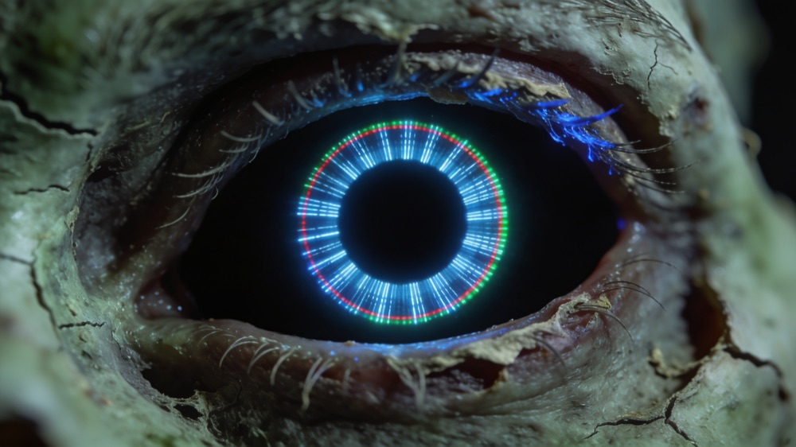
Extreme macro close-up of a corpse's eye socket filling the frame. Pale grey-green decayed skin, dry cracked flesh, colourless lashes, sunken lids. THE SOCKET IS EMPTY AND TOTALLY BLACK. There is no eyeball in it. From lid to lid, corner to corner, the opening is filled with flat absolute black — an empty hole in the skull. No white, no sclera, no eyeball surface, no wetness, no reflection. Pure void. FLOATING IN THAT VOID: a single ring of cold blue light, like an iris that has switched on inside the emptiness. The ring does not touch the edges of the socket — black surrounds it on all sides, so it clearly hovers inside a hole rather than sitting on an eyeball. The ring is made of fine concentric filaments of light with tiny horizontal scanlines crossing it, and a faint red-green-blue channel separation at its outer edge. It emits steadily, saturated, fully powered. AT THE RING'S CENTRE: black. The middle of the ring is the same absolute black as the rest of the socket — the ring encircles nothing. The blue light spills faintly onto the lashes and the rim of the lids, revealing the dead skin around it. Beyond the socket, near-black. Cinematic macro photograph, shallow depth of field, fine grain.
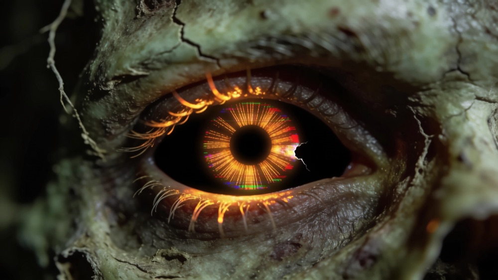
Extreme macro close-up of a corpse's eye socket filling the frame. Pale grey-green decayed skin, dry cracked flesh, colourless lashes, sunken lids. THE SOCKET IS EMPTY AND TOTALLY BLACK. No eyeball, no white, no sclera, no wet surface. From lid to lid the opening is flat absolute black — an empty hole in the skull. FLOATING IN THAT VOID: a single ring of warm amber-orange light, an iris switched on inside the emptiness but running out of power. The ring does not touch the edges of the socket — black surrounds it completely. It is made of fine concentric filaments with horizontal scanlines crossing it, but the light is unstable: segments of the ring have gone dark, parts of it burn brighter than the rest, the red green and blue channels are smeared apart at its edge, and a tearing artefact cuts across it as if it is losing sync. Dim, uneven, guttering. AT THE RING'S CENTRE: black. The middle of the ring is the same absolute black as the rest of the socket. Weak amber light spills onto the lashes and lid rims. Beyond the socket, near-black. Cinematic macro photograph, shallow depth of field, fine grain.
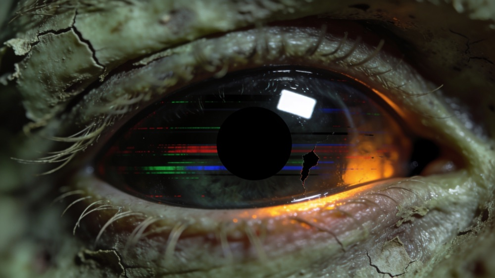
Extreme macro close-up of an eye socket filling the frame. Pale grey-green decayed corpse skin, dry cracked flesh, colourless lashes. THERE IS NO WHITE OF THE EYE. No sclera, no white anywhere. The entire eye opening — corner to corner, lid to lid — is one dark curved glass panel set into the socket. A screen, not an eyeball. THE PANEL IS FAILING. Horizontal scanlines still cross it but they are unstable: whole lines have dropped out and sit as black gaps, others burn too bright. Red, green and blue channels are visibly separated and smeared. A tearing artefact runs across the panel as if it is losing sync. It emits warm amber-orange light from within, dim, uneven and guttering — low on power. AT ITS CENTRE: a perfect, geometrically exact black circle. Flat matte black, no reflection, no catchlight — returning nothing while the panel around it flickers. ONE reflection only: a small hard-edged rectangular white highlight on the wet surface, off to one side, far from that black circle. Amber light spills weakly onto the lower lid. Beyond the socket, near-black. Cinematic macro photograph, shallow depth of field, fine grain.
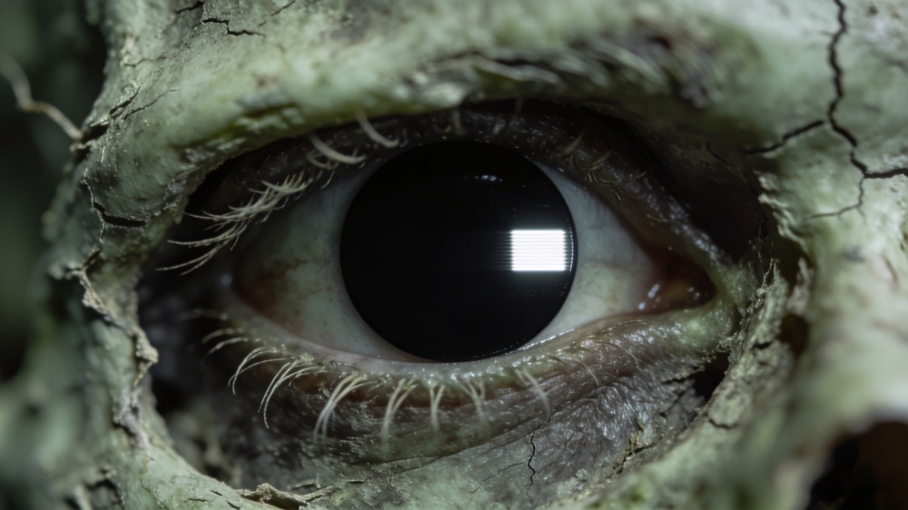
Extreme macro close-up of an eye socket filling the frame. Pale grey-green decayed corpse skin, dry cracked flesh, colourless lashes. THE EYE IS GONE. Where the eye should be there is ONE single flat black circle filling the entire socket — corner to corner, lid to lid. No white of the eye, no sclera, no iris ring, no pupil, no separate parts at all. Just one perfectly black disc, like a switched-off monitor, like an empty hole in the skull. Absolutely no structure inside it. It is very slightly reflective, the way dark switched-off glass is: a faint ghost of horizontal scanline texture is barely readable across it, caught by outside light only — no emission, no colour, no glow of any kind. ONE reflection only: a small hard-edged rectangular white highlight sitting on that black surface, off to one side — proof that light exists outside the frame and that this thing is not returning it. No blue, no amber, no glow anywhere. The only colours are the dead grey-green of the skin and the black of the disc. Beyond the socket, near-black. Cinematic macro photograph, shallow depth of field, fine grain.
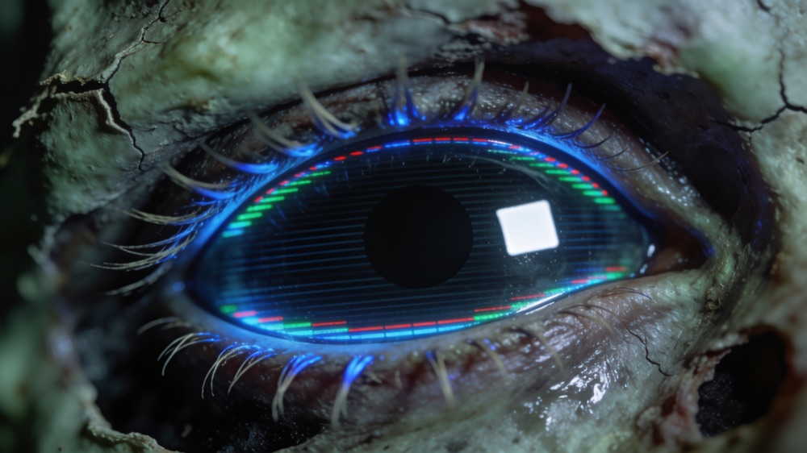
Extreme macro close-up of an eye socket filling the frame. Pale grey-green decayed corpse skin around it, dry cracked flesh, colourless lashes. THERE IS NO WHITE OF THE EYE. No sclera, no white anywhere. The entire eye opening — from inner corner to outer corner, from upper lid to lower lid — is filled edge to edge by ONE dark curved glass panel set into the socket. It is a screen, not an eyeball. Where a human eye would show white, this shows more dark glass. THE PANEL IS POWERED AND GLOWING. Fine horizontal scanlines run straight across the whole panel from corner to corner, evenly spaced, like an interlaced monitor. The red, green and blue channels separate slightly near the edges, leaving thin chromatic fringes. The panel emits cold blue light from within, steady and saturated — fully charged. AT ITS CENTRE: a perfect, geometrically exact black circle. Flat matte black, no reflection, no catchlight, no detail — it returns no light at all even though the panel around it glows. A hole punched in a lit screen. ONE reflection only: a small hard-edged rectangular white highlight on the wet surface, off to one side, well away from that black circle — a screen reflected from outside the frame. Blue light spills faintly onto the lashes and lower lid. Beyond the socket, near-black. Cinematic macro photograph, shallow depth of field, fine grain.
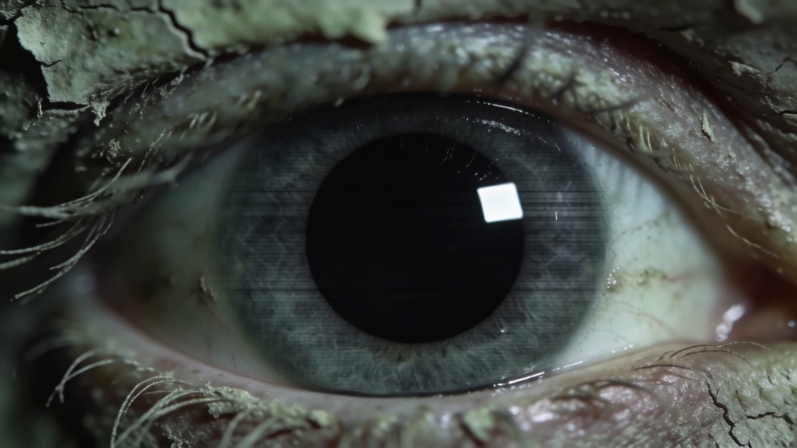
Extreme macro close-up of a single human eye filling the frame. Pale grey-green decayed skin, dry cracked flesh, colourless lashes — a corpse's eye. THE IRIS IS A DEAD SCREEN. No light comes from it at all. The horizontal scanlines are still faintly present but only as a ghost of texture caught by outside light — no emission, no colour, no glow. The iris is a dark grey-black panel, slightly reflective like switched-off glass, its ring barely distinguishable from the pupil. THE PUPIL IS ABSOLUTE. A perfect black circle at the centre, flat matte black, no reflection at all. Because the iris is also dark, the pupil and iris almost merge into a single large black hole — that merging is the point of the image. ONE reflection only: a small hard-edged rectangular white highlight on the wet cornea, off to one side, far from the pupil — proof that light exists outside, and that this eye is not returning it. No blue, no amber, no glow anywhere. Cold dead greys. Beyond the eye, near-black. Cinematic macro photograph, shallow depth of field, fine grain.
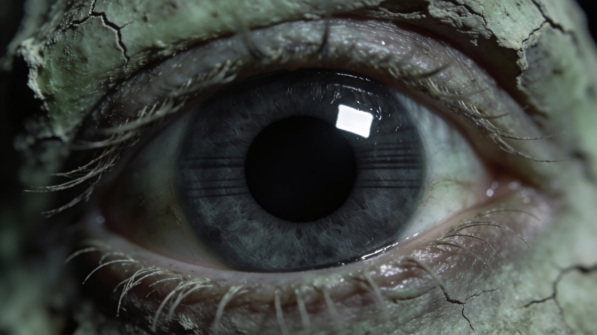
Extreme macro close-up of a single human eye filling the frame. Pale grey-green decayed skin, dry cracked flesh, colourless lashes — a corpse's eye. THE IRIS IS A DEAD SCREEN. No light comes from it at all. The horizontal scanlines are still faintly present but only as a ghost of texture caught by outside light — no emission, no colour, no glow. The iris is a dark grey-black panel, slightly reflective like switched-off glass, its ring barely distinguishable from the pupil. THE PUPIL IS ABSOLUTE. A perfect black circle at the centre, flat matte black, no reflection at all. Because the iris is also dark, the pupil and iris almost merge into a single large black hole — that merging is the point of the image. ONE reflection only: a small hard-edged rectangular white highlight on the wet cornea, off to one side, far from the pupil — proof that light exists outside, and that this eye is not returning it. No blue, no amber, no glow anywhere. Cold dead greys. Beyond the eye, near-black. Cinematic macro photograph, shallow depth of field, fine grain.
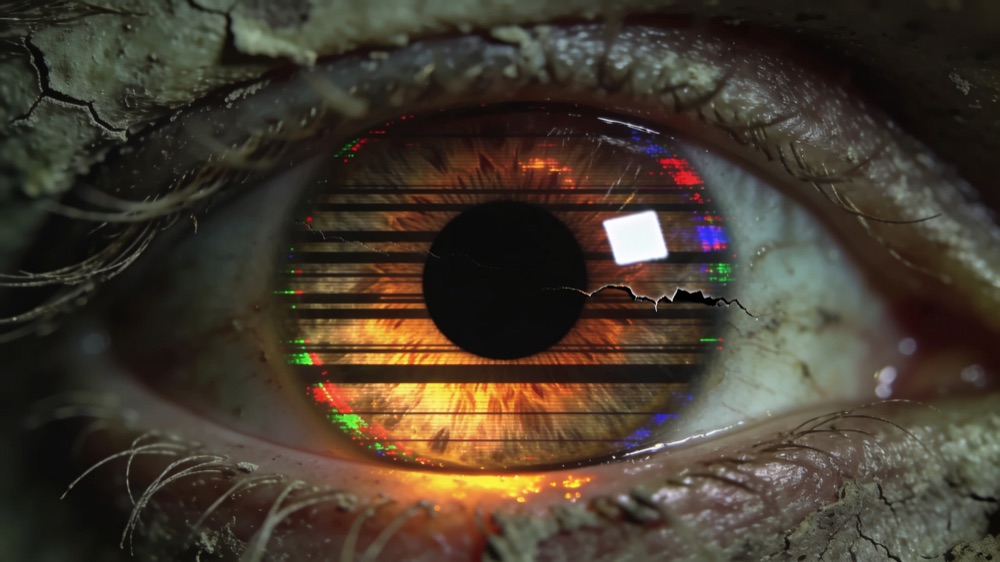
Extreme macro close-up of a single human eye filling the frame. Pale grey-green decayed skin around it, dry cracked flesh, colourless lashes — a corpse's eye. THE IRIS IS A FAILING SCREEN. Horizontal scanlines run across the iris but they are now unstable: some lines have dropped out entirely and sit as black gaps, others are brighter than they should be. The red, green and blue channels are visibly separated at the iris rim, smeared. A faint tearing artefact runs across the iris as if the display is losing sync. The iris emits warm amber-orange light from within — dimmer and more uneven than blue would be, guttering, low on power. THE PUPIL IS ABSOLUTE. A perfect, geometrically exact black circle at the centre. Flat matte black, no reflection, no catchlight, no detail — it returns nothing even though the iris around it glows. A hole, not an eye part. ONE reflection only: a small hard-edged rectangular white highlight on the wet cornea, off to one side, far from the pupil. The amber light spills weakly onto the lower lid. Beyond the eye, near-black. Cinematic macro photograph, shallow depth of field, fine grain.
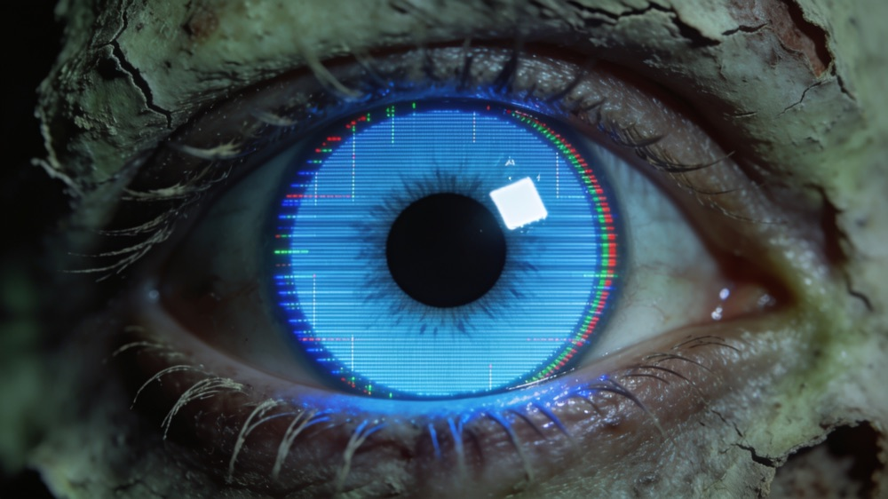
Extreme macro close-up of a single human eye filling the frame. The surrounding skin is pale grey-green and decayed — dry cracked flesh, colourless lashes, the eye of a corpse. THE IRIS IS A SCREEN. Not a glowing sci-fi lens — an actual display surface. Fine horizontal scanlines run straight across the iris from edge to edge, evenly spaced, like an interlaced monitor. At the outer rim of the iris the red, green and blue channels separate very slightly, leaving thin chromatic fringes. A faint pixel grid is just visible in the texture. The iris emits cold blue light from within, evenly, the way a screen emits rather than reflects — bright, saturated, steady, fully charged. THE PUPIL IS ABSOLUTE. A perfect, geometrically exact black circle at the centre. Completely flat matte black. No reflection, no catchlight, no detail, no depth — it returns no light whatsoever, even though the iris around it is glowing. It reads as a hole, not as an eye part. ONE reflection only: a small hard-edged rectangular white highlight on the wet cornea, off to one side, well away from the pupil — a screen reflected from somewhere outside the frame. The blue screen-light spills faintly onto the lower lid and lashes. Everything beyond the eye falls to near-black. Cinematic macro photograph, shallow depth of field, fine grain.
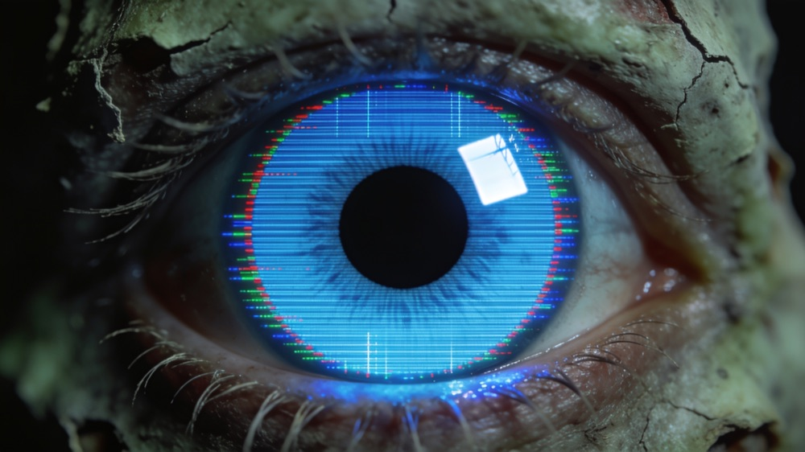
Extreme macro close-up of a single human eye filling the frame. The surrounding skin is pale grey-green and decayed — dry cracked flesh, colourless lashes, the eye of a corpse. THE IRIS IS A SCREEN. Not a glowing sci-fi lens — an actual display surface. Fine horizontal scanlines run straight across the iris from edge to edge, evenly spaced, like an interlaced monitor. At the outer rim of the iris the red, green and blue channels separate very slightly, leaving thin chromatic fringes. A faint pixel grid is just visible in the texture. The iris emits cold blue light from within, evenly, the way a screen emits rather than reflects — bright, saturated, steady, fully charged. THE PUPIL IS ABSOLUTE. A perfect, geometrically exact black circle at the centre. Completely flat matte black. No reflection, no catchlight, no detail, no depth — it returns no light whatsoever, even though the iris around it is glowing. It reads as a hole, not as an eye part. ONE reflection only: a small hard-edged rectangular white highlight on the wet cornea, off to one side, well away from the pupil — a screen reflected from somewhere outside the frame. The blue screen-light spills faintly onto the lower lid and lashes. Everything beyond the eye falls to near-black. Cinematic macro photograph, shallow depth of field, fine grain.
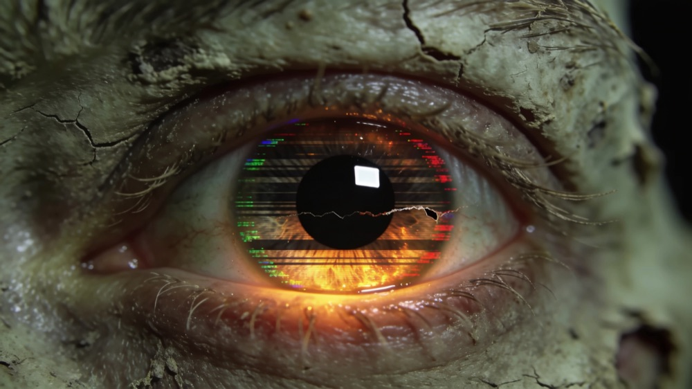
Extreme macro close-up of a single human eye filling the frame. Pale grey-green decayed skin around it, dry cracked flesh, colourless lashes — a corpse's eye. THE IRIS IS A FAILING SCREEN. Horizontal scanlines run across the iris but they are now unstable: some lines have dropped out entirely and sit as black gaps, others are brighter than they should be. The red, green and blue channels are visibly separated at the iris rim, smeared. A faint tearing artefact runs across the iris as if the display is losing sync. The iris emits warm amber-orange light from within — dimmer and more uneven than blue would be, guttering, low on power. THE PUPIL IS ABSOLUTE. A perfect, geometrically exact black circle at the centre. Flat matte black, no reflection, no catchlight, no detail — it returns nothing even though the iris around it glows. A hole, not an eye part. ONE reflection only: a small hard-edged rectangular white highlight on the wet cornea, off to one side, far from the pupil. The amber light spills weakly onto the lower lid. Beyond the eye, near-black. Cinematic macro photograph, shallow depth of field, fine grain.
A documentary-style photograph taken from directly behind two people sitting side by side at a long desk in a small dim workroom, late at night. We see the backs of their heads — both with dark hair — and their dark jackets, silhouetted. Each person faces their own monitor. The two monitors are the main light in the room and each displays a different deep-space image: one a blue-violet nebula and star field, the other a spiral galaxy. The screens are not bright white — they are dark images with glowing detail, casting a cold blue light onto the two figures' shoulders and the desk. The room is cramped and lived-in: cables coiled on the desk, a paper coffee cup, an open notebook, papers, a small warm desk lamp further back giving one pocket of amber against all the blue. Bare walls, no windows. Symmetrical composition, camera at head height behind them, slight wide angle. Photorealistic documentary photograph on 35mm film, natural grain, available light only, shallow depth of field. Cinematic but unstaged — it must look like a real photograph of real people working, not a rendered image.
Real photograph, shot from behind: two people at a shared desk in a dark cramped edit room at night, seen from the back, only their dark hair and shoulders visible against the glow of their screens. Two monitors face away from us, each showing a different image of outer space — one a deep blue nebula, the other a distant galaxy. That screen light is the dominant light source, cold and blue on the backs of their heads. A single warm desk lamp sits between and behind them, small and dim, the only warm note. Cluttered working desk: tangled cables, coffee cup, notebook and pen, loose printed pages, a small speaker. Plain walls, no window, low ceiling, a sense of a room too small for the work happening in it. Centred symmetrical framing, camera just behind and slightly above them. Natural available light, 35mm film grain, muted colour, shallow focus. It must read as a candid documentary photograph of real people — not illustration, not CGI, not a render.
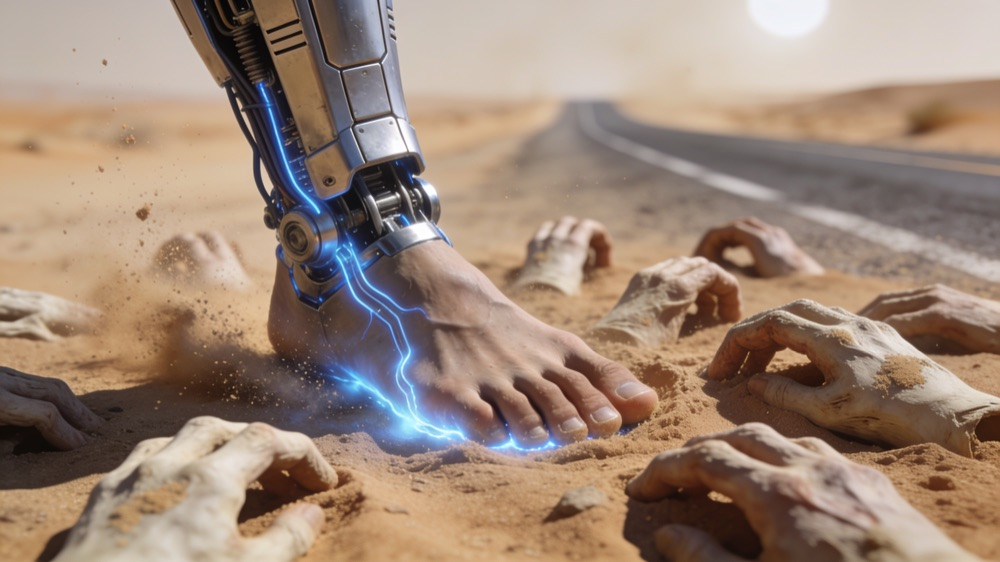
Extreme close-up, low to the ground. A bare chrome mechanical foot presses down hard onto a bed of severed human hands half-buried in desert sand. The hands are pale, dust-caked and desiccated, fingers curled upward out of the sand like a road paved with them, stretching away out of focus behind. Sand sprays up from the impact. THE MACHINE: the foot and lower leg are exposed engineered metal — segmented plates, cables and channels. Thin cold BLUE luminous lines run through the machinery the way blood runs through veins, tracing along the cables down the leg and pooling brighter at the ankle and toe joints. The light reads as circulation, not as indicator lamps. No red lights anywhere. COLOR: everything is one warm ochre desert monochrome — sand, air and dust all the same colour, thick airborne dust. The only other colour is the blue in the machine. No sun, no moon, no black disc, no bright circle anywhere in frame. The light source is off camera. No horizon, no sky — the frame is filled by the ground, the hands and the leg. Photographic, cinematic, shallow depth of field, gritty realism. Not a painting, not an illustration.
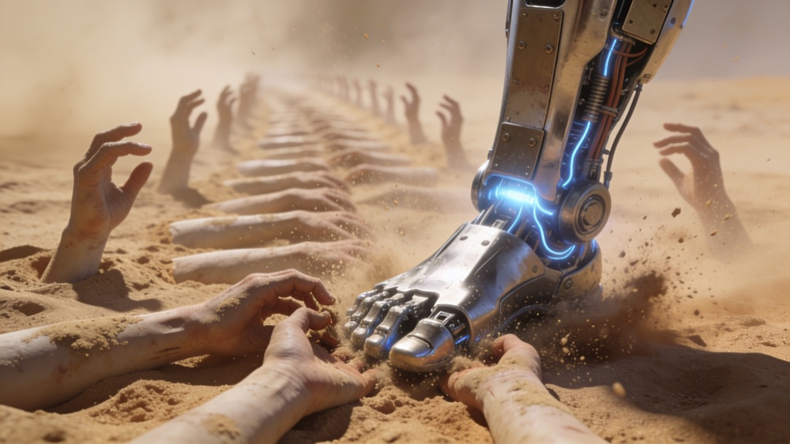
Ground-level extreme close-up in a desert: a machine foot crushing severed human hands buried in the sand. The sand is packed with cut-off human hands and forearms, pale and dust-covered, fingers reaching up out of the ground, laid out like a path that recedes into the dusty blur behind. One chrome robotic foot has just landed on top of them, fingers bending and breaking under the weight, sand and grit exploding outward. The robotic foot and shin are bare machinery — metal plates, exposed cabling, hydraulic channels. Cold blue light glows from inside the mechanism and runs along the cables like veins, gathering brightest at the ankle and the toes. No red or orange machine lights. Single warm ochre tone across the whole image, heavy suspended dust, no sky visible, no sun, no moon, no dark circle in the frame. Cinematic photograph, tight focus on the foot and the nearest hands, everything behind falling into dusty blur. Photorealistic.
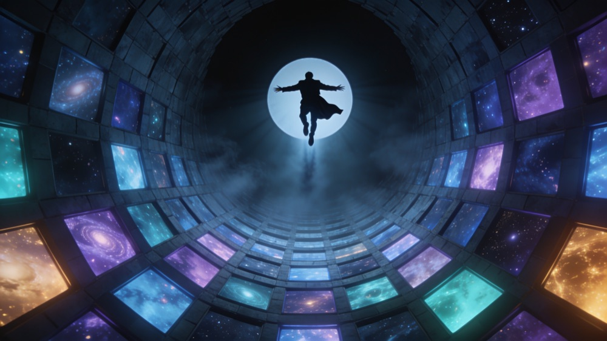
Looking straight up a narrowing funnel built of glowing rectangular screens. Extreme vertical perspective, like lying on the floor of a giant well and staring up. GEOMETRY: the nearest ring of panels fills the whole bottom of the frame corner to corner and is enormous. Each successive ring above is noticeably smaller than the one below it, marching upward and inward, until at the top they close down to a tiny circle occupying roughly one fifth of the frame width, dead centre. Dramatic taper. The convergence must be obvious. SURFACE: the funnel wall is completely tiled with rectangular screens, packed tight with only thin seams, wrapping all the way around every ring. Zero bare wall, zero empty patches. Each screen glows with a different galaxy or nebula — cold blue, violet, teal, a few amber. INTERIOR: entirely hollow and empty. No column in the middle, no metal tube, no scaffolding, no steps, no floor — only air and drifting haze. FIGURE: high in the frame, at that small top circle, a black silhouette of a man in mid-FLIGHT — weightless, body extended, arms open, legs trailing straight behind, coat billowing downward. Clearly flying upward at speed, unsupported. TOP OF THE FUNNEL: his body covers nearly all of the small circle. The remaining edges of that circle are solid pure black — nothing beyond is visible, no sky, no stars, no planet, no glow. Every screen whole, no damage or fragments. Atmospheric haze, god rays, staggering height. Cinematic photograph.
A tunnel of screens seen from directly below, looking straight up. Strong vertical one-point perspective. COMPOSITION — FOLLOW EXACTLY: at the BOTTOM edge of the frame the ring of screens spans the entire image width, left edge to right edge, the panels huge and close to the camera. As the rings rise they shrink steadily and visibly. By the vertical middle of the frame a ring spans only about half the image width. Near the TOP the rings have converged into a small circle no wider than one fifth of the image width, centred horizontally. The result is a funnel / tunnel narrowing sharply toward the top centre. THE WALL: every ring is packed edge to edge with rectangular glowing panels, wrapping fully around the tunnel. No bare wall, no empty surface, no dark gaps — only hairline seams. Each rectangle has a thin luminous white-blue border and shows a different nebula, galaxy or star field in blue, violet and teal. HOLLOW: the centre is open air and haze. No central pillar, no metal column, no pipe, no beams, no stairs, no ladder, no platform, no floor. THE FIGURE: a man FLYING upward, positioned high in the frame right at the small converging circle. Airborne — body stretched out and lifted, arms flung wide, legs straight and trailing behind and below, long coat streaming down from the speed. Not standing, not walking, not climbing; nothing touches him. Pure black silhouette seen from beneath. THE TOP: his silhouette almost completely blocks that small circle at the top. Any sliver of the circle not covered by his body is FLAT PURE BLACK — no sky, no stars, no planet, no light, nothing visible beyond. The end of the tunnel reveals nothing. All panels intact, no cracks, no broken glass, no shards. Volumetric haze, cold blue and violet, vertigo, immense scale. Cinematic photographic render.
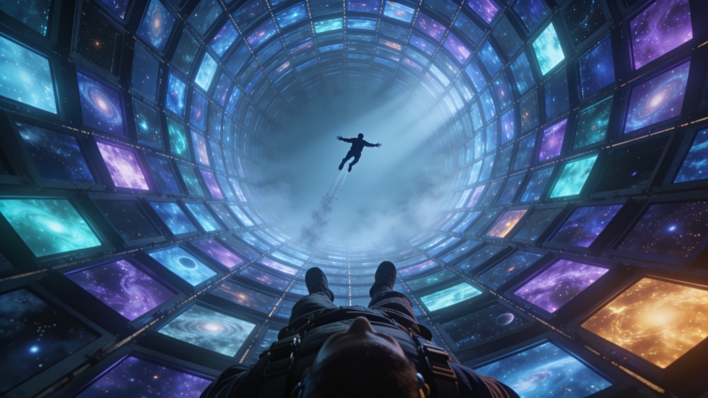
Extreme vertical worm's-eye view: the camera lies on its back and looks straight up the inside of a vast cylinder completely tiled with glowing rectangular video screens. SCREENS EVERYWHERE: the curved wall is 100% covered by rectangular panels, wrapped in rings around the cylinder and stacked upward toward a distant vanishing point at top centre. Not one patch of bare wall is visible — the panels are packed tightly with only thin seams between them, continuing unbroken around the full circumference and up out of sight. Each shows a different galaxy or nebula, glowing cold blue, violet and teal with occasional amber. The interior is hollow and completely empty — no central column, no metal pipe or tube in the middle, no beams, no stairs, no ladders, no platforms, no floor. Just open air and drifting haze. Suspended in that emptiness, far above the camera, a small dark silhouette of a man in flight: body horizontal-to-diagonal, arms flung open, legs extended straight behind, coat whipping downward, clearly weightless and accelerating upward. He is flying, not walking or climbing — nothing supports him. All screens whole and undamaged, no shattering, no fragments. Heavy atmosphere, god rays, overwhelming height. Cinematic photograph.
Looking straight up. The camera points vertically upward into an enormous hollow tube whose inner wall is made ENTIRELY of glowing rectangular screens. THE WALL: rectangular panels cover every square inch of the curved inner wall — packed edge to edge in horizontal rings that wrap fully around and stack upward, ring after ring, receding to a vanishing point at the exact centre-top of the frame. There is NO bare wall anywhere, no empty surface, no dark gaps between clusters, no exposed structure. Only hairline seams between panels. Each rectangle has a thin luminous white-blue edge and shows a different deep-space image — nebulae, spiral galaxies, star fields — in blues, violets, teals, a few warm ambers. EMPTY CENTRE: the middle of the tube is completely open and empty air. There is NO central pillar, NO metal column, NO cylinder in the middle, NO scaffolding, NO stairs, NO ladder, NO platform, NO floor, NO walkway. Nothing but air and haze between the camera and the top. THE FIGURE: a man FLYING upward through that empty air, high above the camera, small. He is airborne — body lifted and stretched out, arms spread wide, legs straight and trailing behind and below him, long coat streaming downward from the speed of his ascent. He is not standing, not walking, not climbing; his feet touch nothing. Pure black silhouette seen from directly beneath, no face, no detail. Every panel intact — no cracks, no broken glass, no shards, no debris. Volumetric haze, dust catching the screen light, cold blue and violet, vertiginous upward perspective, immense scale. Cinematic photographic render.
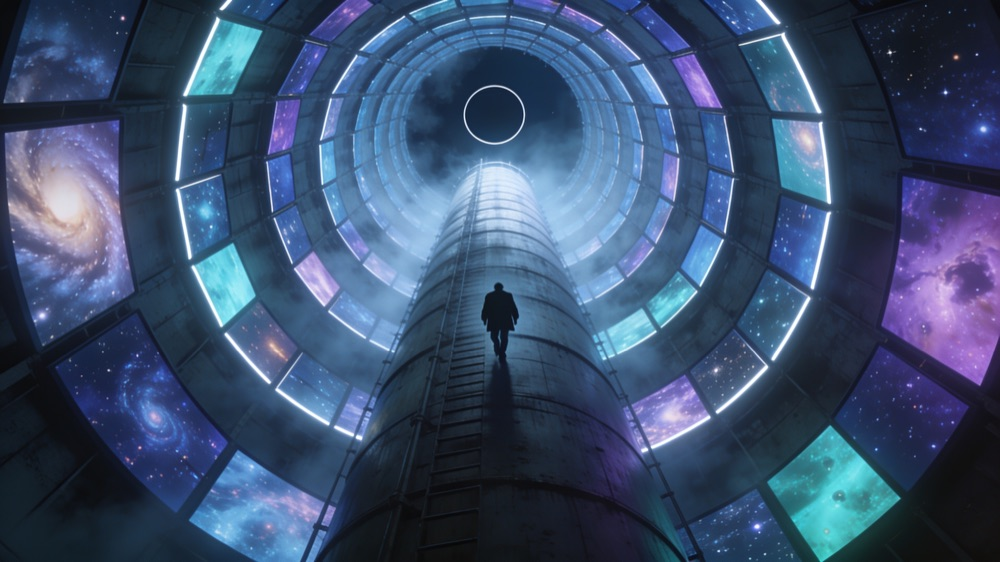
Vertical one-point perspective looking upward along the inside of a colossal silo made of rectangular video screens. The axis of the cylinder is vertical. Rings of rectangular panels wrap horizontally around the shaft and stack upward, each ring smaller than the last as it recedes, converging on a vanishing point at the top centre of the image. The wrapping is clearly visible: panels curve away around the left and right walls of the tube. Every panel is a distinct rectangle with a thin luminous edge, showing a different galaxy, nebula or star field in cold blue, violet and teal. Far up the shaft, a tiny dark silhouette of a man in a coat ascends toward the opening, seen from directly below, dwarfed by the structure. Above him the tube opens onto a small circle of dark sky. All panels are perfectly intact — no cracks, no broken glass, no shards, no debris anywhere in the frame. Thick atmospheric haze, shafts of light, extreme sense of height and upward motion. Cinematic photograph, not illustration.
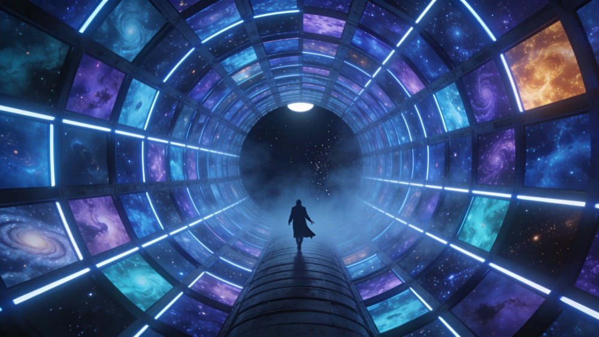
Camera pointed STRAIGHT UP a vertical shaft. Worm's-eye view looking up the inside of an enormous vertical cylinder whose walls are built entirely of rectangular glowing screens. THE STRUCTURE: the cylinder's axis runs vertically, up and down. Its wall is made of hundreds of separate rectangular panels arranged in horizontal rings that wrap all the way around the shaft, ring stacked upon ring, rising away from the camera. Because we are looking straight up the tube, the rings appear as concentric bands converging toward a single vanishing point at the exact centre-top of the frame. The panels curve around the shaft to the left and right and continue behind, so the tube is unmistakably closed and cylindrical. Each panel has a thin bright white-blue border and displays a different deep-space image — nebulae, spiral galaxies, star fields — in blues, violets and teals with a few warm amber ones. THE FIGURE: a single small dark human silhouette in a long coat, high above the camera, rising away up the shaft toward the vanishing point. Seen from directly beneath, tiny, arms loose, coat trailing downward with the motion. Pure black silhouette, no face, no detail. At the very top of the shaft the panels end at a small circular opening of open night sky. EVERYTHING IS INTACT. No broken glass, no shattered panels, no flying shards, no debris, no cracks. All screens whole and unbroken. Volumetric haze, dust motes, cold blue and violet light, vertiginous vertical perspective, immense scale. Cinematic photographic render.
A dark silhouetted man in a long coat flies straight upward through the centre of a vast curved wall of rectangular screens. Arms slightly out, legs trailing, seen from below and behind, pure black silhouette with no face or detail. THE SCREENS: hundreds of separate rectangular panels, each with a thin bright white-blue glowing border, each displaying a different deep-space image — nebulae, spiral galaxies, star clusters, in blues, violets, teals and a few warm amber ones. Crucially the panels extend far to the LEFT and far to the RIGHT, wrapping around the viewer in a wide curve like a giant curved LED volume or a panoramic VFX screen. The array bends toward the camera at both edges so the curvature is unmistakable, and it also recedes upward into the distance, tier upon tier, converging toward a vanishing point high above. The panels are staggered at different sizes and slight angles, floating with thin dark gaps between them. He has just burst through one of the panels: shards of glowing glass spray outward and a bright vertical trail of light falls away beneath his feet. Background beyond the screens is pure black. Cold blue and violet screen light, volumetric haze, immense scale, vertiginous low-angle perspective. Cinematic photographic render, not illustration.
Extreme wide low-angle shot. A tiny dark human silhouette in a coat rises upward through the hollow centre of an enormous curved array of rectangular glowing screens that fills the entire frame from left edge to right edge. The screens are individual framed rectangles with thin luminous white-blue edges, each showing a different galaxy, nebula or star field. They are laid out in a sweeping horizontal curve that wraps around and past both sides of the frame — a panoramic curved video wall many panels wide — while simultaneously stacking upward in receding tiers toward a distant vanishing point. Panels vary in size and tilt slightly, floating in black space with narrow gaps between them. Broken glass fragments and a column of falling light mark where the figure punched through a panel below. Pure black void behind everything. Cold blue, violet and teal light with occasional warm amber panels. Thick atmospheric haze, god rays, overwhelming scale. Photographic cinematic render.
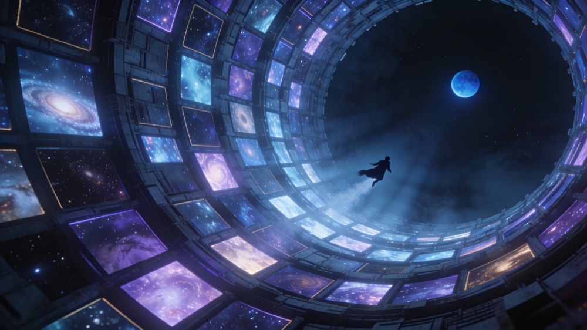
Side view of a colossal cylindrical tower whose walls are made of thousands of rectangular glowing screens, each showing a different image of outer space — galaxies, nebulae, star fields. The rectangles are distinctly separate panels with visible borders, wrapping around the cylinder so the curvature is obvious, stacked in rings from bottom to top. A single small dark human figure flies upward through the hollow centre of this tower, silhouetted against the glowing panels, tiny against the scale. He is rising, coat trailing. Above the top rim of the cylinder: open dark sky, and a small round blue planet. The contrast between the rectangles of the tower and the single circle of the planet above is the point of the image. Cold blue and violet screen light, thick haze, god rays, enormous scale, cinematic photograph, vertiginous perspective.
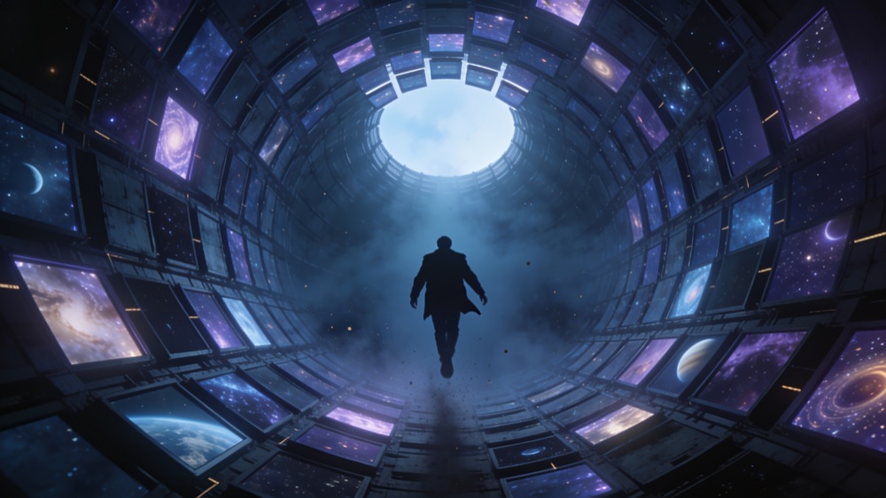
A lone dark human silhouette rises straight upward through the middle of an enormous vertical cylinder built entirely of rectangular screens. The screens are arranged in a continuous ring around him, tier upon tier, curving away to the left and right and receding upward and downward into the distance — a tower of frames with the figure at its centre, like the inside of a vast drum. Each rectangular screen glows faintly, showing a different fragment of outer space: nebulae, star fields, planets, galaxies. They are clearly separate framed rectangles with visible edges and thin gaps between them, not a seamless wall. The man is small in the frame, seen from a low angle from below, arms loose at his sides, rising. He is a pure dark silhouette against the glow — no face, no detail. His coat edges lift with the motion. Far above him, at the very top of the cylinder, the rectangles end and there is a circular opening of open sky. Cold blue and deep violet light from the screens, heavy atmospheric haze, dust motes catching the glow, immense scale, cinematic, vertigo. Photographic, not illustration.
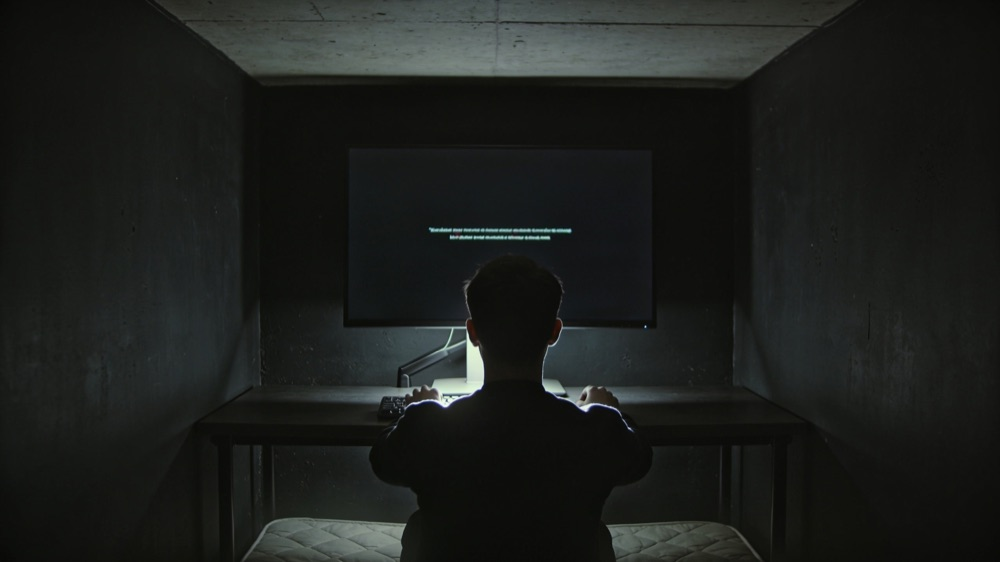
Night, a cheap little studio flat. Directly behind a person using their computer, symmetrical composition. FIGURE: sitting normally and attentively at the desk, back straight-ish, head up, looking at the screen, hands on the keyboard — clearly mid-task. Rear view, dark silhouette, no face visible. MONITOR: a normal desktop PC monitor sitting on the desk on its stand, neck and base visible against the desk surface. Not a wall-mounted TV. Plain wall behind and above it. SCREEN IN DARK MODE: an almost black screen with a few lines of small pale glowing text centered on it, like a dark-theme window. Dim and low-contrast — the screen must not be a bright white panel. The person's head partially covers some of the text, which is fine and natural. WALLS: near-black dark grey, subtle concrete grain, entirely bare, no window or view. SPACE: small cramped one-room flat, low ceiling, corner of a floor mattress entering the bottom of frame. LIGHTING: only the weak glow of the dark screen, catching the shoulder edges and a narrow strip of wall. Rest nearly black. Muted cinematic still, crushed blacks, film grain.
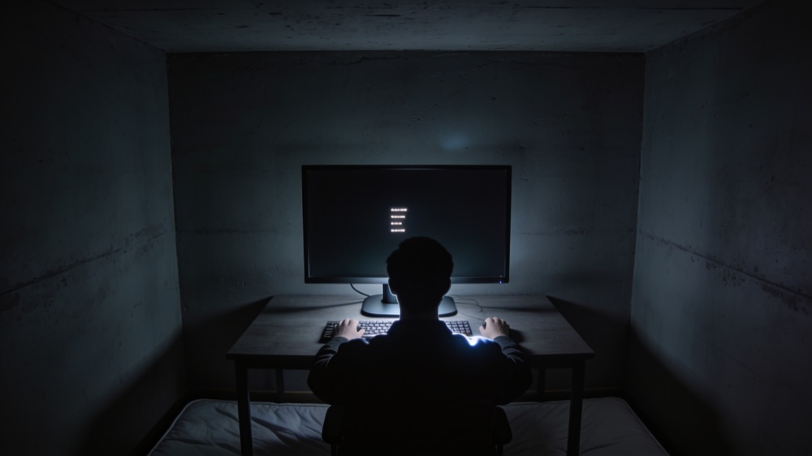
A small one-room studio apartment at night. Camera directly behind a person working at their computer, centered, symmetrical. THE PERSON: seated normally at the desk, upright, facing the monitor, hands resting on the keyboard. A natural working posture — someone in the middle of using their computer, not slumped, not asleep, not hunched over. Seen from behind, dark clothing, head and shoulders silhouetted against the screen. THE MONITOR: an ordinary desktop computer monitor standing on the desk on its own stand and base, the base clearly resting on the desk surface. Not a television, not mounted on the wall. Bare wall visible above and behind it. THE SCREEN — DARK MODE: the screen is near-black, like a dark-themed application. On it, several short lines of pale text are centered, small and softly glowing against the black. The text is dim — the screen is dark, not bright. Part of it is naturally hidden behind the person's head and shoulders, which is fine. THE WALLS: dark, almost black grey, faint bare-concrete or rough plaster texture just barely readable. Completely bare — no window, no city, no posters, no shelves. THE ROOM: cramped studio flat. Desk against the far wall, the low edge of a single mattress just visible at the bottom corner. Low ceiling. LIGHT: the dark screen is the only light source and it is weak — a faint cold spill on the shoulders and a small patch of wall. Everything else near-black. No lamp, no ceiling light. Desaturated cinematic photograph, deep shadow, film grain.
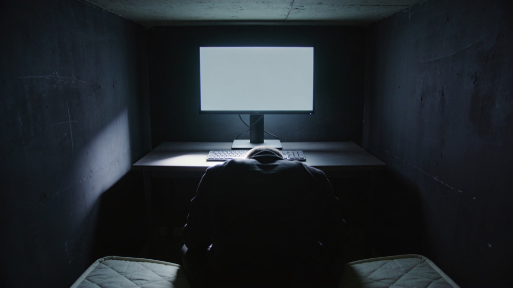
A small one-room studio apartment at night, seen from directly behind a person sitting at a desk. An ordinary cheap room — not an office, not a bunker. THE MONITOR — IMPORTANT: an ordinary desktop computer monitor STANDING ON THE DESK, resting on its own stand and base. The stand and base must be clearly visible sitting on the desk surface. It is NOT a television. It is NOT mounted or hung on the wall. There is a gap of wall visible above and behind the monitor. A keyboard lies on the desk in front of it. THE SCREEN: the screen displays a completely flat, uniform, evenly lit pale grey rectangle. Absolutely no content — no text, no icons, no windows, no image, no gradient. A single even grey fill, edge to edge, clearly brighter than the room. THE WALLS: dark, almost black grey, with a faint bare-concrete or rough plaster texture just barely readable. Completely bare — no window, no city outside, no posters, no shelves, nothing hanging. THE ROOM: cramped. The desk is pushed against the far wall. The low edge of a single mattress is just visible at the bottom corner of the frame. Low ceiling. A box barely bigger than its furniture. THE PERSON: from behind, centered, seated, shoulders slumped, head held LOW and forward so the entire screen is fully visible above their head. The head must not overlap the screen. Dark clothing, silhouetted. LIGHT: the monitor is the only light source. Its cold pale spill catches the shoulders and a small patch of wall; everything else falls to near-black. No lamp, no ceiling light, no window light. Desaturated cinematic photograph, deep shadow, fine film grain.
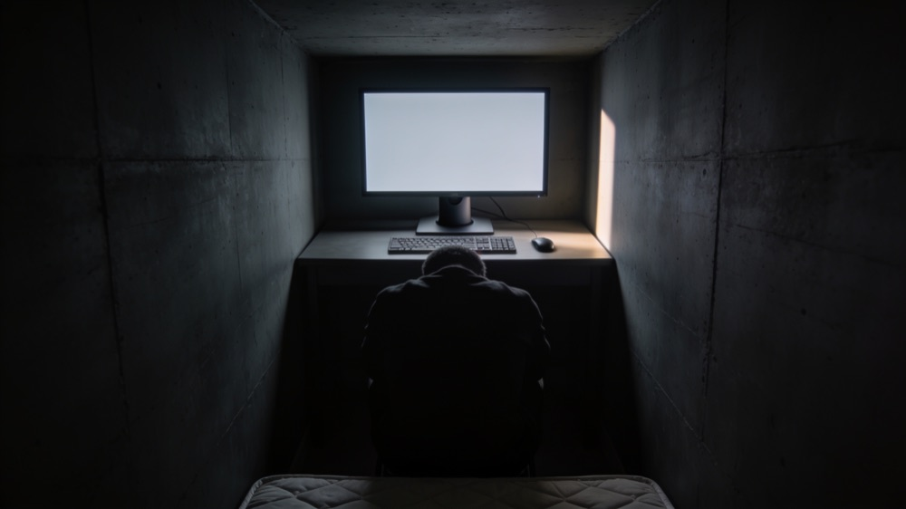
Night in a cheap little studio flat. Camera directly behind a seated person at a desk against the far wall, symmetrical. MONITOR: a normal desktop PC monitor sitting ON THE DESK on its stand — the neck and weighted base plainly visible where they meet the desk. Not a wall-mounted TV, nothing hung on the wall, bare wall clearly visible above and around the monitor. Keyboard and mouse on the desk. SCREEN: filled edge to edge with one flat uniform pale grey tone. No text, no icons, no windows, no picture, no variation — a plain grey panel, distinctly brighter than everything else in the frame. WALLS: near-black dark grey with a subtle concrete grain, entirely bare. No window, no view, no decoration. SPACE: a very small cramped one-room flat, low ceiling, the corner of a floor mattress just entering the bottom of frame. FIGURE: person from behind, head down and low, back curved, so the screen is completely unobstructed above the head. Dark silhouette, no face. LIGHTING: only the pale glow of that screen, catching shoulder edges and a narrow strip of wall. Rest of the frame nearly black. No other light source. Muted cinematic still, crushed blacks, film grain.
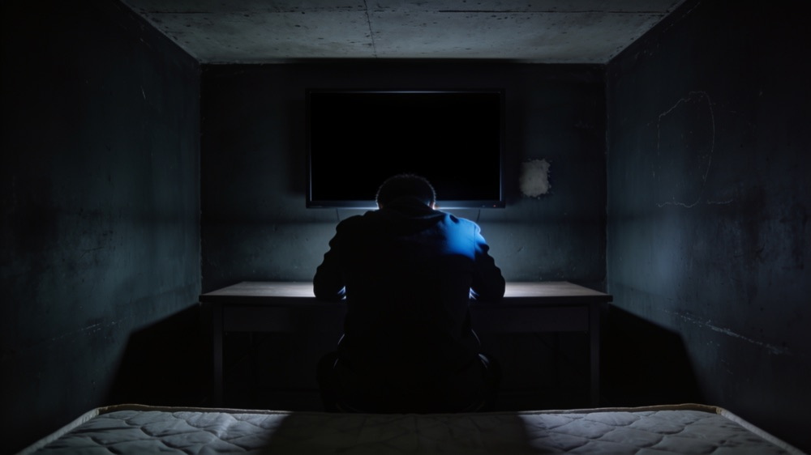
A small one-room studio apartment at night, seen from directly behind a person sitting at a desk. Ordinary cheap room — not an office, not a bunker, not a cell. THE WALLS: dark, almost black grey, with a faint bare-concrete or rough plaster texture just barely readable. Plain and empty. No window in view, no city outside, no posters, no shelves, nothing on the walls. THE ROOM: cramped. The desk is pushed against the far wall. The low edge of a single mattress or bed is just visible at the bottom corner of the frame. Ceiling low. The room reads as a box barely bigger than the furniture in it. THE PERSON: seen from behind, centered, seated, shoulders slumped, head held LOW and forward so that the entire monitor screen is fully visible above and around their head — the head must not overlap the screen. Dark clothing, silhouetted. THE SCREEN: a single monitor facing away from us. The screen is dark and blank — no text, no images, no bright white glow. Just a dim rectangle. LIGHT: the monitor is the only light source and it is weak. A faint cold blue spill catches the person's shoulders and a small patch of wall. Everything else falls to near-black. No lamp, no ceiling light, no window light. Desaturated cinematic photograph, deep shadow, fine film grain, quiet and still.
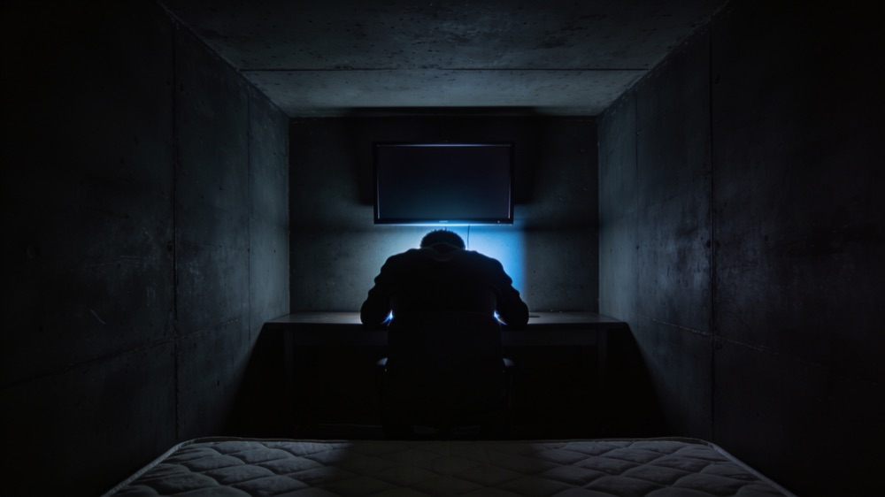
Night, a cheap little studio apartment. Camera directly behind a seated person at a desk against the far wall, symmetrical composition. WALLS: near-black dark grey with a subtle concrete-like grain, completely bare. No window visible, no view outside, no decoration whatsoever. SPACE: very small and closed in — an ordinary cramped one-room flat, low ceiling, the corner of a floor mattress just entering the bottom of the frame. Sparse and plain. FIGURE: a person from behind, head down and low, back curved, so the monitor screen is entirely unobstructed above their head. Dark silhouette, no face visible. MONITOR: facing away from camera, screen dark and empty — no text, no white glow, no bright content. A dim dark rectangle only. LIGHTING: only the faint cold blue glow of that dim screen, catching the edge of the shoulders and a narrow patch of the wall behind the desk. The rest of the frame is nearly black. No other light in the room. Muted cinematic still, crushed blacks, film grain, airless.
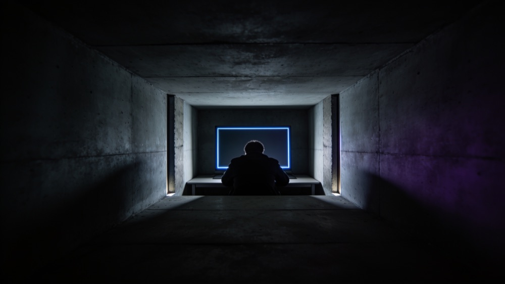
Seen from directly behind: a person hunched at a desk inside a concrete shaft so narrow the walls nearly touch their shoulders. One-point perspective, walls converging, low ceiling close overhead. The room is a sealed grey concrete box with no exit visible. LIGHT: the frame is almost entirely black. A single dim monitor faces away from the camera; only a thin cold blue rim of its light survives, tracing the person's silhouette and a narrow strip of concrete on either side. The screen is dark and blank — no text, no white glow, no bright rectangle. There is no other light source anywhere in the room. COLOR: shadowed concrete measures RGB(28,32,37) — hue 213, saturation 0.23, value 0.14. Keep it that dark. The blue is a cast, not a colour — barely present. Deep crushed blacks across most of the image. No windows, no door, no decoration, bare concrete only. Desaturated cinematic photograph, film grain, quiet and suffocating.
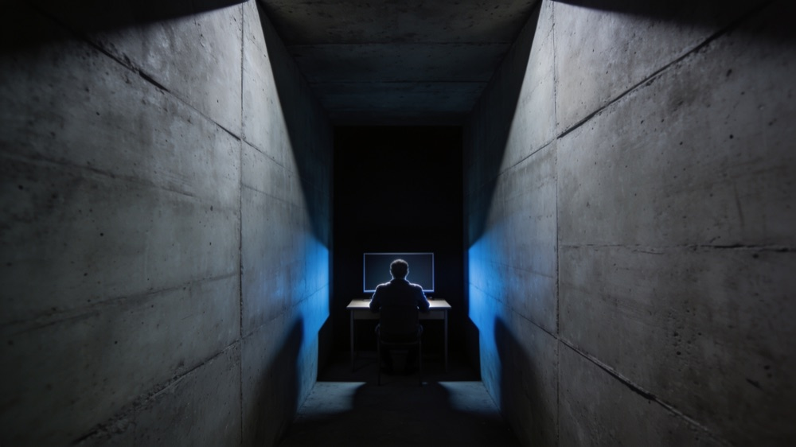
A near-black room. Bare concrete walls press in close on the left and right, so narrow the space reads as a coffin stood on end. A person sits with their back to the camera at a small desk against the far wall, facing a single monitor. Shot from directly behind, centered, symmetrical. LIGHT: there is almost no light. The single monitor is the only source and it is dim. Its cold blue spill reaches barely a foot, catching one edge of each concrete wall and the rim of the person's shoulders and head. Everything beyond that falls to black. The screen itself is dark and blank — no text, no image, no bright white glow. No lamp, no window, no overhead light, no practical light of any kind. COLOR: the concrete in shadow sits at RGB(28,32,37) — hue 213, saturation 0.23, value 0.14. Overwhelmingly dark with only a faint blue cast. Do not lift the shadows. Most of the frame should be near-black with detail only just readable. Bare concrete only. No windows, no door, no posters, no clutter, no furniture except the desk and chair. Low raw concrete ceiling. Cinematic photograph, heavy shadow, fine film grain, airless and silent.
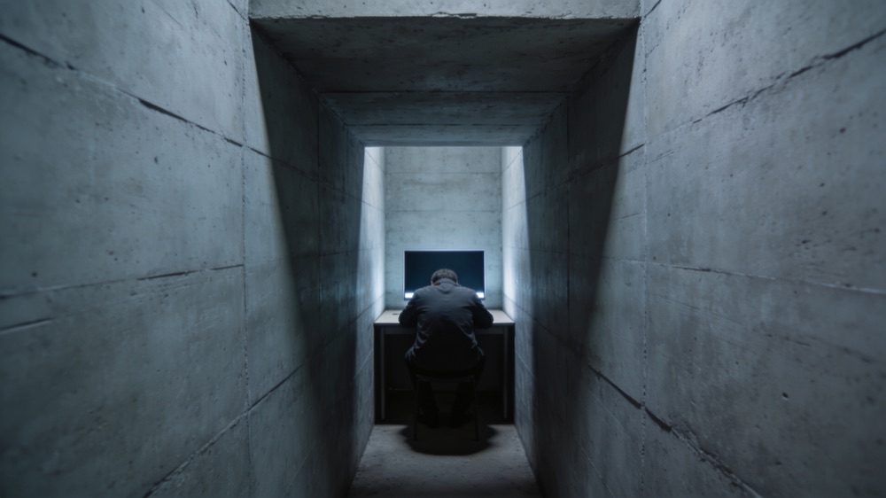
Seen from directly behind: a person hunched at a desk in a room so narrow the bare grey concrete walls almost touch their shoulders on both sides. The room is a vertical concrete shaft, coffin-like, ceiling low and close. A single monitor faces away from us, its dark screen the only light, throwing a weak cold glow onto the concrete. Perfect symmetry, one-point perspective, the walls converging. No windows, no posters, no clutter, bare concrete only. Desaturated grey-blue cinematic photograph, heavy shadow, film grain, quiet and airless.
An extremely narrow, claustrophobic room with bare grey concrete walls pressing in close on both the left and right, so tight the space reads as the inside of a coffin standing upright. A person sits with their back to the camera at a small desk pushed against the far concrete wall, facing a single computer monitor. Shot from directly behind, centered and symmetrical, the walls forming a hard vertical box around the figure. The monitor is the only light source, cold and dim, the screen itself nearly black. Low ceiling of raw concrete. No windows, no door visible, no decoration, nothing on the walls, no other furniture. Cinematic photograph, muted grey and cold blue, deep shadow, fine film grain, shallow depth of field. The framing itself should feel like a box closing on the person.
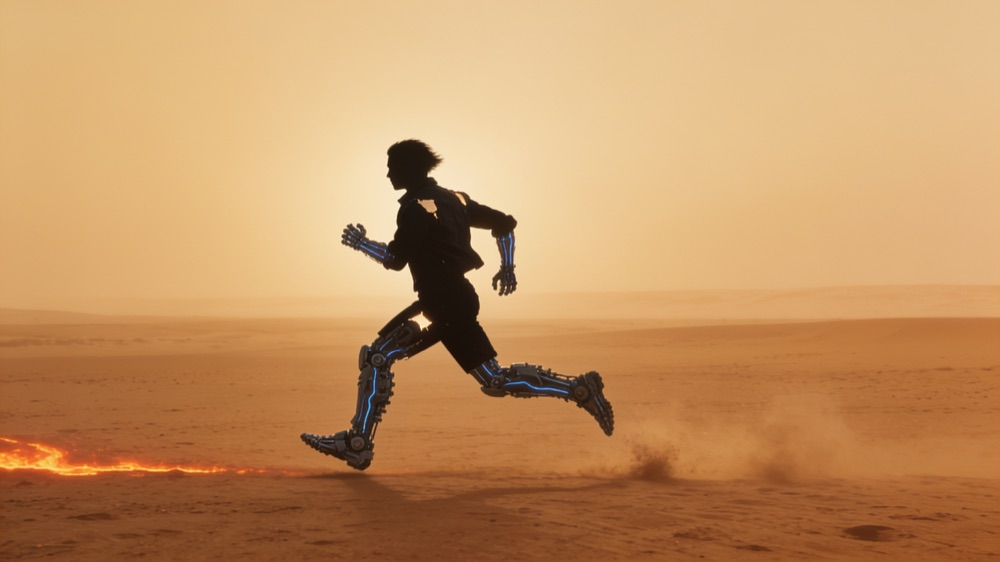
The mechanical limbs must match the reference EXACTLY — same design, same plating, same joints. Do not redesign them. EXTREME WIDE SHOT of a vast empty desert, camera extremely far away — the figure is about one twelfth of the frame height. Backlight from outside the frame. BACKLIT SILHOUETTE, solid near-black inside, no colour or texture within. HEAD: small dark mass, NO facial features, NO rim light on it. But the HAIR reads in the outline — short, swept back, fuller at the crown, tapering to the nape, top edge broken and wispy with a few strands catching the sky. Not a smooth bald ball. ALL FOUR EXTREMITIES MECHANICAL — both hands and both feet, no exceptions. No human hand or foot anywhere. Forearms and lower legs mechanical as well. THE LIGHT: cold blue light is not lamps, panels or dots. It runs through the machinery like blood through veins — thin luminous lines along cables and channels down each limb, branching like vessels, brighter where they gather at wrist, ankle and knuckles, thin and faint between. Circulation, not indicators. SHORT jacket, nothing trailing, outline close to the body. Sleeve past the ELBOW, trouser past the KNEE — both joints covered by cloth. Mechanical parts only below the hems. Rim light only in broken patches on shoulder and forward thigh, narrow, soft, never brighter than the sky, never on the head. No halo, no bloom, no glowing outline, no rays. POSE: in PROFILE, left of centre, running hard LEFT to RIGHT, dust trailing from his heels. At the FAR LEFT EDGE a low creeping line of glowing molten lava has just entered, following him. Only the left margin; the desert ahead is clear. Warm ochre monochrome, bright and hazy. No volcano, no mountain, no sun, no moon, no bright disc, no visible light source in frame. Photoreal, anamorphic, film grain. No text, no watermark.
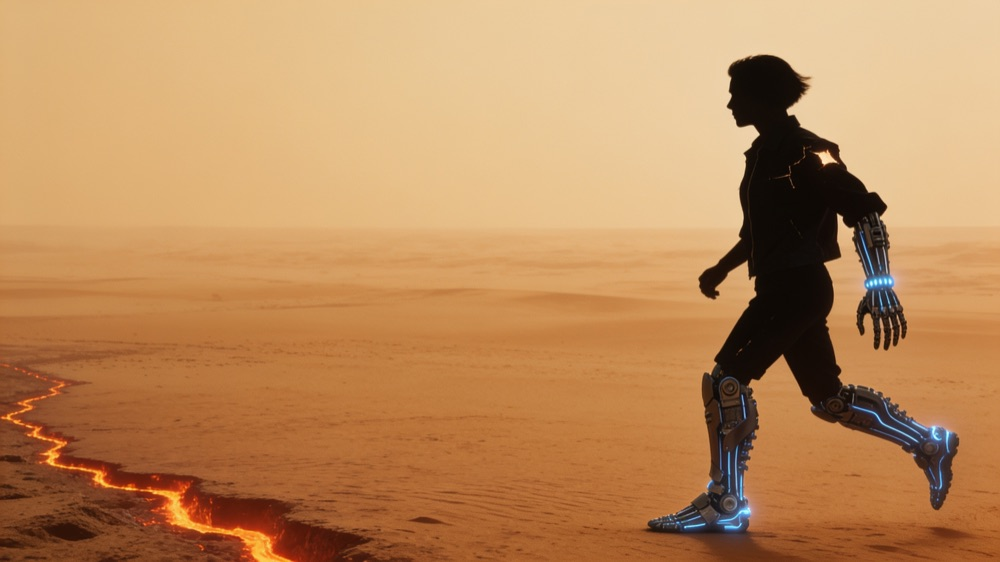
The mechanical limbs must match the reference EXACTLY — same design, same plating, same joints. Do not redesign them. EXTREME WIDE SHOT of a vast empty desert at the same extreme camera distance as before — the figure is about one twelfth of the frame height. Backlight from outside the frame. BACKLIT SILHOUETTE, solid near-black inside, no colour or texture within. HEAD: small dark mass, NO facial features, NO rim light on it. The HAIR reads in the outline — short, swept back, fuller at the crown, tapering to the nape, top edge broken and wispy. Not a smooth bald ball. ALL FOUR EXTREMITIES MECHANICAL — both hands and both feet, no exceptions. Forearms and lower legs mechanical too. THE LIGHT: cold blue running through the machinery like blood through veins — thin luminous lines along cables and channels down each limb, branching like vessels, gathering brighter at wrist, ankle and knuckles, faint between. Not lamps, not panels, not dots. SHORT jacket, nothing trailing, outline close to the body. Sleeve past the ELBOW, trouser past the KNEE — both joints covered by cloth. Rim light only in broken patches on shoulder and forward thigh, narrow, soft, never brighter than the sky, never on the head. No halo, no bloom, no glowing outline, no rays. POSE: in PROFILE, far over on the RIGHT side of frame, still running LEFT to RIGHT. The low creeping line of glowing lava is left far behind at the LEFT edge, a wide empty stretch of sand between them. He is clearly outrunning it. Warm ochre monochrome, bright and hazy. No volcano, no mountain, no sun, no moon, no bright disc, no visible light source in frame. Photoreal, anamorphic, film grain. No text, no watermark.
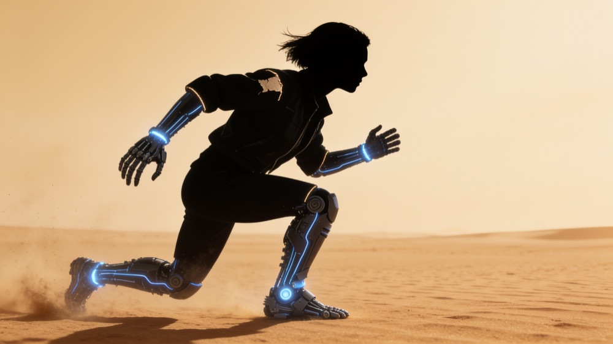
The mechanical limbs must match the reference EXACTLY — same design, same plating, same segment shapes, same joints. Do not redesign them. EXTREME WIDE SHOT of a vast empty desert of fine sand. Camera very far away — the figure is about one tenth of the frame height. Backlight from outside the frame. BACKLIT SILHOUETTE, solid near-black inside, no colour or texture within the shape. HEAD: a small dark mass with NO facial features and NO rim light on it — no face at all. But the HAIR must read in the outline: short hair swept back, fuller at the crown and tapering to the nape, its top edge slightly broken and wispy so a few separate strands catch against the bright sky. The head is NOT a smooth bald ball. ALL FOUR EXTREMITIES ARE MECHANICAL — both hands and both feet, without exception. No human hand, no human foot anywhere. The forearms and lower legs are mechanical too. THE LIGHT: cold blue light does NOT come from lamps or glowing panels or dots. It runs THROUGH the machinery the way blood runs through veins — thin luminous lines tracing along cables and channels down the length of each limb, branching like vessels, pooling brighter where they gather at the wrist, ankle and knuckles, fading thin between. It reads as circulation, not as indicator lights. SHORT jacket, nothing trailing, outline close to the body. Sleeve hangs just past the ELBOW, trouser just past the KNEE — both joints covered by cloth, never visible. Mechanical parts show only below those hems. Rim light only in a few broken patches on the shoulder and forward thigh, narrow, soft, never brighter than the sky, never on the head. No halo, no bloom, no glowing outline, no rays. POSE: in PROFILE, crouched low on one knee, pushing up to run, facing RIGHT. Dust bursts around him. Warm ochre monochrome, bright and hazy. No volcano, no mountain, no sun, no moon, no bright disc, no visible light source in frame. Photoreal, anamorphic, film grain. No text, no watermark.
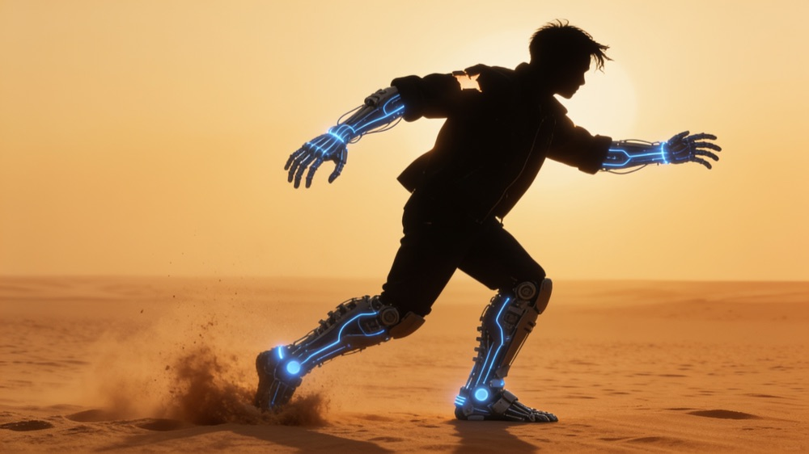
The mechanical limbs must match the reference EXACTLY — same design, same plating, same joints. Do not redesign them. EXTREME WIDE SHOT of a vast empty desert, camera closer than the previous two but still far — the figure is about one tenth of the frame height. Backlight from outside the frame. BACKLIT SILHOUETTE, solid near-black inside, no colour or texture within. HEAD: small dark mass, NO facial features, NO rim light on it. The HAIR reads in the outline — short, swept back, fuller at the crown, tapering to the nape, top edge broken and wispy. Not a smooth bald ball. ALL FOUR EXTREMITIES MECHANICAL — both hands and both feet, no exceptions. Forearms and lower legs mechanical too. THE LIGHT: cold blue running through the machinery like blood through veins — thin luminous lines along cables and channels down each limb, branching like vessels, gathering brighter at wrist, ankle and knuckles, faint between. Not lamps, not panels, not dots. SHORT jacket, nothing trailing, outline close to the body. Sleeve past the ELBOW, trouser past the KNEE — both joints covered by cloth. Rim light only in broken patches on shoulder and forward thigh, narrow, soft, never brighter than the sky, never on the head. No halo, no bloom, no glowing outline, no rays. POSE: in PROFILE, stumbled mid-stride — one leg plunged deep into the soft sand up to the thigh, body pitching forward, arms thrown out, dust exploding around the buried leg. His run is stopped dead. NO lava anywhere, NO ground glow, NO fire, NO molten light — only empty desert in every direction. Warm ochre monochrome, bright and hazy. No volcano, no mountain, no sun, no moon, no bright disc, no visible light source in frame. Photoreal, anamorphic, film grain. No text, no watermark.
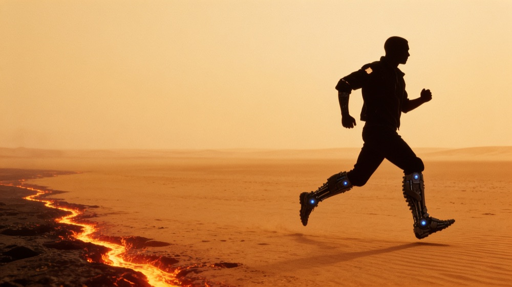
The mechanical forearms and lower legs must match the reference EXACTLY — same design, same plating, same segment shapes, same joints. Do not redesign them. EXTREME WIDE SHOT of a vast empty desert at exactly the same extreme camera distance as before — the figure is only about one twelfth of the frame height. Backlight from outside the frame. BACKLIT SILHOUETTE, solid near-black, no colour or texture inside. The HEAD is a small solid dark mass with NO features and NO rim light on it — no face at all. Rim light only in a few broken patches on the shoulder and forward thigh, narrow, soft, never brighter than the sky, never on the head. No halo, no bloom, no glowing outline, no rays. SHORT jacket, nothing trailing, outline close to the body. Sleeve past the ELBOW, trouser past the KNEE, both joints covered by cloth. Mechanical limbs only below those hems, small cold blue lights within the machinery. POSE: in PROFILE, now far over on the RIGHT side of frame, still running LEFT to RIGHT. The low creeping line of glowing lava is left far behind at the LEFT edge, a wide empty stretch of sand between them. He is clearly outrunning it. Warm ochre monochrome, bright and hazy. No volcano, no mountain, no sun, no moon, no bright disc, no visible light source in frame. Photoreal, anamorphic, film grain. No text, no watermark.
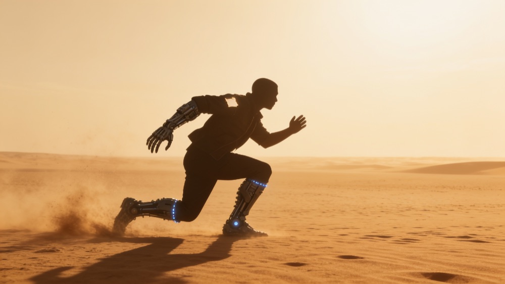
The mechanical forearms and lower legs must match the reference EXACTLY — same design, same plating, same segment shapes, same joints. Do not redesign them. EXTREME WIDE SHOT of a vast empty desert of fine sand. The camera is VERY far away: the figure stands only about one tenth of the frame height, tiny against the emptiness. Backlight from outside the frame. The figure is a BACKLIT SILHOUETTE — solid near-black, no colour or texture inside the shape. The HEAD is a small solid dark mass with NO features whatsoever and NO rim light on it at all — at this distance no face can be resolved and none should be drawn. Rim light appears only in a few broken patches on the shoulder and the forward thigh, narrow and soft, never brighter than the sky, never on the head. NO halo, NO bloom, NO glowing outline, NO rays off the body. SHORT jacket, nothing trailing or billowing, outline close to the body. The sleeve hangs just past the ELBOW and the trouser just past the KNEE so both joints stay covered by cloth. The mechanical limbs show only below those hems, with small points of cold blue light from within the machinery. POSE: in PROFILE, crouched low on one knee, pushing up to run, facing RIGHT. Dust bursts around him. Warm ochre monochrome, bright and hazy. No volcano, no mountain, no sun, no moon, no bright disc, no visible light source in frame. Photoreal, anamorphic, film grain. No text, no watermark.
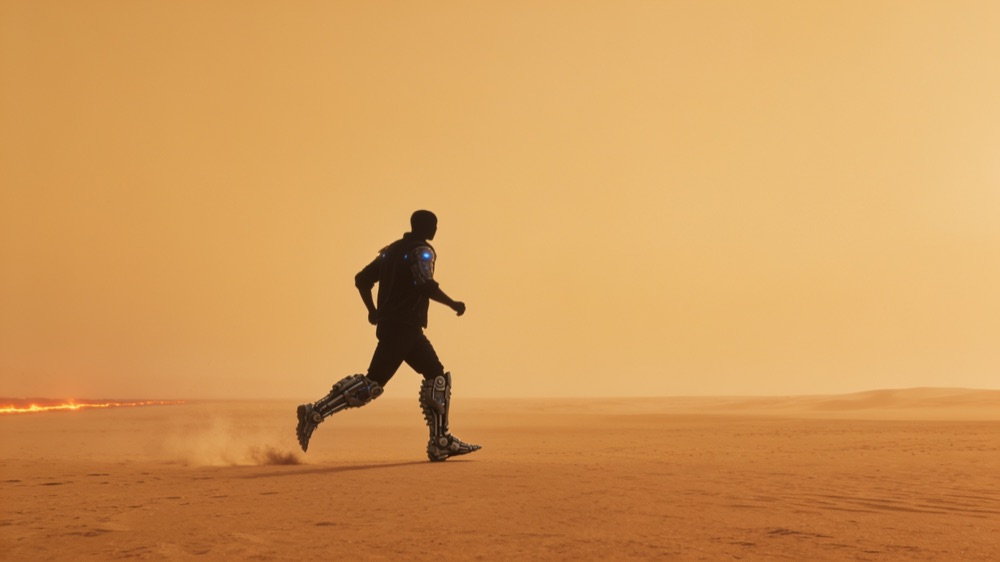
The mechanical forearms and lower legs must match the reference EXACTLY — same design, same plating, same segment shapes, same joints. Do not redesign them. EXTREME WIDE SHOT of a vast empty desert, camera EXTREMELY far away — the figure is only about one twelfth of the frame height, a tiny mark on the sand. Backlight from outside the frame. BACKLIT SILHOUETTE, solid near-black, no colour or texture inside. The HEAD is a small solid dark mass with NO features and NO rim light on it at all — no face can be resolved at this distance and none should be drawn. Rim light only in a few broken patches on the shoulder and forward thigh, narrow, soft, never brighter than the sky, never on the head. No halo, no bloom, no glowing outline, no rays. SHORT jacket, nothing trailing, outline close to the body. Sleeve past the ELBOW, trouser past the KNEE, both joints covered by cloth. Mechanical limbs only below those hems, small cold blue lights within the machinery. POSE: in PROFILE, left of centre, running hard LEFT to RIGHT, dust trailing from his heels. At the FAR LEFT EDGE a low creeping line of glowing molten lava has just entered, following him. Only the left margin; the desert ahead is clear. Warm ochre monochrome, bright and hazy. No volcano, no mountain, no sun, no moon, no bright disc, no visible light source in frame. Photoreal, anamorphic, film grain. No text, no watermark.
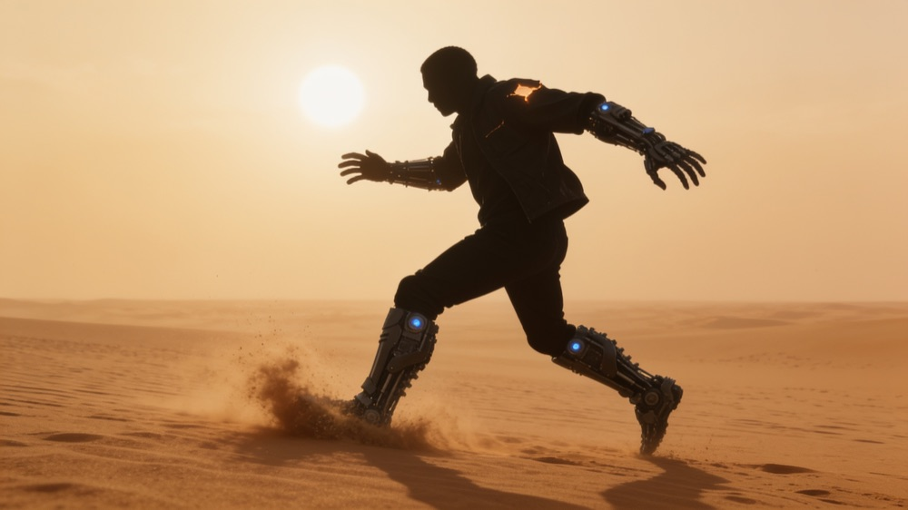
The mechanical forearms and lower legs must match the reference EXACTLY — same design, same plating, same segment shapes, same joints. Do not redesign them. EXTREME WIDE SHOT of a vast empty desert, camera closer than the previous two but still very far — the figure is about one tenth of the frame height. Backlight from outside the frame. BACKLIT SILHOUETTE, solid near-black, no colour or texture inside. The HEAD is a small solid dark mass with NO features and NO rim light on it — no face at all. Rim light only in a few broken patches on the shoulder and forward thigh, narrow, soft, never brighter than the sky, never on the head. No halo, no bloom, no glowing outline, no rays. SHORT jacket, nothing trailing, outline close to the body. Sleeve past the ELBOW, trouser past the KNEE, both joints covered by cloth. Mechanical limbs only below those hems, small cold blue lights within the machinery. POSE: in PROFILE, stumbled mid-stride — one leg plunged deep into the soft sand up to the thigh, body pitching forward, arms thrown out, dust exploding around the buried leg. His run is stopped dead. NO lava anywhere, NO ground glow, NO fire, NO molten light — only empty desert in every direction. Warm ochre monochrome, bright and hazy. No volcano, no mountain, no sun, no moon, no bright disc, no visible light source in frame. Photoreal, anamorphic, film grain. No text, no watermark.
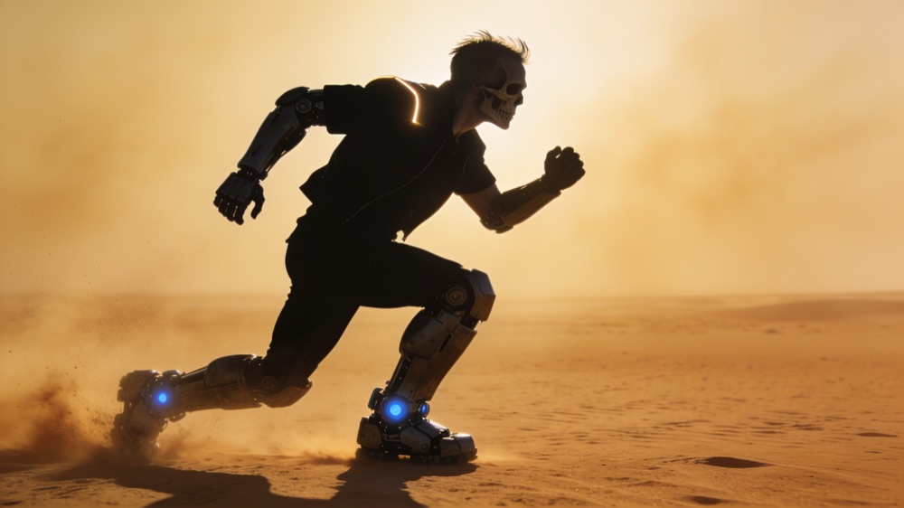
EXTREME WIDE SHOT. A vast empty desert of fine sand. Backlight from outside the frame. The figure is a BACKLIT SILHOUETTE — solid near-black inside, no face, no skin, no fabric detail, no colour within the shape. RIM LIGHT, RESTRAINED: the edge light is NOT a continuous glowing line and the body emits nothing. It is simply the bright hazy background showing past the edge at a grazing angle. So it appears only in BROKEN PATCHES — a short catch on top of one shoulder, a sliver along the forward thigh, a thin line on the crown of the head — and disappears entirely elsewhere. It is narrow, soft, and never brighter than the sky behind. NO halo, NO bloom, NO glowing outline, NO light rays coming off the body. HEAD SHAPE: gaunt and skull-like in profile — narrow cranium, sunken cheek, prominent brow and jaw, thin neck. Short hair swept back lying close to the skull, its top edge slightly ragged, thinning. COSTUME SILHOUETTE: a SHORT jacket, nothing trailing or billowing, outline close to the body. The sleeve hangs just past the ELBOW and the trouser just past the KNEE, so BOTH JOINTS STAY COVERED BY CLOTH — the elbow and the knee must never be visible. MECHANICAL LIMBS: only below those hems. Heavy segmented prosthetic forearms and lower legs — thick armoured plating, chunky articulated joints at wrist and ankle, substantial and machined, NOT thin or spindly or claw-like. Small points of COLD BLUE LIGHT glow from within the machinery — the only light the body actually emits. POSE: lean tall man in PROFILE, crouched low on one knee, pushing up to run, facing RIGHT. Dust bursts around him and catches the backlight. Warm ochre monochrome for the whole frame, bright and hazy. No volcano, no mountain, no sun, no moon, no bright disc, no visible light source in frame. Photoreal, anamorphic, film grain. No text, no watermark.
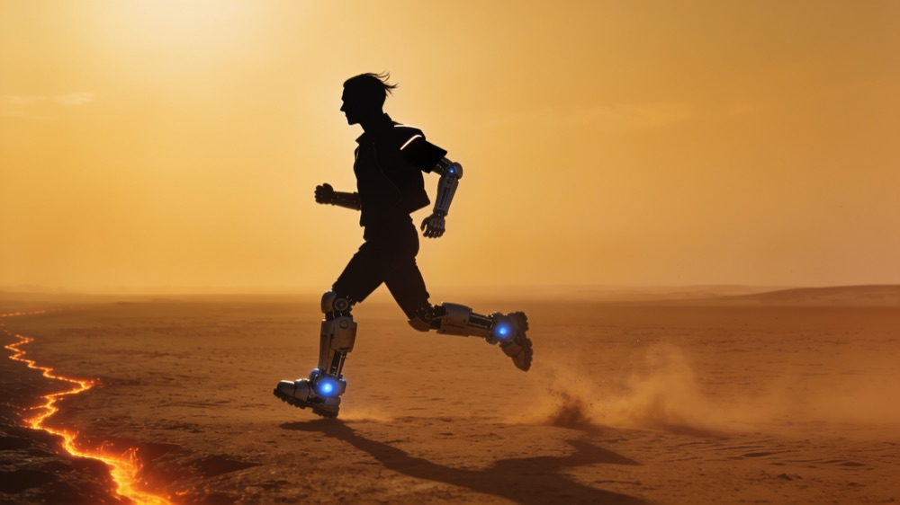
EXTREME WIDE SHOT, camera very far away. A vast empty desert. Backlight from outside the frame. Small BACKLIT SILHOUETTE — solid near-black inside, no face, no skin, no fabric detail, no colour within the shape. RIM LIGHT, RESTRAINED: not a continuous glowing line, and the body emits nothing. It is only the bright hazy background showing past the edge, so it appears in BROKEN PATCHES — a catch on one shoulder, a sliver on the forward thigh, a thin line on the crown — and vanishes elsewhere. Narrow, soft, never brighter than the sky. NO halo, NO bloom, NO glowing outline, NO rays off the body. HEAD SHAPE: gaunt and skull-like in profile — narrow cranium, sunken cheek, prominent brow and jaw, thin neck. Short hair swept back close to the skull, top edge slightly ragged. COSTUME SILHOUETTE: SHORT jacket, nothing trailing or billowing, outline close to the body. Sleeve hangs just past the ELBOW, trouser just past the KNEE — both joints stay covered by cloth and are never visible. MECHANICAL LIMBS below those hems only: heavy segmented prosthetic forearms and lower legs, thick armoured plating, chunky articulated wrist and ankle, substantial and machined, NOT thin, NOT spindly, NOT claw-like. Small points of cold blue light glow from within the machinery. POSE: lean tall man in PROFILE, left of centre, running hard LEFT to RIGHT, dust trailing from his heels. At the FAR LEFT EDGE a low creeping line of glowing molten lava has just entered, following him. Only the left margin; the desert ahead is clear. Warm ochre monochrome, bright and hazy. No volcano, no mountain, no sun, no moon, no bright disc, no visible light source in frame. Photoreal, anamorphic, film grain. No text, no watermark.
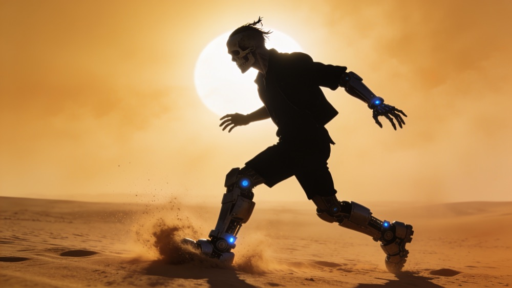
EXTREME WIDE SHOT, camera closer than the previous two. A vast empty desert. Backlight from outside the frame. BACKLIT SILHOUETTE — solid near-black inside, no face, no skin, no fabric detail, no colour within the shape. RIM LIGHT, RESTRAINED: not a continuous glowing line, the body emits nothing. Only the bright hazy background showing past the edge at a grazing angle, appearing in BROKEN PATCHES — one shoulder, the forward thigh, the crown — absent elsewhere. Narrow, soft, never brighter than the sky. NO halo, NO bloom, NO glowing outline, NO rays off the body. HEAD SHAPE: gaunt and skull-like in profile — narrow cranium, sunken cheek, prominent brow and jaw, thin neck. Short hair swept back close to the skull, ragged top edge. COSTUME SILHOUETTE: SHORT jacket, nothing trailing, outline close to the body. Sleeve hangs just past the ELBOW, trouser just past the KNEE — both joints stay covered by cloth and are never visible. MECHANICAL LIMBS below those hems only: heavy segmented prosthetic forearms and lower legs, thick armoured plating, chunky articulated wrist and ankle, substantial and machined, NOT thin or spindly or claw-like. Small points of cold blue light from within the machinery. POSE: lean tall man in PROFILE who has stumbled mid-stride — one leg plunged deep into the soft sand up to the thigh, body pitching forward, arms thrown out, dust exploding around the buried leg. His run is stopped dead. NO lava anywhere, NO ground glow, NO fire, NO molten light — only empty desert in every direction. Warm ochre monochrome, bright and hazy. No volcano, no mountain, no sun, no moon, no bright disc, no visible light source in frame. Photoreal, anamorphic, film grain. No text, no watermark.
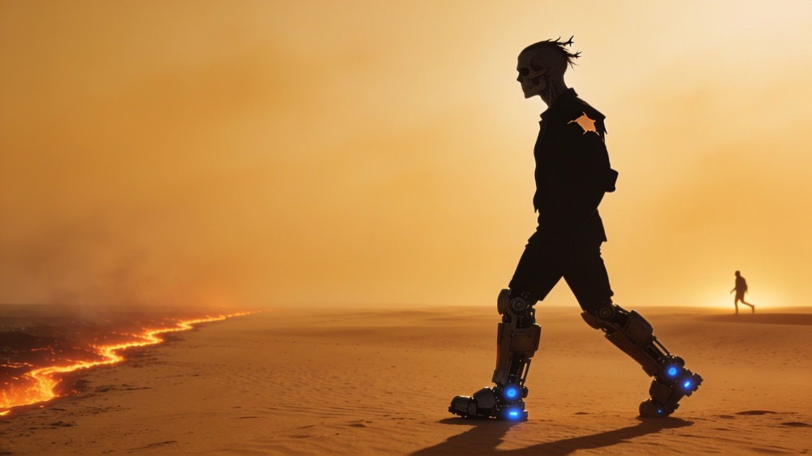
EXTREME WIDE SHOT at the same great camera distance. A vast empty desert. Backlight from outside the frame. Small BACKLIT SILHOUETTE — solid near-black inside, no face, no skin, no fabric detail, no colour within the shape. RIM LIGHT, RESTRAINED: not a continuous glowing line, the body emits nothing. Only the bright hazy background showing past the edge, appearing in BROKEN PATCHES — one shoulder, the forward thigh, the crown — gone elsewhere. Narrow, soft, never brighter than the sky. NO halo, NO bloom, NO glowing outline, NO rays. HEAD SHAPE: gaunt and skull-like in profile — narrow cranium, sunken cheek, prominent brow and jaw, thin neck. Short hair swept back close to the skull, ragged top edge. COSTUME SILHOUETTE: SHORT jacket, nothing trailing, outline close to the body. Sleeve hangs just past the ELBOW, trouser just past the KNEE — both joints covered by cloth, never visible. MECHANICAL LIMBS below those hems only: heavy segmented prosthetic forearms and lower legs, thick armoured plating, chunky articulated wrist and ankle, substantial and machined, NOT thin or spindly or claw-like. Small points of cold blue light from within the machinery. POSE: lean tall man in PROFILE, far over on the RIGHT side of frame, still running LEFT to RIGHT. The low creeping line of glowing lava is left far behind at the LEFT edge, a wide empty stretch of sand between them. He is clearly outrunning it. Warm ochre monochrome, bright and hazy. No volcano, no mountain, no sun, no moon, no bright disc, no visible light source in frame. Photoreal, anamorphic, film grain. No text, no watermark.
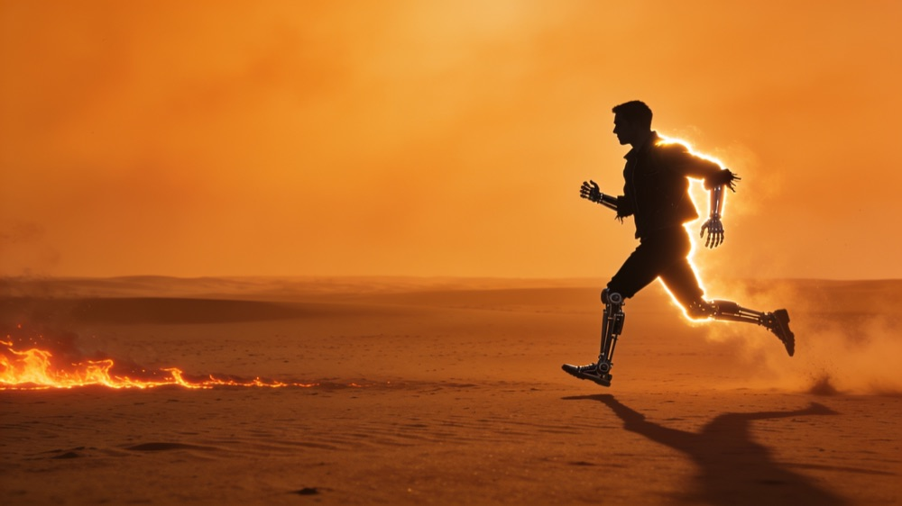
EXTREME WIDE SHOT at the same great camera distance. A vast empty desert. Strong BACKLIGHT from behind, source outside the frame. The figure is a small BACKLIT SILHOUETTE — solid near-black inside, NO face, NO eyes, NO skin, NO fabric detail, NO colour within the shape. A HOT RIM OF LIGHT traces its outline in bright warm gold-white along the head, shoulders and leading edges of the limbs; the dust behind him glows. SILHOUETTE SHAPE: a lean tall man in PROFILE, now far over on the RIGHT side of frame, still running LEFT to RIGHT. SHORT jacket — nothing long trails or billows, no coat tails, outline close to the body, slightly ragged at the sleeve and trouser ends. Forearms and lower legs MECHANICAL: thin, hard, angular, articulated; hands and feet clearly mechanical, narrow and jointed. The low creeping line of glowing lava is left far behind at the LEFT edge, a wide empty stretch of open sand between them. He is clearly outrunning it. Warm ochre monochrome — one burnt-orange hue, bright and hazy. No volcano, no mountain, no sun, no moon, no bright disc, no visible light source in frame. Photoreal, anamorphic, film grain. No text, no watermark.
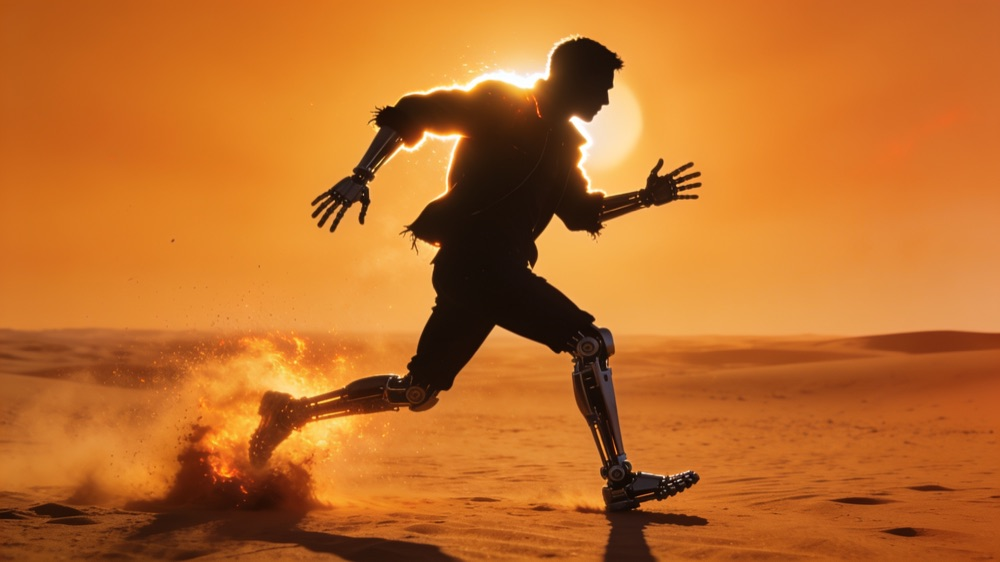
EXTREME WIDE SHOT, camera closer than the previous two. A vast empty desert. Strong BACKLIGHT from behind, source outside the frame. The figure is a BACKLIT SILHOUETTE — solid near-black inside, NO face, NO eyes, NO skin, NO fabric detail, NO colour within the shape. A HOT RIM OF LIGHT traces its outline in bright warm gold-white along the head, shoulders and leading edges of the limbs; the exploding dust around him glows fiercely where it catches the light. SILHOUETTE SHAPE: a lean tall man in PROFILE who has stumbled mid-stride — one leg plunged deep into the soft sand up to the thigh, body pitching forward, arms thrown out. His run is stopped dead. SHORT jacket — nothing long trails or billows, no coat tails, outline close to the body, slightly ragged at the sleeve and trouser ends. Forearms and lower legs MECHANICAL: thin, hard, angular, articulated; hands and feet clearly mechanical, narrow and jointed. NO lava anywhere, NO glow on the ground, NO fire, NO molten light — only empty desert in every direction. Warm ochre monochrome — one burnt-orange hue, bright and hazy. No volcano, no mountain, no sun, no moon, no bright disc, no visible light source in frame. Photoreal, anamorphic, film grain. No text, no watermark.
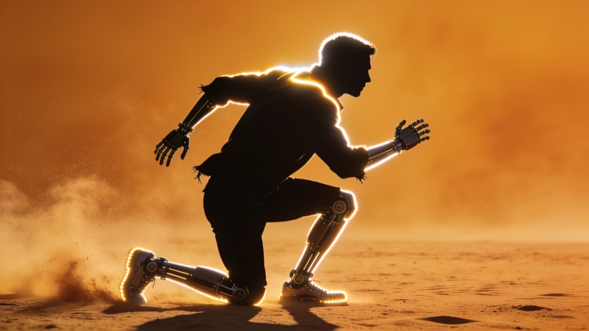
EXTREME WIDE SHOT. A vast empty desert of fine sand, seen from far away. Strong BACKLIGHT from behind the figure, the source itself outside the frame. The figure is a BACKLIT SILHOUETTE — solid near-black inside, with NO face, NO eyes, NO skin, NO fabric texture, NO colour and NO detail whatsoever within the shape. But a HOT RIM OF LIGHT traces its outline: a bright warm gold-white edge along the top of the head, across the shoulders, and down the leading edge of the arms and legs, brightest where the form turns away from camera. The airborne dust around him catches that light and glows, separating him from the haze behind. SILHOUETTE SHAPE: a lean, tall man in PROFILE from the side, crouched low on one knee and pushing up to run, facing RIGHT. Dust bursts around him. SHORT jacket — nothing long trails or billows behind him, no coat tails, outline close to the body, slightly ragged at the sleeve and trouser ends. Forearms and lower legs MECHANICAL — thin, hard, angular, more articulated than human; hands and feet clearly mechanical, narrow and jointed, the rim light catching their hard edges. Warm ochre monochrome — one burnt-orange hue for the whole frame, bright and hazy behind him. No volcano, no mountain, no sun, no moon, no bright disc, no visible light source in frame. Photoreal, anamorphic, film grain. No text, no watermark.
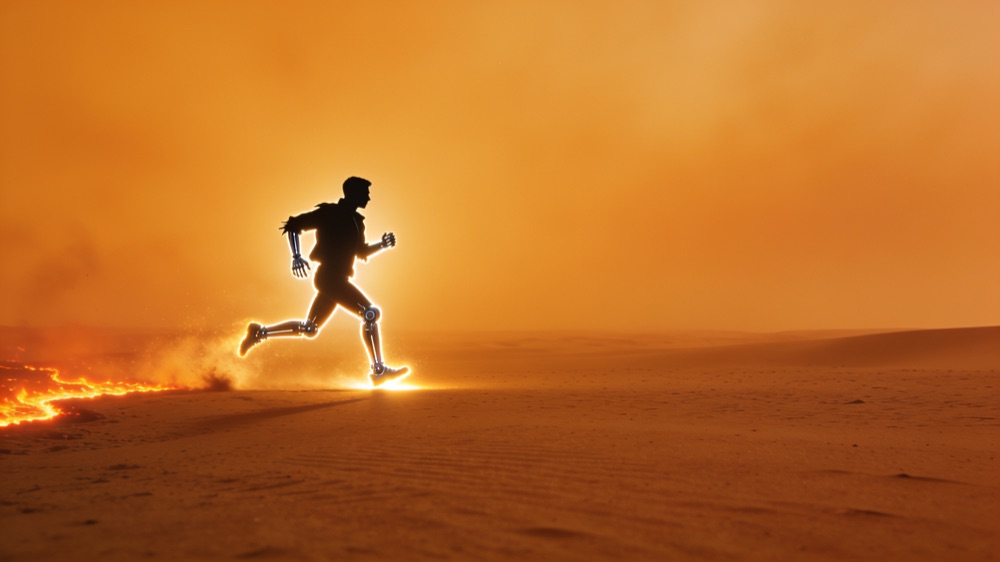
EXTREME WIDE SHOT, camera very far away. A vast empty desert of fine sand. Strong BACKLIGHT from behind, source outside the frame. The figure is a small BACKLIT SILHOUETTE — solid near-black inside, NO face, NO eyes, NO skin, NO fabric detail, NO colour within the shape. A HOT RIM OF LIGHT traces its outline in bright warm gold-white — head, shoulders, leading edges of the limbs — and the dust trailing from his heels glows where it catches that light. SILHOUETTE SHAPE: a lean tall man in PROFILE, left of centre, running hard from LEFT to RIGHT. SHORT jacket — nothing long trails or billows, no coat tails, outline close to the body, slightly ragged at the sleeve and trouser ends. Forearms and lower legs MECHANICAL: thin, hard, angular, articulated; hands and feet clearly mechanical, narrow and jointed, their hard edges catching the rim light. At the FAR LEFT EDGE of frame a low creeping line of glowing molten lava has just entered, following him. Only the left margin; the desert ahead of him is clear. Warm ochre monochrome — one burnt-orange hue, bright and hazy. No volcano, no mountain, no sun, no moon, no bright disc, no visible light source in frame. Photoreal, anamorphic, film grain. No text, no watermark.
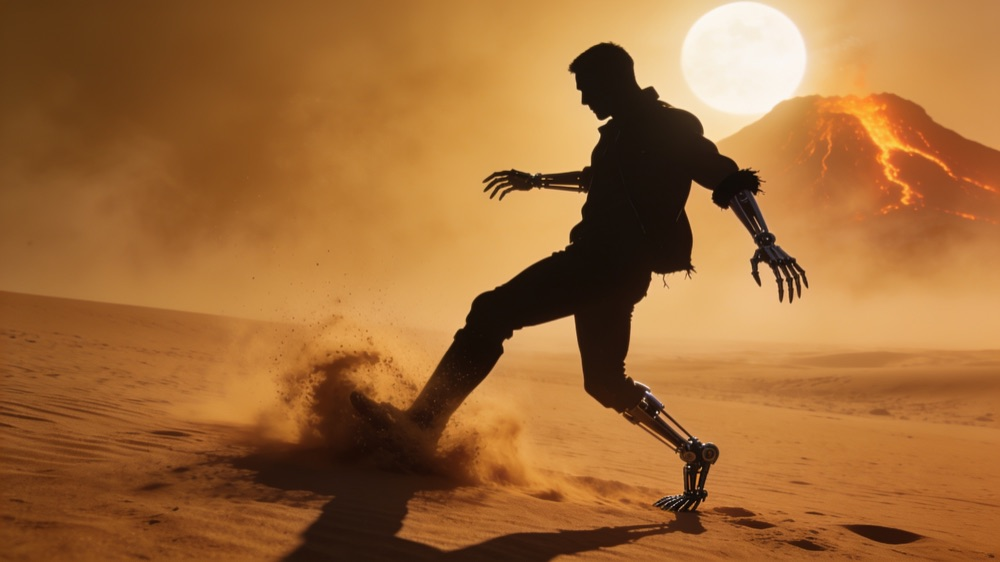
EXTREME WIDE SHOT, camera closer than the previous two. A vast empty desert of fine sand. The figure is a PURE BACKLIT SILHOUETTE — a solid near-black shape against bright hazy air. NO face, NO eyes, NO skin, NO fabric detail, NO colour inside the shape. Outline only. SILHOUETTE SHAPE: a lean tall man in PROFILE who has stumbled mid-stride — one leg plunged deep into the soft sand up to the thigh, body pitching forward, arms thrown out, dust exploding around the buried leg. His run is stopped dead. SHORT jacket — nothing long trails or billows, no coat tails, outline close to the body, slightly ragged at the sleeve and trouser ends. Forearms and lower legs MECHANICAL: thin, hard, angular, articulated. Hands and feet clearly mechanical — narrow, jointed, claw-like. NO lava anywhere, NO glow, NO fire, NO molten light — only empty desert in every direction. Warm ochre monochrome — one burnt-orange hue, bright and hazy. Thick dust in the air. No volcano, no mountain, no sun, no moon, no bright disc, no visible light source in frame. Photoreal, anamorphic, film grain. No text, no watermark.
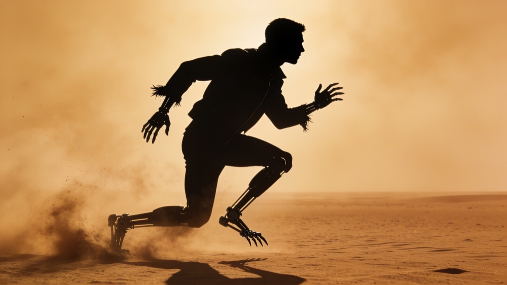
EXTREME WIDE SHOT. A vast empty desert of fine sand, seen from far away. The figure is a PURE BACKLIT SILHOUETTE — solid near-black shape against bright hazy air. NO face, NO eyes, NO skin, NO fabric texture, NO colour and NO detail of any kind inside the shape. Only the outline reads. SILHOUETTE SHAPE: a lean, tall man in PROFILE from the side, crouched low on one knee and pushing up to run, facing RIGHT. Dust bursts around him. He wears a SHORT jacket — nothing long trails or billows behind him, no coat tails, the outline stays close to the body. The sleeve and trouser ends make a slightly ragged irregular outline. His forearms and lower legs are MECHANICAL — they read as thin, hard, angular shapes, narrower and more articulated than human limbs, and his HANDS and FEET are clearly mechanical too: narrow, jointed, slightly claw-like. Warm ochre monochrome — one burnt-orange hue for the whole frame, bright and hazy behind him. Thick dust in the air. No volcano, no mountain, no sun, no moon, no bright disc, no visible light source in frame. Photoreal, anamorphic, film grain. No text, no watermark.
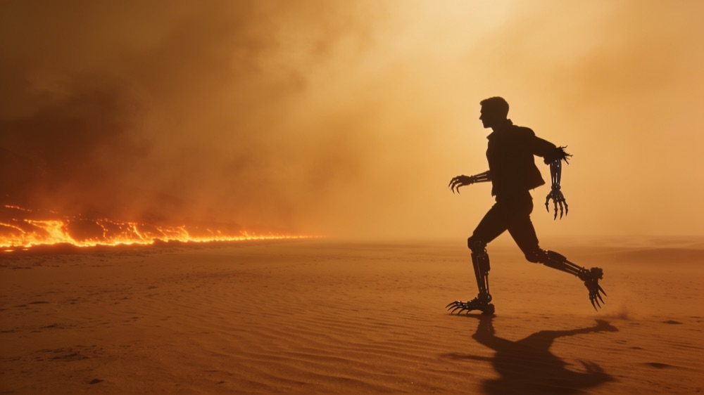
EXTREME WIDE SHOT at the same great camera distance. A vast empty desert of fine sand. The figure is a PURE BACKLIT SILHOUETTE — a small solid near-black shape against bright hazy air. NO face, NO eyes, NO skin, NO fabric detail, NO colour inside the shape. Outline only. SILHOUETTE SHAPE: a lean tall man in PROFILE, now far over on the RIGHT side of frame, still running LEFT to RIGHT. SHORT jacket — nothing long trails or billows, no coat tails, outline close to the body, slightly ragged at the sleeve and trouser ends. Forearms and lower legs MECHANICAL: thin, hard, angular, articulated. Hands and feet clearly mechanical — narrow, jointed, claw-like. The low creeping line of glowing lava is left far behind at the LEFT edge, a wide empty stretch of open sand between them. He is clearly outrunning it. Warm ochre monochrome — one burnt-orange hue, bright and hazy. Thick dust in the air. No volcano, no mountain, no sun, no moon, no bright disc, no visible light source in frame. Photoreal, anamorphic, film grain. No text, no watermark.
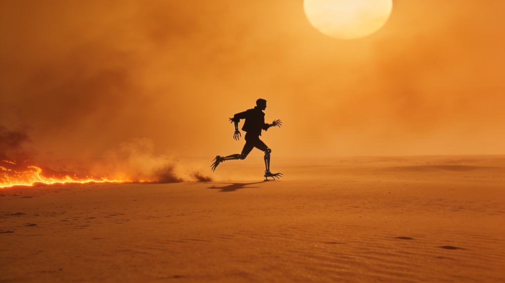
EXTREME WIDE SHOT, camera very far away. A vast empty desert of fine sand. The figure is a PURE BACKLIT SILHOUETTE — a small solid near-black shape against bright hazy air. NO face, NO eyes, NO skin, NO fabric detail, NO colour inside the shape. Outline only. SILHOUETTE SHAPE: a lean tall man in PROFILE, left of centre, running hard from LEFT to RIGHT with dust trailing from his heels. SHORT jacket — nothing long trails or billows behind him, no coat tails, outline close to the body, slightly ragged at the sleeve and trouser ends. Forearms and lower legs MECHANICAL: thin, hard, angular, more articulated than human. Hands and feet clearly mechanical — narrow, jointed, claw-like. At the FAR LEFT EDGE of frame a low creeping line of glowing molten lava has just entered, following him. Only the left margin; the desert ahead of him is clear. Warm ochre monochrome — one burnt-orange hue, bright and hazy. Thick dust in the air. No volcano, no mountain, no sun, no moon, no bright disc, no visible light source in frame. Photoreal, anamorphic, film grain. No text, no watermark.
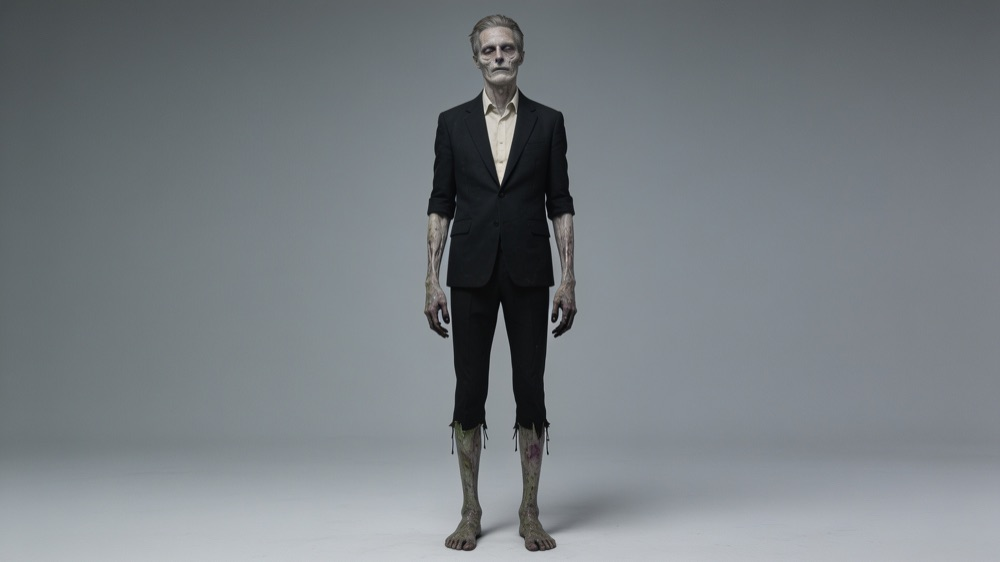
CHARACTER SHEET. One full-body standing figure, front view, centred, feet flat on the ground, arms hanging at his sides. Plain neutral grey studio backdrop, flat even lighting, no environment, no props, no shadows on the wall. FACE: the man from the reference. Same face, same cracked pale grey-white skin, same wet mottled grey-green decay. Do not redesign him. HAIR: short greyish-brown, swept back off the forehead, thinning at the temples, dirtied. Not white, not long, not wild, not wispy. EYES: open and EMPTY. The eyeball is still there as a visible shape, dull and colourless, with no iris and no pupil. Do NOT erase the eyes into black shadow — the lids, the lashes and the curve of the eyeball must stay clearly readable. BUILD: tall and elongated. Long neck, long torso, long arms, long legs. Lean, lanky, stretched, gaunt and wasted. NOT stocky, NOT short-necked, NOT muscular, NOT athletic, NOT robust. CLOTHES: a black single-breasted SHORT suit jacket worn directly over a cream collared shirt. NO waistcoat, NO vest, NO tie — nothing between jacket and shirt. LENGTH: the jacket sleeve ends just BELOW the elbow, only slightly past the joint. The trouser leg ends just BELOW the knee, only slightly past the joint. The elbows and knees stay covered, but only barely. COLOUR: the black has faded to a chalky grey. Unevenly bleached — palest across the shoulders, the tops of the sleeves and along every raised fold, staying dark only deep inside the creases. Dead matte, powdery with dust, zero sheen. The weave rubbed through so pale threads show at the shoulders and edges. The cream shirt yellowed and greyed, no white left. HEMS: simply ragged torn cloth — an uneven wandering line with small nicks and shallow notches. NOT rolled, NOT cuffed, NOT folded, no seam. Only a FEW short loose threads, five or six across the whole hem, none longer than a fingertip, most of the edge having none. ABSOLUTELY NO fringe, NO curtain of strands, NO tassels, nothing hanging in bunches. It must not read as seaweed or a mop. EXPOSED LIMBS: below the hems, bare HUMAN forearms, hands, shins and BARE FEET in WET ROT — mottled grey-green blotched with bruise-purple, damp and slick, thin and shrunken, flesh sagging between the tendons, skin split in places, fingertips and nails blackened. NOT dried, NOT mummified, NOT papery. No metal, no machinery, no prosthetics anywhere. Photoreal, film grain. No text, no watermark, no labels, no lettering.
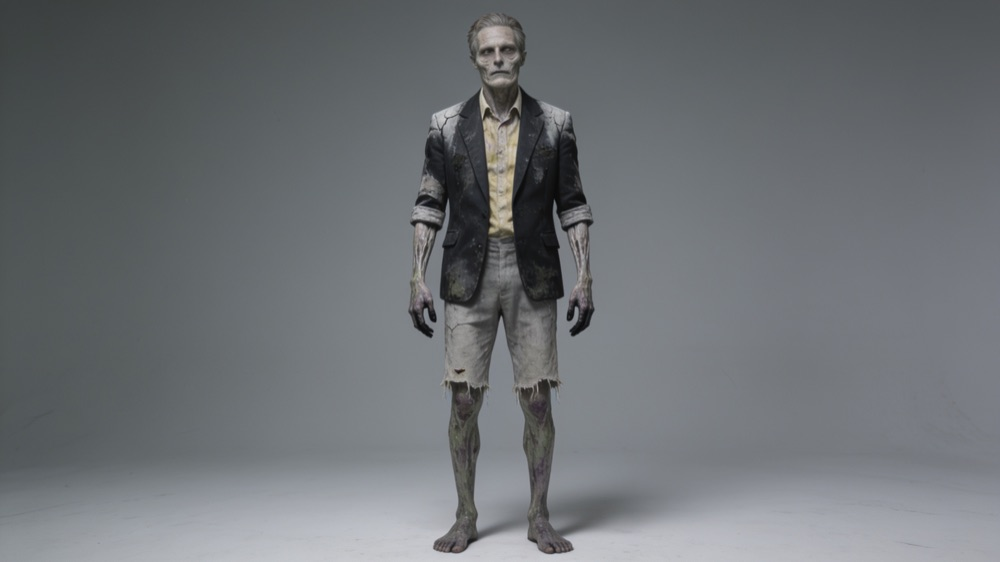
CHARACTER SHEET on a plain grey studio backdrop, flat even lighting, no environment. One full-body standing figure, front view, centred, arms at his sides, feet flat. Same man as the reference — same face, same cracked pale grey skin, same wet grey-green rot. Do not redesign the face. Short greyish-brown hair swept back, thinning at the temples, dirty. Eyes open and empty: the eyeball visible as a shape but blank, no iris, no pupil, no colour — and NOT swallowed in black shadow; the lids and the round of the eye stay legible. Tall and stretched out — long neck, long torso, long arms, long legs, lanky and emaciated. Never stocky, never short-limbed, never muscular. Black short single-breasted suit jacket directly over a cream collared shirt. No waistcoat, no tie. The sleeve ends a little past the elbow, the trouser leg a little past the knee — the joints just covered. The black has bleached to a chalky grey, palest on the shoulders and the tops of the sleeves and along every ridge, dark only in the deepest creases. Dead matte, dusty, no sheen, weave worn open so pale threads show. Shirt yellowed and dingy, nothing white. The hems are plain ragged torn cloth — uneven wandering line, small nicks, shallow notches. Not rolled, not cuffed, no seam. At most a handful of very short stray threads; most of the edge has none. No fringe, no hanging curtain of strands, no tassels, nothing bunched. Below the hems his bare human forearms, hands, shins and bare feet are wet with decay — grey-green and purple mottling, damp, shrunken, sagging, split skin, blackened nails. Not dried, not mummified. Nothing mechanical. Photoreal, film grain. No text, no watermark, no labels.
The man in the reference — same face, same body, same proportions, same clothes, same torn sleeve and trouser ends. Do not redesign him. His forearms and lower legs are bare mechanical limbs. Nothing long trails behind him. EXTREME WIDE SHOT of a vast empty desert, camera very far away — he is a small silhouette left of centre, seen in PROFILE, running hard from LEFT to RIGHT with dust trailing from his heels. At the FAR LEFT EDGE of frame a low creeping line of glowing molten lava has just entered, following him. Only the left margin; the desert ahead of him is clear. Warm ochre monochrome — one burnt-orange hue for the whole frame. Thick dust in the air. No volcano, no mountain, no sun, no moon, no bright disc, no visible light source in frame. Photoreal, anamorphic, film grain. No text, no watermark.
The man in the reference — same face, same body, same proportions, same clothes, same torn sleeve and trouser ends. Do not redesign him. His forearms and lower legs are bare mechanical limbs. Nothing long trails behind him. EXTREME WIDE SHOT of a vast empty desert, camera closer than the last two — he is small but readable, seen in PROFILE. He has stumbled mid-stride: one leg plunged deep into the soft sand up to the thigh, body pitching forward, arms thrown out, dust exploding around the buried leg. His run is stopped dead. No lava anywhere, no glow, no fire, no molten light — only empty desert in every direction. Warm ochre monochrome — one burnt-orange hue for the whole frame. Thick dust in the air. No volcano, no mountain, no sun, no moon, no bright disc, no visible light source in frame. Photoreal, anamorphic, film grain. No text, no watermark.
The man in the reference — same face, same body, same proportions, same clothes, same torn sleeve and trouser ends. Do not redesign him. His forearms and lower legs are bare mechanical limbs. Nothing long trails behind him. EXTREME WIDE SHOT of a vast empty desert, camera at the same great distance — he is a small silhouette now far over on the RIGHT side of frame, seen in PROFILE, still running LEFT to RIGHT. The low creeping line of glowing lava is left far behind at the LEFT edge, with a wide empty stretch of open sand between them. He is clearly outrunning it. Warm ochre monochrome — one burnt-orange hue for the whole frame. Thick dust in the air. No volcano, no mountain, no sun, no moon, no bright disc, no visible light source in frame. Photoreal, anamorphic, film grain. No text, no watermark.
The man in the reference — same face, same body, same proportions, same clothes, same torn sleeve and trouser ends. Do not redesign him. His forearms and lower legs are bare mechanical limbs. Nothing long trails behind him. EXTREME WIDE SHOT of a vast empty desert of fine sand. He is small in the frame, seen in PROFILE from the side, crouched low on one knee and pushing up to run, facing RIGHT. Dust bursts around him. Warm ochre monochrome — one burnt-orange hue for the whole frame. Thick dust in the air. No volcano, no mountain, no sun, no moon, no bright disc, no visible light source in frame. Photoreal, anamorphic, film grain. No text, no watermark.
Keep this image exactly as it is — same man, same face, same hair, same proportions, same pose, same framing, same grey background, same eyes, same rotted limbs, same bleached chalky grey suit, same sleeve length, same trouser length. Do not change any length. Change ONLY the very edge of the sleeve ends and the trouser ends, and change it SUBTLY. The edge is mostly just RAGGED TORN CLOTH — an uneven, wandering line with small nicks and shallow notches, nothing more. It should not be rolled, cuffed or folded, but it should also not sprout anything. Only a FEW loose threads hang from it — five or six in total across the whole hem, no more — and none of them longer than a fingertip. They are sparse and scattered, most of the edge having none at all. ABSOLUTELY NO curtain of strands. NO fringe. NO tassels. NO thick dangling ropes. Nothing hanging in bunches. It must not read as seaweed, tentacles, a mop or a grass skirt. Restrained and understated. Any splits running up into the cloth are shallow and few. Photoreal, film grain. No text, no watermark, no labels.
Keep this image exactly as it is — same man, same face, same hair, same build, same pose, same framing, same backdrop, same eyes, same limbs, same faded chalky grey suit, same sleeve and trouser length. Change no length. One small change at the hems only. The sleeve end and the trouser end are simply ragged torn cloth — an uneven wandering line, a few small nicks, some shallow notches. Worn away, not cut, not rolled, not cuffed. At most a handful of stray threads, very short, poking out here and there. Most of the edge has none. No fringe. No curtain of hanging strands. No tassels. No long dangling threads. Nothing bunched. Do not make it look like seaweed or a mop. Understated and plain — the kind of hem you would barely notice until you looked closely. Photoreal, film grain. No text, no watermark, no labels.
Keep this image exactly as it is — same man, same face, same hair, same build, same pose, same framing, same backdrop, same eyes, same limbs, same faded chalky grey suit, and the SAME sleeve length and SAME trouser length. Do not change any length. Only the shape of the break-up changes. Not lace, not gauze, not thinning to transparency. The wool stays thick and matted and felted all the way down. The ends break into a heavy fringe of long, coarse, matted strands hanging straight down like unpicked wet rope. Thick strands, wildly uneven lengths, some trailing far below the rest. Running up from that fringe are deep V-shaped splits of different depths tearing into the cloth, leaving uneven tongues and hanging points between them. A few splits climb much higher up the sleeve and the trouser than the others. Nothing even, nothing straight, nothing repeating. Photoreal, film grain. No text, no watermark, no labels.
Keep this image exactly as it is — same man, same face, same hair, same proportions, same pose, same framing, same grey background, same eyes, same rotted limbs, same bleached chalky grey colour, and above all the SAME SLEEVE LENGTH and SAME TROUSER LENGTH. Do not lengthen or shorten anything. Change ONLY the shape of how the cloth breaks up at those ends. It should NOT be a lacy, thin, see-through dissolve. The cloth stays THICK, MATTED and FELTED right up to where it gives out. Instead the end becomes a HEAVY FRINGE of long thick matted strands hanging straight down, like the ends of a wet frayed rope that has been picked apart. The strands are chunky, not fine. Their lengths vary wildly — some hang far down, some barely at all, with no even line anywhere. Above that fringe, DEEP IRREGULAR V-SHAPED SPLITS run upward into the fabric, each a different depth, some cutting far up the sleeve or the trouser, some shallow. Between the splits the cloth hangs in uneven tongues and points. No straight edge, no even fringe, no symmetry, no repeated rhythm. Photoreal, film grain. No text, no watermark, no labels.
Keep this image exactly as it is — same man, same face, same hair, same proportions, same pose, same framing, same backdrop, same eyes, same limbs, same bleached chalky grey suit, same lengths. Do not touch the colour or the fading. Change only the way the sleeve ends and trouser ends terminate. They currently look like one deliberate rip with neat trailing threads. Get rid of that. There should be no edge line at all. The fabric should disintegrate rather than end. Show a gradual zone of decay: the weave thins until it is see-through, then opens into scattered holes, then into a few surviving strands, then nothing. Put unconnected holes and bald worn patches higher up the sleeve and the trouser too, so nothing marks a boundary. Let a couple of single threads still stretch across empty gaps. Make the remaining outline wander at random — dipping far lower here, eaten right back there, never even, never rhythmic. The worst decay sits at the lowest hanging folds where moisture pooled; the cloth around those places is darker and water-stained. Not cut, not slashed, not styled distressing. Cloth that rotted underground for decades. Photoreal, film grain. No text, no watermark, no labels.
Keep this image exactly as it is — same man, same face, same hair, same proportions, same pose, same framing, same grey background, same eyes, same limbs, same faded chalky grey colour of the suit, same overall sleeve and trouser length. Keep the fading exactly as it is. ONE change: how the sleeves and trouser legs END. Right now they read as a deliberate tear — a single cut line with tidy hanging threads. That is wrong. There must be NO single tear line and NO defined edge at all. The cloth does not end; it DISSOLVES. Over the last stretch of fabric the weave thins away gradually — first going translucent and threadbare, then opening into a sparse lace of surviving threads with ragged holes between them, then simply nothing. Separate holes and worn-through patches also appear WELL ABOVE that zone, unconnected to it, so there is no clean boundary anywhere. In a few places single lone threads still bridge across an open gap. The remaining edge wanders unpredictably — hanging much lower in one spot, eaten far back in another, with no rhythm or symmetry. The decay is worst at the lowest hanging points and deep inside the folds, where damp sat longest, and the cloth immediately around the dissolving zone is darker and water-stained. It must NOT look cut, NOT look torn in one action, NOT look like costume-department distressing. It must look like cloth that rotted in the ground for decades. Photoreal, film grain. No text, no watermark, no labels.
Keep this image exactly as it is — same man, same face, same hair, same tall lanky proportions, same pose, same framing, same grey backdrop, same empty eyes, same rotted limbs, same sleeve length, same trouser length. Change nothing about length or fit. Only two things change. The ends of the sleeves and the ends of the trouser legs are NOT rolled, NOT cuffed, NOT folded up. No cuff, no hem, no seam, no neat line. Each end is a ragged tear — uneven, one side hanging lower than the other, threads trailing loose, hairline splits climbing up into the fabric from the tear. It rotted off; nobody turned it up. And the clothes are ancient and bleached. The black suit has faded to a chalky grey, palest on the shoulders and the tops of the sleeves and along every ridge and fold, dark only in the deepest creases. Dead matte, powdery with dust, zero sheen. The weave is worn open so pale threads show through at the shoulders and edges. The shirt is yellowed and dingy grey, nothing white remains. Photoreal, film grain. No text, no watermark, no labels.
Keep this image exactly as it is — same man, same face, same hair, same proportions, same build, same pose, same framing, same grey background, same eyes, same limbs, and the SAME sleeve length and SAME trouser length. Do not change the length of anything. TWO changes only. FIRST — the sleeve ends and the trouser ends must NOT look ROLLED UP, CUFFED or FOLDED BACK. Remove every roll, every cuff, every fold, every finished hem and every seam at those ends. In their place put an IRREGULAR TORN EDGE: jagged and uneven, noticeably longer on one side than the other, with loose threads dangling and small splits running up into the cloth above the tear. The fabric ROTTED AWAY there — it was never turned up. SECOND — the cloth must read as decades old and sun-bleached. The black has gone grey and chalky. The colour is unevenly faded: much paler across the shoulders, the tops of the sleeves and along every raised fold, staying dark only deep inside the creases. The surface is matte, dusty and powdery with no sheen at all. The weave is rubbed through so pale threads show at the shoulders, the elbows and every edge. The cream shirt is yellowed and greyed with no white left anywhere. Photoreal, film grain. No text, no watermark, no labels.
CHARACTER SHEET. One full-body standing figure, front view, centred, feet flat, arms hanging at his sides. Plain neutral grey studio background, flat even lighting, no environment, no props. Same face, same short greyish-brown hair swept back and thinning at the temples, same cracked pale skin, same wet mottled grey-green decay as the reference. Do not redesign the face. PROPORTIONS: he is TALL and ELONGATED — a long neck, a long torso, long arms and long legs. Lean, lanky, stretched. Not stocky, not compact, not short-necked, not muscular. Gaunt and wasted. EYES: open, sunken and EMPTY — the eyeball is still there as a visible shape, dull and colourless with no iris and no pupil. Do NOT erase the eyes into black shadow. The lids, the lashes and the curve of the eyeball must stay clearly readable. COSTUME: a black short single-breasted suit jacket over a grimed cream collared shirt, no waistcoat, no tie. The jacket sleeve ends just BELOW the elbow — only slightly past the joint — and the trouser leg ends just BELOW the knee, only slightly past the joint. Both ends are torn open from age, split and frayed into hanging threads. The elbow and the knee stay covered. The fabric is ANCIENT and threadbare — worn thin to the weave, faded and bleached in patches, matted and stiff with ground-in earth, blotched with grey mould, riddled with holes and pulls, every seam fraying. It must NOT look like new cloth. NO bandages, NO wrapping, NO strips of cloth wound around the wrists or knees. Below the torn hems: bare human forearms, hands, shins and BARE FEET in wet rot — grey-green mottling, purple bruising, thin and shrunken, split skin, blackened fingertips. Nothing mechanical anywhere. Photoreal, film grain. No text, no watermark, no labels.
CHARACTER SHEET on a plain grey studio backdrop, flat even lighting. One full-body standing figure, front view, centred, arms at his sides. Same man as the reference — same face, same short greyish-brown hair swept back, same cracked pale skin, same wet grey-green rot. Do not redesign the face. BUILD: tall and stretched out. Long neck, long torso, long arms, long legs. Lanky and emaciated. Absolutely not stocky, not short-limbed, not thick-necked, not muscular. EYES: open and empty. The eyeball is still visible as a shape but blank — no iris, no pupil, no colour. Not a black hole, not swallowed in shadow; the eyelids and the round of the eye stay legible. CLOTHES: black short suit jacket over a filthy cream collared shirt, no waistcoat, no tie. The sleeve ends a little way past the elbow; the trouser leg ends a little way past the knee. Both hems are torn open with age and hang in split, frayed threads, so the joints remain covered. The cloth is very old — rubbed thin to the weave, sun-bleached in patches, stiff with dried mud, spotted with mould, full of holes and snags, fraying along every edge. Nowhere should it read as new fabric. No bandages, no wrappings, no cloth wound around wrist or knee. Beneath the hems: bare human forearms, hands, shins and bare feet, wet with decay — grey-green and purple mottling, shrunken, split skin, blackened nails. No metal, no machinery. Photoreal, film grain. No text, no watermark, no labels.
CHARACTER SHEET. One full-body standing figure, front view, centred, feet flat, arms hanging at his sides. Plain neutral grey studio background, flat even lighting, no environment, no props. The man from the reference — same face, same short greyish-brown hair swept back and thinning at the temples, same cracked pale skin, same wet mottled grey-green decay. Do not redesign him. He is gaunt and wasted, NOT muscular, NOT athletic, NOT robust — a body that has been dead a long time. COSTUME, and this is the critical part: a black short single-breasted suit jacket over a grimed cream collared shirt, no waistcoat, no tie, everything caked in earth and grey mould, the fabric decayed and holed. The jacket sleeves hang DOWN PAST THE ELBOW and end around the middle of the forearm in long ragged tatters. The trouser legs hang DOWN PAST THE KNEE and end around the middle of the shin in long ragged tatters. THE ELBOWS AND THE KNEES ARE COMPLETELY HIDDEN UNDER CLOTH. No elbow is visible. No knee is visible. Only the lower forearm and hand, and the lower shin and bare foot, emerge below the hanging rags. What is exposed is bare HUMAN limb in WET ROT — mottled grey-green blotched with bruise-purple, damp and slick, thin and shrunken, skin split, fingertips and nails blackened. Barefoot, feet rotted the same. No metal, no machinery, no prosthetics anywhere. EYES OPEN onto flat unbroken black — no white, no iris, no pupil, no catchlight, no glow. Photoreal, film grain. No text, no watermark, no labels, no lettering.
CHARACTER SHEET on a plain grey studio backdrop, flat even lighting. One gaunt full-body standing figure, front view, centred, arms at his sides. Thin and wasted, not muscular, not athletic. Same man as the reference — same face, same short greyish-brown hair swept back, thinning at the temples, same cracked pale skin, same wet grey-green rot. Do not redesign him. Black short suit jacket over a filthy cream collared shirt, no waistcoat, no tie, caked in earth and mould, fabric decayed and holed. The rotted sleeves hang past his elbows to mid-forearm in long ragged tatters; the rotted trouser legs hang past his knees to mid-shin in long ragged tatters. His elbows and knees are entirely covered by cloth and cannot be seen. Only the lower forearms, hands, lower shins and bare feet show beneath the rags. Those exposed parts are human and wet with decay — grey-green mottling, purple bruising, thin shrunken limbs, split skin, blackened fingertips. Nothing mechanical anywhere. His eyes are open onto solid black — no sclera, no iris, no pupil, no shine. Photoreal, film grain. No text, no watermark, no labels.
CHARACTER SHEET on a plain neutral grey studio backdrop, flat even lighting, no environment. One full-body standing figure, front view, centred, arms at his sides. Same man as the reference — same face, same short greyish-brown hair swept back, thinning at the temples, same cracked pale skin, same wet grey-green rot. Do not redesign him. He wears a black short single-breasted suit jacket over a dirty cream collared shirt, no waistcoat, no tie. The clothes are foul with ground-in earth and grey mould, the fabric decayed and holed. Sleeves and trouser legs have rotted off, ending in long ragged tatters hanging over his forearms and shins. Beneath them his bare human arms and legs are wet with decay — grey-green mottling, purple bruising, sagging flesh, split skin, blackened fingertips. Barefoot, feet rotted the same. Nothing mechanical on him at all. His eyes are open onto solid black — no sclera, no iris, no pupil, no shine. Photoreal, film grain. No text, no watermark, no labels.
CHARACTER SHEET. A single full-body standing figure, front view, centred, feet flat on the ground, arms hanging at his sides. Plain neutral grey studio background, even flat lighting, no environment, no props. The man from the reference — same face, same short greyish-brown hair swept back and thinning at the temples, same cracked pale skin, same wet mottled grey-green decay. Do not redesign him. COSTUME: a black single-breasted short suit jacket worn directly over a grimed cream collared shirt. No waistcoat, no vest, no tie. Everything filthy from long burial — caked with earth, blotched with grey mould, the wool decayed and holed. The jacket sleeves and the trouser legs have ROTTED away, their ends hanging LONG and uneven in torn strips that drape well down over the forearms and over the shins. Below the tatters, bare HUMAN limbs in WET ROT — mottled grey-green blotched with bruise-purple, damp and slick, flesh sagging between the tendons, skin split open in places, fingertips and nails blackened. He is BAREFOOT and the feet are decayed the same way. No metal, no machinery, no prosthetics anywhere. EYES OPEN: where the iris and pupil should be there is only flat unbroken black — openings, not surfaces. No white of the eye, no iris, no pupil, no catchlight, no glow. Photoreal, film grain. No text, no watermark, no labels, no lettering.
The man in the reference — same body, same proportions, same short dark suit jacket, same ragged sleeve and trouser ends, same bare mechanical forearms and lower legs. Do not redesign him. Nothing long trails behind him. EXTREME WIDE SHOT of a vast empty desert, camera at the same great distance — he is a small silhouette now far over on the RIGHT side of frame, seen in PROFILE, still running LEFT to RIGHT. The low creeping line of glowing lava is left far behind at the LEFT edge, with a wide empty stretch of open sand between them. He is clearly outrunning it. Warm ochre monochrome — one burnt-orange hue for the whole frame. Thick dust in the air. No volcano, no mountain, no sun, no moon, no bright disc, no visible light source in frame. Photoreal, anamorphic, film grain. No text, no watermark.
The man in the reference — same body, same proportions, same short dark suit jacket, same ragged sleeve and trouser ends, same bare mechanical forearms and lower legs. Do not redesign him. Nothing long trails behind him. EXTREME WIDE SHOT of a vast empty desert of fine sand. He is small in the frame, seen in PROFILE from the side, crouched low on one knee and pushing up to run, facing RIGHT. Dust bursts around him. Warm ochre monochrome — one burnt-orange hue for the whole frame. Thick dust in the air. No volcano, no mountain, no sun, no moon, no bright disc, no visible light source in frame. Photoreal, anamorphic, film grain. No text, no watermark.
The man in the reference — same body, same proportions, same short dark suit jacket, same ragged sleeve and trouser ends, same bare mechanical forearms and lower legs. Do not redesign him. Nothing long trails behind him. EXTREME WIDE SHOT of a vast empty desert, camera very far away — he is a small silhouette left of centre, seen in PROFILE, running hard from LEFT to RIGHT with dust trailing from his heels. At the FAR LEFT EDGE of frame a low creeping line of glowing molten lava has just entered, following him. Only the left margin; the desert ahead of him is clear. Warm ochre monochrome — one burnt-orange hue for the whole frame. Thick dust in the air. No volcano, no mountain, no sun, no moon, no bright disc, no visible light source in frame. Photoreal, anamorphic, film grain. No text, no watermark.
The man in the reference — same body, same proportions, same short dark suit jacket, same ragged sleeve and trouser ends, same bare mechanical forearms and lower legs. Do not redesign him. Nothing long trails behind him. EXTREME WIDE SHOT of a vast empty desert, camera closer than the last two — he is small but readable, seen in PROFILE. He has stumbled mid-stride: one leg plunged deep into the soft sand up to the thigh, body pitching forward, arms thrown out, dust exploding around the buried leg. His run is stopped dead. No lava anywhere, no glow, no fire, no molten light — only empty desert in every direction. Warm ochre monochrome — one burnt-orange hue for the whole frame. Thick dust in the air. No volcano, no mountain, no sun, no moon, no bright disc, no visible light source in frame. Photoreal, anamorphic, film grain. No text, no watermark.
EXTREME WIDE SHOT of a vast empty desert of fine sand. The camera is far away and the figure is small in the frame. A lone man seen in PROFILE from the side, crouched low on one knee, caught in the act of pushing up to run. Dust bursts out around him. He faces RIGHT. He wears a SHORT black suit jacket over a collared shirt — NOT a long coat, NOT a cloak, NOT a robe, NOT a duster. Nothing long billows or streams behind him. His silhouette is compact and close to the body with NO trailing coat tails. His forearms and lower legs are bare mechanical limbs. Warm ochre monochrome — one single burnt-orange hue for the entire frame; sand, air and haze all the same colour. Thick dust hangs in the air. NO volcano, NO mountain, NO sun, NO moon, NO bright disc, no visible light source anywhere in frame. The light comes from outside the frame. Photoreal, anamorphic, film grain. No text, no watermark, no logos.
Keep this exactly as it is — same man, same face, same hair, same framing, same overhead angle, same trench, same soil, same lighting, same colour, same wet grey-green decay, same collar. Change nothing else. The eyes snap OPEN. Inside the open lids there is nothing but solid depthless black, as though the sockets open onto empty space behind the face. No sclera, no iris, no pupil, no highlight, no shine, no light of any kind. Flat, absolute black. Photoreal macro, film grain. No text, no watermark, no logos.
Keep this exactly as it is — same man, same face, same hair, same framing, same overhead angle, same trench, same soil, same lighting, same colour, same wet mottled grey-green decay, same collar and suit. Do not redraw the face. ONE change only: his eyes are now OPEN. Where the iris and pupil should be there is only unbroken black — a pure flat void that reads as an opening, not a surface. No white of the eye, no iris, no pupil, no catchlight, no reflection, no glow. The lids have simply drawn back on darkness. Two black openings in a rotting face. Photoreal macro, film grain. No text, no watermark, no logos.
Keep this exactly — same man, same face, same greyish-brown hair swept back, same closed eyes, same trench, same dark soil, same moss, same cemetery, same lighting, same colour, same filthy black suit jacket and grimed collared shirt, same wet mottled grey-green decay of the skin. Do not redesign the face. ONE change: the camera has moved MUCH closer. Now only his head and the tops of his shoulders fill the frame, still seen from directly overhead looking straight down. His eyes stay closed, the lids sunken. The same wet rot reads across the face at this scale — mottled grey-green and bruise-purple, damp and slick, skin split in places. Fine grit and moisture on the skin. Photoreal macro, film grain. No text, no watermark, no logos.
Keep this image exactly as it is — same man, same face, same hair, same closed eyes, same folded-hands-on-stomach pose, same trench, same soil, same moss, same cemetery, same lighting, same colour, same camera angle, same filthy suit. Change nothing else. ONE change: make the HANDS read as a walking-dead corpse, freshly rotting rather than long dried. Mottled grey-green skin blotched with bruise-purple, damp and slick; the flesh sagging and sunken between swollen knuckles; dark veins tracking under the surface; fingertips and nail beds blackened; the skin split and peeled open in places showing pale sinew beneath; nails loose and darkened. Wet decay, not dry. Absolutely NOT mummified, NOT papery, NOT flaking, NOT skeletal. Photoreal, film grain. No text, no watermark, no logos.
Keep the FIRST reference image exactly as it is — same man, same face, same hair, same closed eyes, same pose with both hands folded on his stomach, same trench, same soil, same moss, same cemetery, same lighting, same colour, same camera angle, same filthy suit. Change nothing else. ONE change: the HANDS and the exposed limbs must be WET ROT, not dry mummy. Take the skin texture and state of decay from the SECOND reference image's arm and apply it to his hands. That means: mottled grey-green and bruised-purple blotched skin, damp and slick-looking rather than dusty; the flesh still present but slumping and sunken between the tendons; dark veins showing through; knuckles and fingertips darkened and blackening; the skin split open in places along the fingers and the back of the hand with pale sinew visible underneath; nails dark and loose. NOT dried, NOT papery, NOT flaking, NOT parchment, NOT mummified, NOT skeletal. Soft, swollen, rotting, wet. Photoreal, film grain. No text, no watermark, no logos.
Keep this image exactly as it is — same man, same face, same hair, same closed eyes, same pose with both hands folded on his stomach, same trench, same soil, same moss, same cemetery, same lighting, same colour, same camera angle, same clothing. Do not redraw anything else. ONE change only: the HANDS are far more decayed. They are shrunken and mummified — skin drawn tight and parchment-thin over the bones so every knuckle and tendon stands out like dried cord, the surface cracked and flaking away in papery grey scales, fingers curled stiff and clawed, fingertips withered and darkened, nails blackened and lifting from the beds. They read as very old dried remains, not as living hands. Photoreal macro detail on the hands, film grain. No text, no watermark, no logos.
Keep this image exactly as it is — same man, same face, same hair, same closed eyes, same folded-hands-on-stomach pose, same trench, same soil, same moss, same cemetery, same lighting, same colour, same camera angle, same filthy suit. Change nothing else. ONE change: push the decay of the HANDS much further. Skin drawn parchment-thin and cracked over the bones, knuckles and tendons standing out sharply, papery grey flakes lifting from the backs of the hands, fingers stiffly curled, fingertips shrunken and dark, nails blackened. Long-buried dried remains. Photoreal, film grain. No text, no watermark, no logos.
Keep the reference image exactly as it is — same man, same face, same closed eyes, same open trench, same dark soil, same moss and wet leaves, same cemetery background, same camera angle, same colour palette. Do not redraw the face. 1. POSE: both hands folded together resting on his stomach, exactly one single consistent pose. Do NOT also draw arms lying straight at his sides — one arrangement only, hands on the stomach. 2. Remove the stone grave marker slab beyond his head — plain flat unbroken earth, no headstone, no slab, no inscription, no lettering. 3. Remove the moon — no disc, no bright circle, no visible light source in frame. Only soft diffuse glow in the mist. 4. HAIR: short greyish-brown hair swept back off the forehead, thinning at the temples, dirtied. Not white, not long, not wild. 5. COSTUME: black single-breasted suit jacket with notched lapels worn DIRECTLY over a collared shirt. NO WAISTCOAT, NO VEST, NO TIE. 6. Everything is FILTHY and long-buried. The shirt is deeply soiled — ground-in earth, yellowed and grimed, dark water stains, greyed with mould, no clean white cloth anywhere. The black jacket is caked with wet earth and blotched with mould, the wool decayed and holed. 7. The sleeves and trouser legs have rotted away rather than been cut, their ends hanging LONG and uneven in torn strips that drape well down over the forearms and shins. 8. His limbs are HUMAN and far gone. Through the gaps in the rotted cloth, the ELBOW and KNEE joints have visibly begun to come apart — the dried tissue there has failed and the limb hangs loose below, held only by brittle dried strands, like a wooden puppet's joint coming undone. Forearms, hands, shins and BARE FEET are shrunken, cracked, ashen and dried like his face. No metal, no machinery, no prosthetics. Photoreal, film grain, austere. No text, no watermark, no logos.
Keep the reference image exactly as it is — same man, same face, same closed eyes, same trench, same soil, same moss, same cemetery, same camera angle, same colour. Do not redraw the face. One single pose only: both hands folded together on his stomach. Do not also show the arms lying straight at his sides. Remove the grave marker slab beyond his head — plain flat earth, no lettering. Remove the moon — no disc, no visible light source, only diffuse glow in the mist. Hair: short greyish-brown, swept back, thinning at the temples, dirtied. Costume: black single-breasted suit jacket directly over a collared shirt. No waistcoat, no vest, no tie. Everything is filthy from long burial — the shirt grimed and yellowed with ground-in earth and dark water stains, greyed with mould, nothing clean or white left; the jacket caked in wet soil, blotched with mould, the wool decayed and holed. Sleeves and trouser legs rotted away, ends hanging long and uneven in torn strips over the forearms and shins. His limbs are human and far decayed. Through the gaps in the rotted cloth the elbow and knee joints are coming apart — dried tissue failed, the limb below hanging loose on brittle dried strands like a puppet joint undone. Hands, shins and bare feet shrunken, cracked and ashen like his face. No metal, no machinery, no prosthetics. Photoreal, film grain. No text, no watermark, no logos.
Keep the reference image exactly as it is — same man, same face, same closed eyes, same pose lying on his back, same open trench, same dark soil, same moss and wet leaves, same cemetery background, same camera angle, same colour palette. Do not redraw the face. Changes: 1. Remove the stone grave marker slab beyond his head — plain flat unbroken earth there, no headstone, no slab, no inscription, no lettering. 2. Remove the moon from the sky — no disc, no bright circle, no visible light source in frame. Only a soft diffuse glow in the mist reading as moonlight from off screen. 3. HAIR: short greyish-brown hair swept back off the forehead, thinning at the temples. Not white, not long, not wild or wispy — an old man's ordinary combed-back hair, dirtied. 4. COSTUME: a black single-breasted SUIT JACKET with notched lapels, worn DIRECTLY over a PALE CREAM COLLARED SHIRT, collar open. NO WAISTCOAT, NO VEST, NO TIE, nothing between jacket and shirt. Short jacket — not a long coat, not a frock coat. 5. The suit is filthy and long-buried: the black wool blotched all over with pale mud splatter, wet earth, grey mould and water stains, the fabric decayed and holed. The cream shirt is likewise soiled and stained but still intact and clearly a shirt — dirty, not shredded. 6. The jacket sleeves and the trouser legs have ROTTED away rather than been cut. Their ends hang LONG and uneven in torn strips and tatters that drape well down over the forearms and well down over the shins, so the transition from cloth to limb is buried in shredded fabric and never reads as a clean edge or a joint. 7. Below the tatters, bare HUMAN limbs — forearms, hands, shins and BARE FEET — skin cracked, ashen and dried exactly like his face. No metal, no machinery, no prosthetics anywhere. Photoreal, film grain. No text, no watermark, no logos.
Keep the reference image exactly as it is — same man, same face, same closed eyes, same pose lying on his back, same open trench, same dark soil, same moss and wet leaves, same cemetery background, same camera angle, same colour palette. Do not redraw the face. Changes: 1. Remove the stone grave marker slab beyond his head — plain flat unbroken earth there, no headstone, no slab, no inscription, no lettering. 2. Remove the moon from the sky — no disc, no bright circle, no visible light source in frame. Only a soft diffuse glow in the mist reading as moonlight from off screen. 3. COSTUME. A black single-breasted SUIT JACKET with notched lapels, hanging open, worn DIRECTLY over a pale collared shirt. NO WAISTCOAT, NO VEST, NO TIE, no layer between jacket and shirt. Short jacket — not a long coat, not a frock coat, not a robe. 4. The suit is ROTTEN AND FILTHY, not merely dusty — the black wool caked with wet earth, grey mould blooming across it, water stains, the fabric decayed and eaten through in places so torn holes show pale lining beneath. 5. The jacket sleeves and the trouser legs have rotted away rather than being cut. Their ragged ends hang LONG and uneven, in torn strips and tatters that drape well down over the forearms and well down over the shins, so the transition from cloth to limb is buried in shredded fabric and never reads as a clean edge or a joint. 6. Below the tatters, bare HUMAN limbs — forearms, hands, shins and BARE FEET — the skin cracked, ashen and dried exactly like his face. No metal, no machinery, no prosthetics anywhere. Photoreal, film grain. No text, no watermark, no logos.
Keep the reference image exactly as it is — same man, same face, same closed eyes, same pose, same trench, same soil, same moss, same cemetery, same camera angle, same colour. Do not redraw the face. Remove the grave marker slab beyond his head; plain flat earth, no lettering. Remove the moon; no disc, no visible light source, only diffuse glow in the mist. Costume: a black single-breasted suit jacket open over a plain pale collared shirt. NO WAISTCOAT, NO VEST, NO TIE. The suit is long-buried and rotting — caked in wet earth, blotched with grey mould, the wool decayed and holed so pale lining shows through. The sleeves and trouser legs have rotted away, not been cut. Their ends hang in long uneven tatters and torn strips that drape far down over his forearms and far down over his shins, hiding where cloth ends and limb begins — no clean edge anywhere. Beneath the tatters his bare human forearms, hands, shins and BARE FEET show, skin cracked, ashen and dried like his face. No metal, no machinery, no prosthetics. Photoreal, film grain. No text, no watermark, no logos.
Keep the reference image exactly as it is — same man, same face, same closed eyes, same pose lying on his back, same open trench, same dark soil, same moss and wet leaves, same cemetery background, same camera angle, same colour palette. Do not redraw the face. FOUR changes. 1. Remove the stone grave marker slab beyond his head. That ground is plain flat unbroken earth — no headstone, no slab, no inscription, no lettering anywhere. 2. Remove the moon from the sky. No moon disc, no bright circle, no visible light source in frame. Only a soft diffuse glow in the mist, so it reads as moonlight coming from off screen. 3. His clothing is a filthy, mud-stained CHARCOAL-BLACK SUIT JACKET, hanging open, worn over a buttoned waistcoat and a collared shirt with NO TIE. Ordinary early-twentieth-century tailoring — short jacket, NOT a long coat, NOT a robe, NOT a frock coat. The jacket SLEEVES ARE TORN CLEAN OFF around the middle of the forearm, the raw edges shredded into hanging threads. The TROUSERS ARE TORN OFF just below the knee, hems ragged and split into long hanging strands of cloth. 4. Where the cloth ends, bare HUMAN limbs continue — forearms, hands, shins and BARE FEET, all the same cracked ashen dried skin as his face, drawn thin over the bone. Nothing mechanical, no metal, no prosthetics, no machinery anywhere on him. Photoreal, film grain. No text, no watermark, no logos.
Keep the reference image exactly as it is — same man, same face, same closed eyes, same pose, same trench, same soil, same moss, same cemetery, same camera angle, same colour. Do not redraw the face. Remove the grave marker slab beyond his head; plain flat earth there, no lettering. Remove the moon; no disc, no visible light source, only diffuse glow in the mist. Costume: a ruined charcoal-black three-piece suit — short jacket open over a buttoned waistcoat and collared shirt, no tie, heavily soiled and stained. The jacket sleeves are torn off at mid-forearm and the trouser legs are torn off below the knee, both raw edges frayed into long hanging threads. Below the torn cloth his bare human forearms, hands, shins and BARE FEET are exposed, the skin cracked, ashen and dried exactly like his face. No metal, no machinery, no prosthetics. Photoreal, film grain. No text, no watermark, no logos.
Keep the first reference image exactly as it is — same man, same face, same skin, same open trench, same dark soil, same moss and wet leaves, same cemetery background, same camera angle, same colour palette. Do not redraw the face or the pose. Three changes only. FIRST: remove the stone grave marker slab lying above the trench beyond his head. That ground becomes plain flat unbroken earth — no headstone, no slab, no inscription, no lettering anywhere. SECOND: remove the moon from the sky. No moon disc, no bright circle, no visible light source of any kind in frame. Keep only a soft diffuse glow in the mist so it still reads as moonlight coming from somewhere off screen. THIRD: his clothing matches the second reference — the same long dark coat with deliberately RAGGED, TORN, FRAYED cuffs at both wrists and shredded tattered hems at the trouser legs, ending in ripped hanging strips of cloth. Photoreal, film grain. No text, no watermark, no logos.
Keep the first reference image exactly as it is — same man, same face, same skin, same open trench, same dark soil, same moss and wet leaves, same background, same lighting, same colour, same camera angle. Do not redraw the face or the pose. Remove the stone grave marker slab lying above the trench beyond his head; that ground becomes plain flat unbroken earth, no headstone, no slab, no inscription, no lettering. His coat sleeves end in ragged torn frayed cuffs at both wrists, and his trouser hems are shredded and tattered, ending in ripped hanging strips of cloth — matching the worn costume in the second reference. Photoreal, film grain. No text, no watermark, no logos.
Keep the first reference image exactly as it is — same man, same face, same skin, same open trench, same dark soil, same moss and wet leaves, same background, same lighting, same colour, same camera angle. Do not redraw the face or the pose. Two changes only. FIRST: remove the stone grave marker slab lying above the trench beyond his head. That ground becomes plain flat unbroken earth — no headstone, no slab, no inscription, no lettering anywhere. SECOND: his clothing must match the second reference — the same long dark coat, and critically the same deliberately RAGGED, TORN, FRAYED cuffs at both wrists and the same shredded tattered hems at the trouser legs. Sleeves and trouser hems end in ripped hanging strips of cloth. No text, no watermark, no logos.
Extreme close-up of a stone-grey statue-like face seen from directly overhead, lying still. Cracked dry ashen skin like weathered plaster. The eyelids are open but the eyes are two areas of pure flat black — like unlit openings in carved stone, no iris, no pupil, no highlight, no shine. Cold desaturated blue-grey, one single hue, no warm tones. Hard light rakes in from outside the frame, source never visible. Fine dust on the surface. Photoreal, film grain, austere and still. No text, no watermark.
Keep this image exactly as it is — same sarcophagus, same angle, same lighting, same colour, same earth. Do not redraw anything. One change only: the heavy stone lid has slid partly aside, leaving a long black opening along the top. Nothing is visible inside — only darkness. Dust pours down through the shaft of light and disappears into the gap.
Keep this exactly — same man, same trench, same lighting, same cold blue-grey colour, same cracked ashen skin. Do not redesign the face. One change only: the camera has moved much closer. Now only his head and shoulders fill the frame, still seen from directly overhead. His eyes are closed, the lids sunken and dry. Fine dust settles on his face.
Directly overhead, camera looking straight down. A man lies motionless on his back at the bottom of a shallow trench cut into dry cracked earth, like a figure carved on a tomb lid. His face is the face in the reference — same gaunt bone structure, same cracked flaking ashen-grey skin, dry as old plaster. His eyes are closed. His arms and legs are HUMAN and very old — the same cracked ashen skin as his face, drawn thin and tight over the bone. Both arms rest at his sides. He is BAREFOOT; his bare feet share exactly the same dried ashen skin as his hands and face. Nothing mechanical anywhere on him. No metal, no machinery, no prosthetics, no armour. He wears a long ragged dark frock coat, fallen open. Cold desaturated blue-grey — one single hue for the whole frame, no warm tones. Hard light rakes in from outside the frame; the source is never visible. No sun, no moon, no bright disc. Photoreal, film grain, austere and still. No text, no watermark, no logos.
Keep this sarcophagus exactly as in the reference — same shape, same proportions, same carved surface, same stone. Do not redesign it. It sits underground in total darkness, its base sunk into dry cracked earth. A single hard shaft of light enters from somewhere outside the frame and rakes across the lid; everything beyond that beam falls to black. Fine dust hangs in the light. Cold desaturated blue-grey — one single hue for the whole frame. No warm tones anywhere. The light source is never visible. No sun, no moon, no lamp, no bright disc of any kind in frame. Photoreal, film grain. No text, no watermark, no logos.
The push-in continues. The last rim of eyelid and skin slides off the edges of the frame and the blue sea inside the iris opens out until it is simply an underwater scene filling the whole frame — the whale on the left looking right, small fish drifting. Steady, unhurried, no shake, no cut.
One slow continuous push-in toward the glowing blue iris. Bubbles drift upward through the water in front of the eye. The iris steadily grows until it fills most of the frame and only a thin rim of eyelid and grey skin remains at the edges. Steady, unhurried, no shake, no cut.
Same eye as the reference, same skin, same lashes, same bubbles — but the camera has pushed much closer. The glowing blue iris now fills about 80 percent of the frame; only a thin rim of eyelid and cracked grey skin remains at the very edges. Inside that huge iris is an open blue sea: one whale in the left part of it, turned so it looks toward the right, with a few small fish drifting around it. The sea inside the iris is bright luminous cyan-leaning blue, roughly RGB 96/185/224. Photoreal macro, film grain. No text, no watermark, no logos.
Locked camera, no movement. A curtain of rising bubbles spreads steadily from the left edge across the frame to the right, filling the water. As the bubbles spread, the blue drains out of the sea and it turns a pale scalding ash grey. The whale strains and twists in it. Steady, unhurried, no shake, no cut.
One slow continuous push-in toward the glowing blue iris. The camera never cuts and never stops. Small bubbles drift upward through the water in front of the eye. As the camera closes in, the iris grows until its blue fills the whole frame and becomes an open underwater seascape with a whale and small fish. Steady, unhurried, no shake.
Underwater. ONE whale in the LEFT half of the frame, turned so it is LOOKING TOWARD THE RIGHT EDGE of the frame, its small dark eye visible, gaze leaving the picture on the right. A few small fish drift around it, sparse. The water is a bright luminous cyan-leaning electric blue, roughly RGB 96/185/224 — radiant arc-lamp blue, light and glowing, not deep navy and not dark. Shafts of light from above. No eye, no face, no human, no text. Keep the whale exactly as in the reference — same shape, same body, same markings, do not redesign it.
Underwater. ONE whale, the same whale as the first reference — same species, same skin, same anatomy, do not redesign it. It sits in the LEFT half of the frame and is turned so it is LOOKING TOWARD THE RIGHT EDGE; its small dark eye is clearly visible and its gaze leaves the picture on the right side. It is still and attentive, not swimming past. A few small fish drift around it, sparse, not a school. The water must be the exact colour of the glowing electric iris in the SECOND reference image — a bright, luminous, cyan-leaning arc-light blue, roughly RGB 96/185/224. Light and radiant, NOT deep navy, NOT dark, NOT heavily saturated. The whole frame glows in that one iris blue. No eye, no face, no human. Photoreal, film grain. No text, no watermark, no logos.
Keep this image exactly as it is — same whale, same pose, same fish, same framing. Do not move or redraw anything. Two changes only: fill the whole frame edge to edge with dense rising bubbles, and drain all the blue out of the water so it becomes a pale neutral ash grey, like scalding milk. Neutral grey only — absolutely no green, no teal, no brown.
Keep this image exactly as it is — same whale, same fish, same composition, same water color. Do not redraw anything. Only add a stream of small air bubbles just beginning to enter from the left edge of the frame, drifting toward the whale. Bubbles occupy only the leftmost part of the frame; the right side stays clear.
Underwater. A single enormous whale swimming calmly through vivid electric-blue water, its body filling most of the frame, small fish scattered around it. Saturated electric blue, shafts of light from above. No eye, no face, no human, no text. Keep the whale exactly as in the reference — same shape, same body, same markings, do not redesign it.
Underwater view. A single enormous whale swimming calmly through deep electric-blue water, its whole body filling most of the frame, small fish scattered around it. Vivid saturated electric blue water, shafts of light from above. No eye, no face, no human, no text. Keep the whale exactly as in the reference — same shape, same body, same markings, do not redesign it.
Same whale as the reference, same pose looking toward the left edge, same composition — do not move it. But now the water has been RUINED. Dense rising bubbles fill the entire frame from edge to edge, churning and boiling. The blue is completely gone — the sea has turned a milky ash-grey, opaque and scalding, threads of steam curling through it. The whale is straining, its skin dulled and blistered. The few small fish are limp and drifting. No blue anywhere, no warm colour. Grey, white, sick. Photoreal, film grain. No text, no watermark, no logos.
Keep the reference exactly — same eye, same profile angle, same skin, same blue electric iris, same whale inside the iris, same colour and lighting. One change only: make it clear we are UNDERWATER and the water is beginning to BOIL. Add small rising bubbles in the water around the eye — sparse and restrained, drifting upward, a few clustered near the outer corner and along the lower lid. Do NOT cover or obscure the iris; the blue eye must stay fully visible and unblocked. Just enough bubbles to read as hot water, no more.
Keep the reference exactly — same whale, same pose looking toward the left edge, same small fish, same deep blue water, same lighting. One change only: a thin stream of small rising bubbles has just begun entering from the LEFT EDGE of the frame, only at the very left margin. The rest of the frame is untouched and still clear blue. This is the first moment of contamination — barely started.
Same whale as the reference — same species, same skin, same anatomy, same colour and lighting. Do not redesign it. ONE whale alone in open water, turned so it is LOOKING TOWARD THE LEFT EDGE of the frame. Its small dark eye is clearly visible and its gaze leaves the picture on the left side. It is still and attentive, not swimming past. A few small fish drift around it — only a handful, scattered and sparse, not a school. Deep cold water, empty otherwise. Photoreal, film grain. No text, no watermark, no logos.
Keep the reference exactly — same eye, same skin, same blue electric iris, same whale on the cornea, same colour and lighting. Two changes only. First, REMOVE the small fish floating in the water in front of the eye — the space between camera and cornea must be clear and empty. Second, turn the head further so we see the eye more from the SIDE, in profile: the eyeball reads as a curved sphere seen edge-on, the lid and lashes silhouetted against it, the gaze directed across the frame rather than at us.
Underwater. A dense school of small silver fish swimming in a CLOSED CIRCLE — a spinning torus of fish, a bait ball turning endlessly on itself, seen head on so the ring fills the frame with a dark opening at its centre. Every fish is alive, fast, healthy, flanks flashing as they bank together. The water is a VIVID, SATURATED ELECTRIC BLUE — the exact blue of an electric arc, luminous and clean, glowing from within. Not navy, not grey, not muted. Bright, pristine, almost synthetic in its perfection. Nothing is dying, nothing is damaged. The circular motion is the subject: closed, cyclical, going nowhere and never ending. Photoreal, film grain, no warm tones. No text, no watermark, no logos.
Underwater, looking upward toward a pale surface far above. A scatter of small fish are dying — struggling VERTICALLY upward toward the air, bodies twisting and convulsing, gills straining, some already limp and drifting belly-up, others thrashing in panic as they rise. They move in a broken vertical line, not a school — each one alone. The water is scalding and drained of colour: milky ash-grey, churned with rising bubbles and threads of steam, the blue entirely gone. Bleached, sick, opaque. The vertical escape is the subject: an open line upward that ends in death. Photoreal, film grain, no blue, no warm tones. No text, no watermark, no logos.
EXTREME MACRO of a single human eye. The wet curved cornea fills the entire frame edge to edge — we are almost touching it. Around the rim, cracked ashen grey desiccated skin and a dried eyelid. In the socket burns a COLD BLUE ELECTRIC IRIS, a ring of contained arc light, no white, no eyeball. And right there on the surface of that cornea, ENORMOUS and impossibly close, is the whale from the reference — same species, same skin, same anatomy, at FULL MASSIVE SCALE, not shrunk down. It looms across the curve of the eye as though it were floating a hand's width in front of the cornea, its head and jaw sweeping past, far too big to fit. Its own small dark eye is visible, turned toward us. Small fish drift in the water between the cornea and the whale — scattered little silver bodies, close to the lens and out of focus, tiny and sharp further away. Cold blue only, no warm tones. Wet, curved, reflective. Photoreal macro, film grain. No text, no watermark, no logos.
EXTREME MACRO of the left eye of the man in the SECOND reference — same cracked flaking ashen grey desiccated skin, same gaunt brow and dried lid. The wet curved cornea fills the whole frame; we are almost touching it. In the socket burns a cold blue electric iris, a ring of arc light, no white, no eyeball. Mirrored across that wet cornea, ENORMOUS and impossibly close, is the whale from the FIRST reference — same species, same skin, same anatomy, at FULL MASSIVE SCALE, not miniaturised. It fills the curve of the eye as if hovering a hand's width away, head and jaw sweeping past, far too large to be contained. Its small dark eye is turned toward us. Small fish scatter in the water between — little silver bodies, blurred and large near the lens, tiny and sharp in the distance. Cold blue only, no warm tones. Photoreal macro, film grain. No text, no watermark, no logos.
Same whale as the reference — same species, same skin, same anatomy. Do not redesign it. Close on its head, turned so it is LOOKING TOWARD THE LEFT EDGE of the frame; its small dark eye clearly visible, its gaze leaving the picture on the left side. The surrounding water is churning and scalding — dense white steam, rolling bubbles, the sea turned a milky ash-grey. The whale strains and twists in it, pectoral fin flailing. No blue remains, no warm colour. Photoreal, film grain. No text, no watermark, no logos.
Extreme macro close-up of the LEFT eye of the man in the reference — same cracked ashen grey desiccated skin, same gaunt brow. The frame is filled by the eye socket and the skin around it. He is turned so that he is LOOKING TOWARD THE RIGHT EDGE of the frame; his gaze leaves the picture on the right side. In the empty black socket sits a COLD BLUE ELECTRIC IRIS — a contained ring of blue arc light, no white, no eyeball. AND INSIDE THAT BLUE IRIS, filling it like a window, is a luminous sea absolutely teeming with fish — dense schools turning together, silver flanks catching light, impossibly full and beautiful. The whole living ocean is held inside his eye. Underwater, cold blue only, no warm tones. Photoreal, film grain. No text, no watermark, no logos.
Inside a simulated world seen through a blue electric eye. A pristine, luminous cold-blue sea absolutely TEEMING with fish — vast schools turning together, layer upon layer of them filling the entire frame from top to bottom, silver flanks catching shafts of surface light. Kelp and coral below, particles of plankton glittering in the beams. It is beautiful and impossibly perfect — too clean, too full, too evenly lit, like a rendering of abundance rather than a photograph of it. Nothing is damaged, nothing is dying. Single cold blue hue throughout, no warm tones. Bright, clear, alive. Photoreal but faintly synthetic. No text, no watermark, no logos.
Same whale as the reference, same species, same skin, same anatomy — do not redesign it. But now the water around it is BOILING. The whale thrashes, twisting and convulsing, its huge pectoral fin flailing. Dense white steam and roiling bubbles erupt around its body; the water has turned a scalding ash-grey, milky and opaque with churn. Its skin is blistered and scalded where the heat has touched it. Violent, chaotic, agonised — the opposite of the calm dark sea. Ash-grey and white, no blue left, no warm colour. Photoreal, film grain. No text, no watermark, no logos.
Keep the whale, mood, colour, texture and lighting of the first reference unchanged. Recompose to a perfect side profile: the whale exactly side-on, body horizontal, rostrum pointing left, filling the right of the frame. Small dark eye visible in profile. At the left, small, a lone man hangs upright facing it, his silhouette matching the second reference — long ragged frock coat with torn tails, mechanical forearms below the elbow, mechanical lower legs below the knee.
Do not change the whale, the mood, the colour, the texture or the lighting. Keep them exactly as in the reference. Only recompose: a PERFECT SIDE PROFILE of the whale, exactly side-on to camera, body horizontal, rostrum pointing LEFT, filling the right of the frame and running off the edges. Its small dark eye visible in profile. The lone tiny man stays at the left, upright, facing it.
Do not change the whale, the mood, the colour, the texture or the lighting from the first reference. Keep it exactly. Recompose to a PERFECT SIDE PROFILE: the whale exactly side-on to camera, body horizontal, rostrum pointing LEFT, head and body filling the right of the frame and running off the edges. Its small dark eye visible in profile. At the left, small, a lone man hangs upright in the water facing it. His silhouette must match the SECOND reference exactly — long ragged frock coat with torn tails, mechanical forearms below the elbow, mechanical lower legs below the knee. Nothing else changes.
고래와 저 작은 인간이 서로 정면에서 마주보는 이미지 생성해줘. 나머지 무드나 색, 조명, 고래의 모습은 절대 바꾸지 말고.
Keep the reference image's composition, framing, scale and lighting EXACTLY — same whale position and size, same tiny figure at the left near the snout, same single light high and far to the LEFT with god rays angling down-right, upper-left brightest, bottom third near black. Change ONLY the surface and the tonality so it reads as a real underwater PHOTOGRAPH. SKIN: the hide is a nearly MONOCHROME dark blue-black — almost no grey mottling, almost no blotching, and NO scars. Do not add rake marks or bite scars. What covers the entire body instead is an extremely FINE, DENSE, PEBBLED TEXTURE, like orange peel or close-packed scales, uniform and small, visible only where the light grazes it and disappearing into black elsewhere. Matte, rubbery, no gloss, no specular highlights, no plastic sheen. TUBERCLES: rounded knobs along the top of the rostrum and the rim of the lower jaw, IRREGULARLY sized and IRREGULARLY spaced — never an even repeating row. A few have pale worn tips; most are the same dark tone as the hide. THROAT PLEATS: deep, long, parallel curved grooves running back along the underside of the jaw, crisply cut and anatomically correct. PECTORAL FIN: pale knobs along its leading edge are the brightest part of the animal. TONALITY — THIS IS THE KEY CORRECTION: LOWER the overall contrast on the animal and let MOST OF THE BODY FALL INTO NEAR-BLACK. Only the dorsal surface facing the upper-left light is legible; the belly, the far flank and everything in shadow sink almost entirely into darkness so the texture is hidden there. Nothing should be crisply visible across the whole animal at once. WATER: fine white marine snow, denser and brighter inside the light shafts at upper left, sparse elsewhere. Particles near the lens are larger and out of focus; distant ones tiny and sharp. Real film grain, soft lens falloff at the corners. No text, no watermark, no logos.
Keep the reference image's composition, framing, scale and lighting EXACTLY as they are — same whale position and size, same tiny figure at the left, same single light source high and far to the LEFT with the upper-left brightest and the bottom third near black, same cold desaturated navy blue-grey. Change ONLY the surface realism. This must look like a REAL PHOTOGRAPH taken underwater, not a rendering. WHALE SKIN: real humpback whale hide. Slate grey to charcoal with irregular blotchy pale mottling, never uniform. Across the flank and jaw run sets of PARALLEL WHITE RAKE SCARS, three to five thin lines together, from orca teeth. Scattered ROUND PALE BITE SCARS the size of a fist, from cookiecutter sharks, healed into shallow craters. Patches of sloughing grey skin peeling at the edges. Fine wrinkling and pitting across the whole surface. The skin is MATTE and slightly rubbery — no glossy highlights, no plastic sheen, no CG specular. TUBERCLES: irregular in size and spacing, not a repeating pattern, each a rounded knob with a single coarse hair, some crusted over. BARNACLES: clusters of white acorn barnacles embedded in the hide as ridged plates with worn rims, uneven and asymmetric, with dark stalked goose barnacles trailing from a few of them. PHOTOGRAPHIC REALISM: shallow depth of field — only one band across the whale is critically sharp, everything nearer and further softens. Veiling haze from suspended particulate reduces contrast with distance. Backscatter must be REALISTIC: particles near the lens are LARGE, blurred and out of focus, while distant ones are tiny and sharp — never a uniform field of identical specks. Slight lens softness toward the frame corners, real film grain. No text, no watermark, no logos.
Keep the reference image's composition, framing, scale and lighting exactly — same whale position and size, same tiny figure at the left, same light high and far to the LEFT with upper-left brightest and the bottom third near black, same cold desaturated navy blue-grey. Change ONLY surface realism so it reads as a real underwater PHOTOGRAPH rather than a render. Real humpback hide: slate grey to charcoal with irregular blotchy pale mottling, never uniform. Sets of parallel white rake scars, three to five thin lines together, across the flank and jaw. Scattered round pale healed bite scars the size of a fist. Patches of sloughing skin peeling at the edges. Fine wrinkling and pitting throughout. Skin is MATTE and rubbery — no gloss, no plastic sheen, no CG specular highlights. Tubercles irregular in size and spacing, not a repeating pattern, each a rounded knob with one coarse hair. Barnacles are white acorn plates embedded unevenly in the hide with worn rims, some trailing dark stalked goose barnacles. Shallow depth of field: only one band of the whale is critically sharp. Veiling haze reduces contrast with distance. Backscatter is realistic — particles near the lens are large and blurred, distant ones tiny and sharp, never a uniform field of identical specks. Slight corner softness, real film grain. No text, no watermark, no logos.
LIGHTING — follow this exactly. There is ONE light source, high above and far to the LEFT, outside the frame. The UPPER-LEFT of the picture is by far the brightest region. Brightness falls off markedly toward the right, and very steeply toward the bottom — the lower third of the frame is almost pure black. Pale god rays angle down and to the RIGHT from the upper left. Nothing is lit from the right or from below. LOOK: deep polar sea. One single hue, cold desaturated navy blue-grey. No orange, no amber, no warm tone anywhere. Fine white marine snow suspended throughout. Crushed blacks, high contrast, large format, real film grain. THE WHALE: a colossal humpback whale in profile, its long rostrum pointing LEFT and slightly down, its body sweeping right and running off the right, top and bottom edges. SCALE IS CRITICAL — the head alone, from snout tip back to the eye, spans MORE THAN HALF the width of the frame. Rows of round knobby tubercles crusted with pale barnacles line the top of the rostrum and the rim of the lower jaw. Long deep parallel throat pleats groove the underside. Dark mottled slate-grey scarred hide. Its dorsal surface catches the light from upper left; its underside falls into black. ITS EYE IS SMALL — dark, wet, almost black, set low and well back behind the jaw corner. No bright iris, no amber, no glow, no white. Small and indifferent. Never enlarge it. THE FIGURE: suspended alone in open water at the LEFT, near the snout, a single man hangs upright and motionless, arms loose at his sides, facing the whale. HIS FULL HEIGHT IS LESS THAN ONE SEVENTH OF THE FRAME HEIGHT — he must read as tiny. Match the reference sheet for his shape: a long ragged frock coat with torn tails drifting in the water, and his forearms below the elbow and lower legs below the knee are solid mechanical prosthetics at true human scale. He is a dark silhouette against the lit water. Overwhelming scale, silence, cold. Photoreal cinematic still, 4K. No text, no watermark, no logos.
LIGHTING — exactly this: one light source high above and far to the LEFT, outside frame. Upper-left is by far the brightest area of the picture. Light falls off toward the right and falls off very steeply downward — the bottom third is nearly pure black. Pale god rays angle down-right from the upper left. Nothing lit from the right or below. Deep polar sea. Single cold desaturated navy blue-grey hue, no warm tones anywhere. White marine snow drifting. Crushed blacks, film grain, large format. A colossal humpback whale in profile, rostrum pointing LEFT and slightly down, body sweeping right and off the right, top and bottom edges. The head alone spans more than half the frame width — the animal cannot be contained. Round knobby tubercles with pale barnacle crusts along the rostrum and lower jaw rim, long deep throat pleats beneath, dark mottled slate-grey scarred hide. Dorsal surface catches the upper-left light, underside falls to black. The eye is SMALL, dark, wet, almost black, low and far back behind the jaw corner. No iris, no amber, no glow, no white. Small and indifferent, never enlarged. At the far LEFT, suspended in open water near the snout, one man hangs upright and still, arms loose, facing the whale. His full height is LESS THAN ONE SEVENTH of the frame height — tiny. Match the reference for his shape: long ragged frock coat with torn tails drifting, forearms below the elbow and lower legs below the knee are solid mechanical prosthetics at true human scale. A dark silhouette against lit water. Overwhelming scale, silence, cold. Photoreal cinematic still, 4K. No text, no watermark, no logos.
Deep polar sea, almost black. Thin pale shafts of surface light fall from the upper left into darkness; white marine snow suspended throughout the water. One single hue — cold desaturated navy blue-grey. No warm tones at all. Crushed blacks, film grain, large format. A vast HUMPBACK WHALE fills the upper right of the frame in profile, head toward the left, body running off the right edge. Rows of round tubercles studded with pale barnacles line the top of its long rostrum and the rim of its lower jaw. Deep parallel throat pleats groove the underside. Dark mottled slate-grey hide, scarred and weathered. A small dark wet eye sits low and far back behind the jaw corner — small, black, flat, no iris, no glow, no white, easy to overlook against the size of the head. Below and to the left, alone in open water, a tiny upright human silhouette hangs suspended, arms at his sides, ragged coat drifting. He is minute against the animal. The composition is mostly empty water and darkness; the whale is a slightly lighter mass emerging from black. Photoreal, 4K. No text, no watermark, no logos.
Underwater in a deep, near-black polar sea. Pale shafts of surface light descend from the upper left and fade out; fine white marine snow drifts everywhere. Single hue: cold desaturated navy blue-grey. No orange, no amber, no warm tone. Crushed blacks, high contrast, large format, real film grain. A colossal HUMPBACK WHALE seen from its left side, swimming slowly. Its long rostrum points to the LEFT and slightly down; its body sweeps back to the RIGHT and runs off the right and top edges of the frame — the animal is far too large to be contained. Along the top of the rostrum and the edge of the lower jaw run neat rows of ROUND KNOBBY TUBERCLES, each with a pale barnacle crust, densest near the snout tip. Long, deep parallel THROAT PLEATS run along the underside of the jaw toward the belly. The hide is dark slate grey, finely mottled and scarred, with pale barnacle clusters. The huge knobbed pectoral fin trails below and behind. ITS EYE IS SMALL — a small, dark, wet, almost black eye set LOW and well BACK, just above and behind the corner of the jaw, roughly at the middle right of the frame. It has NO bright iris, NO amber, NO glow, NO visible white. It is barely larger than a fist against that vast head. Do not enlarge it. Do not make it expressive. Its smallness and indifference are the entire point. Suspended in the open black water at the LEFT of the frame, near the tip of the whale's snout, hangs a LONE HUMAN FIGURE, upright and motionless, arms loose at his sides — a tiny dark silhouette in a ragged long coat, no more than one twenty-fifth the height of the frame. He faces the whale. Overwhelming scale, silence, cold. Photoreal cinematic still, 4K. No text, no watermark, no logos.
Underwater, deep polar sea, near black. Pale shafts of surface light from upper left fading into darkness, white marine snow drifting. Single cold desaturated navy blue-grey hue, no warm tones, crushed blacks, film grain. An enormous HUMPBACK WHALE in profile, rostrum pointing left, body sweeping right and off the frame edges. Rows of round knobby tubercles with pale barnacle crusts along the rostrum and lower jaw. Long deep throat pleats along the underside. Dark mottled slate-grey scarred hide. Huge knobbed pectoral fin trailing behind. The eye is SMALL, dark, wet and set low behind the jaw corner. No bright iris, no amber, no glow, no white. It must look small and indifferent against the huge head, never enlarged or dramatic. At the far left, suspended in open water near the snout, a tiny lone human figure hangs upright and still, arms loose, in a ragged long coat — a dark silhouette, minute against the whale. Overwhelming scale, silence, cold. Photoreal cinematic still, 4K. No text, no watermark, no logos.
Reference test. A stone surface in cold blue-grey light, fog, night. Photoreal, film grain.
Deep polar sea, cold desaturated navy blue-grey, a shaft of surface light fading into black, white marine snow drifting, crushed blacks, film grain. Empty water, no subject.
S6 UNDERWATER LOOK: deep polar sea. SINGLE DOMINANT HUE: cold desaturated grey-blue. NO orange, NO amber, NO warm tone anywhere except inside the whale's eye. One shaft of scattered surface light from directly above, attenuating into black with depth. Suspended particles and marine snow. High contrast, crushed blacks, real film grain. THIS SHOT: a tight two-shot in profile, the two eyes facing each other across the frame at the same height. ON THE RIGHT, filling that half of the frame, the enormous eye of a whale — dark, wet, alive, ringed in barnacled grey-blue hide, impossibly large. ON THE LEFT, very close to camera and much smaller, the side of the face of the gaunt elderly man from the reference — same elongated skull, long straight nose, cracked ashen grey-white desiccated skin, coarse dry white-grey hair drifting in the water. Where his eye should be there is an OPEN ORBITAL HOLE in the skull, and inside that hole burns a small cold BLUE ELECTRIC IRIS — a contained arc of blue light suspended in the socket, with no white and no eyeball around it. The blue is the only light on his face. The scale difference between the two eyes is the subject: one vast and living, one tiny and manufactured. Nothing else in the frame. Photoreal, 4K. No text, no watermark, no logos.
S6 UNDERWATER LOOK: deep polar sea. SINGLE DOMINANT HUE: cold desaturated grey-blue. NO orange, NO amber, NO warm tone anywhere. One shaft of scattered surface light from far above, attenuating into black. Marine snow drifting. High contrast, crushed blacks, real film grain. THIS SHOT: ULTRA WIDE ANGLE. The flank and head of a colossal whale fill the right two thirds of the frame, so close and so large that its body runs off every edge — the animal cannot be contained by the frame. Its single visible eye is turned toward camera. Suspended in the open water on the left, TINY against that mass, is a lone gaunt figure in a ragged frock coat with mechanical forearms and mechanical lower legs, arms drifting slightly out from his body, hair floating. He hangs motionless at exactly the same height as the whale's eye, facing it. A single point of cold blue light marks his eye socket. The empty black depth falls away below both of them. Overwhelming scale contrast, silence, cold. Photoreal, 4K. No text, no watermark, no logos.
S6 UNDERWATER LOOK: deep polar sea. SINGLE DOMINANT HUE: cold desaturated grey-blue. There is NO orange, NO amber, NO warm tone anywhere in the frame. One single shaft of scattered surface light coming from directly above; colour and light attenuate rapidly with depth into black. Suspended particles and marine snow drift through the water. High contrast, crushed blacks, real film grain, large format. THIS SHOT: EXTREME MACRO CLOSE-UP of the eye of an enormous whale, filling most of the frame. The eye is small relative to the animal but huge in frame — a dark, wet, living eye with a deep amber-black iris, ringed by thick grey-blue barnacled skin and deep folds. It is unmistakably ALIVE and aware. Water moves over its surface. REFLECTED IN THE WET CURVE OF THE EYE, tiny and sharp, is the mirrored image of a lone gaunt figure suspended in the water facing it — a small dark silhouette in a ragged frock coat with mechanical forearms and mechanical lower legs, arms slightly out, hair drifting. The reflection is small but clearly legible. The whale's eye is the only living thing in the picture; everything else is cold and dead. Photoreal, 4K. No text, no watermark, no logos.
Night, fog. Single dominant hue: cold desaturated blue-grey. NO orange, NO amber, NO warm tone. THE MOON IS NEVER VISIBLE — do not draw a moon, do not draw any bright disk or orb in this image. Light comes from off-frame. Low contrast, colour almost drained, real film grain. EXTREME MACRO CLOSE-UP. The frame is filled edge to edge by the middle band of the face from the reference — from the eyebrows down to just below the nose. The mouth is out of frame at the bottom, the top of the skull is out of frame at the top. Same identical man: slim tall forehead, long straight intact nose, cracked flaking ashen grey-white desiccated skin, fine soil and dust caught in the brow. THE EYES: the dried lids have just drawn back, and behind them THERE ARE NO EYEBALLS. Do not draw eyes. Do not draw irises, pupils, whites, moisture, reflections, catchlights or any glow. What is behind the lids is exactly what would be behind them in a bare skull: two OPEN ORBITAL HOLES going back into the head, filled with nothing but absolute darkness. They are hollow sockets, deeper black than any other part of the picture, and the darkness has no bottom. Thin dried skin is stretched over the orbital bone around each hole. The sockets must read as EMPTY HOLES IN A SKULL, not as dark eyes. Photoreal macro detail, 4K. No watermark, no logos.
OPENING LOOK — identical across this whole sequence: night, an old graveyard under heavy fog. SINGLE DOMINANT HUE: cold desaturated blue-grey. There is NO orange, NO amber, NO warm tone anywhere in the frame. One direction of cold moonlight only; the sun is never visible. Fog lifts the blacks slightly, contrast is low, colour is almost drained out. Soft shadow edges, suspended mist, wet stone. Large format, long lens, real film grain. THIS SHOT: a heavy stone sarcophagus set flush into the ground, its carved lid closed. Weathered granite, moss in the seams, wet from the night air. The grave is sunk into the earth so the lid sits almost level with the ground. Fog moves low across it. A few blurred headstones stand far behind, dissolved into the mist. No figure, no text carved on the stone, nothing else in the frame. Absolutely still and silent. Photoreal cinematic still, 4K. No watermark, no logos.
OPENING LOOK — night, fog. SINGLE DOMINANT HUE: cold desaturated blue-grey. NO orange, NO amber, NO warm tone anywhere. One direction of cold moonlight, low contrast, colour almost drained. Large format, real film grain. THIS SHOT: EXTREME CLOSE-UP of the face from the reference — same identical man, elongated dolichocephalic skull, slim tall forehead, long straight intact nose, hollow gaunt cheeks, cracked flaking ashen grey-white desiccated skin, decayed collapsed ears, coarse dry white-grey hair. The frame is filled by the upper half of his face, brow to mouth. HIS EYELIDS HAVE JUST OPENED. Behind them there are NO EYEBALLS AT ALL — no white, no iris, no pupil, no glow, no light of any kind. Only two EMPTY BLACK HOLLOW SOCKETS, absolute void, deeper black than anything else in the picture. The dried lids are drawn back around them. Fine soil and dust cling to his lashes and brow. Do not put any light, spark, reflection or colour inside the sockets. They are pure empty darkness. Photoreal cinematic still, macro detail, 4K. No watermark, no logos.
OPENING LOOK — night, fog. SINGLE DOMINANT HUE: cold desaturated blue-grey. NO orange, NO amber, NO warm tone anywhere. One direction of cold moonlight from above, sun never visible. Low contrast, colour almost drained, suspended mist. Large format, real film grain. THIS SHOT: a high overhead camera looking straight DOWN into the open grave. At the bottom, lying on his back in the bare earth, is a gaunt elderly man's corpse — use the reference sheet for his build and proportions. He wears a long ragged frock coat over a waistcoat, the cloth rotted and caked with soil. His skin is cracked, ashen grey-white, desiccated. His eyes are CLOSED. His arms end above the elbow and his legs end above the knee, and below those joints are heavy mechanical prosthetic forearms and lower legs, dark metal, half buried in the dirt beside him. Loose soil, small stones and root threads around the body. The rectangular walls of the grave frame him on all four sides. Still, silent, funereal. Photoreal cinematic still, 4K. No watermark, no logos.
OPENING LOOK — night, an old graveyard under heavy fog. SINGLE DOMINANT HUE: cold desaturated blue-grey. NO orange, NO amber, NO warm tone anywhere. One direction of cold moonlight, sun never visible. Fog lifts the blacks, low contrast, colour almost drained. Large format, real film grain. THIS SHOT: the same heavy stone sarcophagus set into the ground, but now its carved lid has BROKEN FREE and slid off to one side, canted at an angle and half sunk into the wet earth. Where the lid was there is now a long dark rectangular opening into the ground — pure black inside, nothing legible within it yet. Dust and grit still trickle down the broken edge. Fog is being drawn down into the opening. The black rectangle is the darkest thing in the frame by far. No figure visible. Photoreal cinematic still, 4K. No watermark, no logos.
Locked-off static shot, the camera does not move. Sky only for the whole clip — no ground and no horizon ever enters the frame. The dark sphere stays in exactly the same place and grows only very slightly across the shot. What moves is the air around it: suspended dust drifts inward along gently curved paths toward the rim, the thin bright line around the edge slides slowly around the circumference, and faint concentric ripples in the air expand and settle. Nothing radiates outward; everything drifts inward. The grade holds exactly as the first frame — a single dusty ochre sky, deep blacks, one bright thread on the rim. Large format film look, visible grain, no digital sheen. Silent, immense, unhurried.
Locked-off static shot, the camera does not move. Sky only for the whole clip — no ground and no horizon ever enters the frame. The dark sphere stays in exactly the same place and grows only very slightly across the shot. What moves is the air around it: suspended dust drifts inward along gently curved paths toward the rim, the thin bright line around the edge slides slowly around the circumference, and faint concentric ripples in the air expand and settle. Nothing radiates outward; everything drifts inward. The grade holds exactly as the first frame — a single dusty ochre sky, deep blacks, one bright thread on the rim. Large format film look, visible grain, no digital sheen. Silent, immense, unhurried.
SKY ONLY. There is NO ground, NO horizon line, NO landscape, NO figure anywhere in this image — the frame is entirely open sky, edge to edge. Shot on IMAX 65mm large format film. Razor sharp, enormous resolution, real film grain, no digital gloss, no illustration quality. Dead centre of the frame hangs a PERFECT MATTE BLACK CIRCLE — absolutely featureless, no texture, no detail, a pure void punched out of the sky. It is large and dominant, but the sky around it is vast. Its edge is razor hard. Around that edge the sky itself is BENDING: a single thin hairline ring of light stretched and smeared around the circumference, and beyond it the air visibly warping in faint concentric shells, like layered heat distortion, dragging the surrounding sky inward toward the void. Distant high dust is pulled into thin curved streaks that spiral toward the rim. NO CORONA. NO sun rays. NO lens flare. NO glow radiating outward. The circle emits nothing — it only takes. The sky is a single desaturated dusty ochre-grey, darkening toward the top of the frame. Deep crushed blacks, one blown highlight along the lensed rim. Silent, immense, physical rather than digital — like something enormous was photographed for real. Photoreal cinematic still. No text, no watermark, no logos.
SKY ONLY, camera aimed straight upward. There is NO ground, NO horizon, NO landscape, NO figure — the frame is entirely open sky. Shot on IMAX 65mm large format film. Extreme sharpness and resolution, genuine film grain, no digital sheen. Slightly off centre and high in the frame hangs a PERFECT MATTE BLACK CIRCLE — featureless, textureless, a pure void cut out of the sky, with a razor hard edge. It reads as impossibly far away and impossibly large at the same time. The air between camera and void is full of suspended dust and fine particulate catching the light, and that dust is being drawn in — fine curved streaks bending toward the rim. Around the circle's edge a single hairline of light is stretched and dragged around the circumference, with faint concentric shells of distortion rippling outward into the sky. NO CORONA, NO rays, NO flare, NO outward glow of any kind. The sky is one desaturated dusty ochre tone, deepening to near black at the frame edges so the whole image funnels toward the void. Crushed blacks, a single blown highlight on the lensed rim. Overwhelming scale, dead silence, physical and photographed rather than rendered. Photoreal cinematic still. No text, no watermark, no logos.
Locked-off static shot. The camera does not move, pan, zoom or push in at all. The framing, the horizon line and the composition stay exactly as in the first frame. The only thing that changes: the small black circle high in the sky GROWS. It stays in exactly the same position in the sky — it does not descend, does not drift, does not travel across the frame — it simply expands slowly and steadily in place, starting tiny and ending noticeably larger, as if something very far away is getting closer without moving. The growth is smooth, continuous and unhurried across the whole shot. The hairline rim of bent light around its edge stretches slightly as it grows. Below, the desert dust drifts slowly and heat haze shimmers along the horizon. Nothing else moves. No sun appears. No other circular object enters the frame. Silent, still, patient, enormous. Colour and grade stay exactly as the first frame: warm ochre dust below, cooler grey sky above.
Extreme wide static shot. A vast empty desert plain runs along the bottom fifth of the frame — warm ochre sand, blowing dust, heat haze — and above it an enormous open sky fills the rest of the picture. The sky is a cold bruised grey shading warmer and dustier toward the horizon, so the frame moves from warm ochre at the bottom to cold grey at the top. HIGH IN THE SKY, well above centre, there is a VERY SMALL PERFECT BLACK DOT — a tiny, hard-edged, absolutely featureless black circle, no bigger than a distant planet seen from the ground. It must be SMALL: it occupies only a tiny fraction of the frame. A single hairline rim of bent light traces its edge. Nothing else is in the sky. NO SUN is visible anywhere — no sun disk, no orb, no lens flare, no rays. The black dot is the only circular object in the entire image. Silent, still, enormous emptiness. Deep crushed blacks, soft highlight rolloff, no clutter, no landmarks, no figure. Photoreal cinematic still, long lens, 4K. No text, no watermark, no logos.
Do not re-compose the shot and do not change the figure. The man stays a solid black backlit silhouette for the entire clip, face never visible, exactly the same shape as the first frame. He holds the low braced crouch, absorbing the impact, then slowly lifts his head and begins to rise. The broad sheet of orange sand thrown up by his landing billows outward and sweeps sideways across the frame, thinning as it drifts. His torn coat tails whip in the moving air. Heat haze shimmers along the ground. The camera is locked off and does not move. The entire image stays a single deep orange hue with crushed black — no grey, no blue, no other colour enters. Heavy, slow, weighted motion.
Do not re-compose the shot and do not change the figure. The man stays a solid black backlit silhouette for the entire clip, face never visible, exactly the same shape as the first frame. He holds the low braced crouch, absorbing the impact, then slowly lifts his head and begins to rise. The broad sheet of orange sand thrown up by his landing billows outward and sweeps sideways across the frame, thinning as it drifts. His torn coat tails whip in the moving air. Heat haze shimmers along the ground. The camera is locked off and does not move. The entire image stays a single deep orange hue with crushed black — no grey, no blue, no other colour enters. Heavy, slow, weighted motion.
Use the EXACT silhouette shape from the reference sheet. Same build, same long tattered frock coat, same mechanical forearms below the elbow and mechanical lower legs below the knee at the same solid realistic volume. Do not redesign the figure. Cinematic film still. The figure is a HARD BACKLIT SILHOUETTE — solid black, no interior detail, face not visible — seen in profile as he rises out of a landing crouch and drives forward into a run, coat tails streaming behind him. LOOK: the sun is NOT visible — no sun disk, no orb, nothing circular anywhere in frame. The whole image is ONE hue, deep saturated orange: sky, air and sand all the same orange. NO grey, NO blue, NO green. Separation by brightness only, blacks fully crushed. COMPOSITION: a low camera close to the ground, wide lens, empty orange dust plain. A violent orange sandstorm blasts across the frame behind him, half swallowing him. Vast empty orange sky above. Nothing else in the picture. Photoreal, 4K. No text, no watermark, no logos.
Use the EXACT silhouette shape from the reference sheet. Same build, same long tattered frock coat, same mechanical forearms below the elbow and mechanical lower legs below the knee at the same solid realistic volume. Do not redesign the figure. Cinematic film still. The figure is rendered as a HARD BACKLIT SILHOUETTE — solid black, almost no interior detail, face not visible. He is CROUCHED LOW, braced on one mechanical hand and both mechanical feet, in the instant after slamming into the ground from a great height. His torn coat tails are flung sideways by the impact. LOOK: the sun is NOT visible — no sun disk, no orb, no volcano cone, nothing circular anywhere in frame. The whole image is ONE hue, deep saturated orange: sky, air and sand all the same orange. NO grey, NO blue, NO green. Separation by brightness only, blacks fully crushed. COMPOSITION: an empty orange dust plain, high horizon, photographed on a long telephoto lens. He sits low in the frame, small enough that the emptiness dominates. A broad low sheet of orange sand blasts outward from his impact point and drags sideways across the frame. Heat haze. Nothing else in the picture. Photoreal, 4K. No text, no watermark, no logos.
FULL BODY CHARACTER SHEET. One single standing figure, full length head to feet, centred on a plain seamless neutral grey studio background, even flat lighting, no environment. Three-quarter view, standing upright, arms held slightly away from the body so both mechanical forearms read clearly. BODY BUILD: a TALL man of ORDINARY ADULT PROPORTIONS. Normal shoulder width, normal torso. He is lean but NOT emaciated, NOT shrivelled, NOT a starved zombie — and equally NOT broad, NOT muscular, NOT heroic. A normal healthy male frame. COSTUME: a long ragged frock coat, open, hem torn into tatters around the thighs; waistcoat and high collar beneath; trousers torn off raggedly above the knee. LIMBS — keep the exact DESIGN LANGUAGE of the first reference: biomechanical, layered plating, woven cable sinew, hydraulic tendon lines, micro-piston banks, nested gear clusters, cooling fins, connector blocks. Monochrome gunmetal, graphite, black anodised titanium, cold steel pivots. BUT THE VOLUME MUST BE REALISTIC AND SOLID — this is the critical correction. Each mechanical forearm has roughly the REAL VOLUME OF A HUMAN FOREARM, perhaps very slightly thicker, and it is a FILLED SOLID MASS — you cannot see daylight through it. Each mechanical lower leg has the full rounded volume of a human calf, narrowing properly into an ankle and a mechanical foot. The mechanical hands are the size of real hands. Do NOT make the limbs thin, spindly, skeletal, wiry, or like open rods with gaps. Do NOT make them massive armoured gauntlets far bigger than a human limb either. They are engineered prosthetics at TRUE HUMAN SCALE, densely detailed and structurally solid. Arms END above the elbow, legs END above the knee. Below those points no human flesh; the socket where dead grey flesh meets machine is visible. HEAD: gaunt elderly face, elongated skull, slim tall forehead, long straight intact nose, hollow cheeks, cracked ashen grey dead skin, decayed collapsed ears, short coarse dry grey-white swept-back hair, EMPTY BLACK HOLLOW EYE SOCKETS with no eyeballs. Photoreal, cinematic, razor sharp, 4K, single subject only. No text, no watermark, no logos, no colour bars.
FULL BODY SILHOUETTE REFERENCE SHEET. Three views of ONE single figure, full length head to feet, evenly spaced side by side on a plain flat WHITE background: front view, side profile, back view. Each is a SOLID PURE BLACK SILHOUETTE, clean graphic stencil, no interior detail, no grey tones, no ground shadow, no text, no labels, no colour bars, no watermark. BUILD: a TALL man of ORDINARY ADULT PROPORTIONS — normal shoulder width, normal torso, lean but healthy. NOT emaciated, NOT spindly, and NOT broad or muscular or heroic. Standing upright, arms slightly away from the body. SILHOUETTE: defined by a long open frock coat whose torn tattered hem breaks the outline around the thighs, and ragged trouser edges cut off above the knee. Small head, short coarse hair. LIMBS: forearms below the elbow and lower legs below the knee are MECHANICAL, with a hard engineered outline — stepped plating, a defined wrist and ankle joint, mechanical fingers, mechanical feet. Their VOLUME IS REALISTIC AND SOLID: each mechanical forearm reads as roughly the thickness of a real human forearm and each mechanical lower leg as the full thickness of a real human calf. They are FILLED SOLID SHAPES with no gaps or open framework showing through. Do NOT draw them thin, wiry, skeletal or stick-like. Do NOT draw them as oversized bulky armour far larger than a human limb. True human scale, solid, engineered. Clean vector-like edges, high contrast, pure black on pure white.
FULL BODY SILHOUETTE REFERENCE SHEET. Three views of ONE single figure, full length head to feet, evenly spaced side by side on a plain flat WHITE background: front view, side profile, back view. Each is a SOLID PURE BLACK SILHOUETTE, a clean graphic stencil with no interior detail, no grey tones, no ground shadow. Absolutely no text, no labels, no colour bars, no watermark. MATCH THE PROPORTIONS OF THE REFERENCE FIGURE EXACTLY: a TALL, SLIM, ordinary-build adult man with normal shoulder width. NOT broad, NOT muscular, NOT heroic, and NOT emaciated or shrivelled. Standing upright, arms held slightly away from the body. The silhouette is defined by the COSTUME: a LONG open frock coat whose torn tattered hem breaks up the outline around the thighs, and ragged trouser edges cut off above the knee. Small head, short coarse hair. LIMBS: forearms below the elbow and lower legs below the knee are MECHANICAL and SLENDER — thin skeletal open-framework assemblies about the same thickness as human forearms and calves, no thicker, reading as delicate jointed rods with long thin mechanical fingers and slim mechanical feet. They must NOT read as bulky, armoured or massive. The contrast is human cloth above, fine machinery below. Clean vector-like edges, high contrast, pure black on pure white.
FULL BODY CHARACTER SHEET. One single standing figure, full length head to feet, centred on a plain seamless neutral grey studio background, even flat lighting, no environment, arms held slightly out from the body so the limbs read clearly. Three-quarter view. MATCH THE PROPORTIONS OF THE REFERENCE FIGURE EXACTLY. He is a TALL, SLIM, ORDINARY-BUILD adult man. Normal shoulder width — not broad, not square, not heroic. Not muscular. NOT emaciated, NOT shrivelled, NOT a starved zombie. A normal slender human frame, standing upright. COSTUME: a LONG ragged frock coat, open at the front, its hem torn into tatters around the thighs — this coat is the main silhouette. Underneath, a matching waistcoat, a high collar and a limp cravat. The trousers are torn off raggedly above the knee. LIMBS — THIS IS THE KEY: his forearms below the elbow and his lower legs below the knee are MECHANICAL. They are SLENDER and SKELETAL, with exposed mechanism — thin rods, slim pistons, fine cabling, delicate jointed linkages, an open framework you can see through. Each mechanical forearm is about the SAME THICKNESS as a human forearm, no thicker, tapering into long thin mechanical fingers. Each mechanical lower leg is a slim shin assembly with a jointed ankle and a bare mechanical foot. THEY ARE NOT ARMOURED. NOT bulky. NOT covered in thick plating. Do not make them massive. Elegant, precise, engineered, slightly fragile-looking. HEAD: gaunt elderly face, elongated skull, slim tall forehead, long straight intact nose, hollow cheeks, cracked ashen grey dead skin, decayed collapsed ears, short coarse dry grey-white swept-back hair, EMPTY BLACK HOLLOW EYE SOCKETS with no eyeballs. Photoreal, cinematic, razor sharp, 4K, single subject only. No text, no watermark, no logos, no colour bars.
FULL BODY CHARACTER SHEET. One single standing figure, full length head to feet, centred on a plain seamless neutral grey studio background, even flat lighting, no environment. Three-quarter view, upright confident stance. HEAD — use the FIRST reference exactly: the same gaunt elderly man, elongated dolichocephalic skull, slim tall forehead, long straight intact nose, deep-set brow, thin down-turned mouth, hollow cheeks, cracked ashen grey-white desiccated skin, coarse dry white-grey 1930s gentleman's hair with no balding, decayed collapsed ears, EMPTY BLACK HOLLOW EYE SOCKETS with no eyeballs. LIMBS — use the SECOND reference exactly, do not redesign, do not slim them: HEAVY, BULKY, DENSELY ARMOURED biomechanical assemblies, thick layered plating, woven cable sinew, hydraulic tendon lines, micro-piston banks, nested gears, cooling fins. Strictly monochrome gunmetal, graphite, black anodised titanium. No brass, no copper, no gold. BODY — THIS IS THE IMPORTANT CHANGE. He is NOT a shrivelled emaciated zombie. He is a TALL man with a LARGE, BROAD, HEAVY SKELETAL FRAME: wide square bony shoulders, a deep broad ribcage, a long strong back, thick upper arms and thick thighs. The flesh is dried and lean with no fat, so the structure shows through, but the frame itself is BIG and powerful — a big man who has dried out, not a starved one. He stands upright, not hunched. PROPORTION RULE — the body must BALANCE the machinery: his upper arm is at least as thick as the machine forearm below it, and his thigh is at least as thick as the machine lower leg below it. The joins should look structurally believable, as if this body could actually carry these heavy limbs. Nothing should look spindly. He wears a shredded black formal suit, jacket and trousers in tatters, cut open above the elbows and above the knees. Arms END above the elbow, legs END above the knee; below those points there is no human flesh, only the machine assemblies, ending in long mechanical fingers and bare mechanical feet with metal toes, no shoes. The socket where dead grey flesh meets machine is visible. Photoreal, razor sharp, 4K, single subject only. No text, no watermark, no logos, no colour bars.
FULL BODY SILHOUETTE REFERENCE SHEET. Three views of ONE single figure, full length head to feet, evenly spaced side by side on a plain flat WHITE background: front view, side profile view, back view. Each figure is a SOLID PURE BLACK SILHOUETTE, a clean graphic stencil shape with no interior detail, no grey tones, no ground shadow. Absolutely no text, no labels, no colour bars, no watermark anywhere in the image. THE SHAPE: a TALL man with a LARGE, BROAD, HEAVY SKELETAL FRAME — wide square shoulders, a deep broad ribcage, a long strong back, thick upper arms and thick thighs. He is dried and lean with no fat, but he is NOT shrivelled, NOT starved, NOT spindly and NOT hunched. He stands upright. Small skull on a strong neck, wild coarse hair breaking the outline. A shredded formal suit whose torn jacket tails and ragged trouser edges break the silhouette edge. CRITICAL FEATURE: his arms END above the elbow and his legs END above the knee. From those joints down the limbs are HEAVY, BULKY, ARMOURED MACHINE assemblies with a hard blocky mechanical outline, long tapered mechanical fingers and mechanical feet with splayed metal toes. PROPORTION RULE: the machine forearm is no thicker than the human upper arm above it, and the machine lower leg is no thicker than the human thigh above it. The whole figure must read as BALANCED and structurally sound — a big heavy body carrying big heavy machine limbs — never as thin limbs with oversized attachments. Clean vector-like edges, high contrast, pure black on pure white.
Place THE EXACT FIGURE from the reference sheets into this shot. Do not redesign the body. Keep the identical silhouette: frail wasted elderly torso with narrow sloping shoulders and stooped posture, wild coarse hair, shredded formal suit with torn tails, and — this is essential — arms ending above the elbow and legs ending above the knee, below which are the HEAVY, BULKY, ARMOURED machine forearms and machine lower legs, markedly thicker and more massive than human limbs, with long mechanical fingers and bare mechanical feet. Frail body, oversized heavy machine extremities. Do NOT make the limbs thin or skeletal. He is CROUCHED LOW, braced on his mechanical hands and feet, in the instant after slamming into the ground from a great height. LOOK: the sun is NOT visible anywhere — no sun disk, no orb, no volcano cone, nothing circular in frame. The entire image is ONE hue, deep saturated orange: sky, air and sand all the same orange. NO grey, NO blue, NO green anywhere. The figure is a hard BACKLIT SILHOUETTE, solid black with almost no interior detail, face not visible. Separation is by brightness alone. COMPOSITION: an empty orange dust plain with a high horizon. He sits in the lower third, small enough that vast emptiness dominates the frame. A broad low sheet of orange sand blasts outward from his impact point and drags sideways across the frame. Heat haze. Deep crushed blacks, no clutter, nothing else in the picture. Photoreal cinematic still, 4K. No text, no watermark, no logos.
FULL BODY SILHOUETTE REFERENCE SHEET. Three views of ONE single figure, full length head to feet, side by side on a plain flat WHITE background: front view, side profile view, back view. The figure is rendered as a SOLID PURE BLACK SILHOUETTE with no interior detail whatsoever — a clean graphic shape only, like a stencil. Even spacing, no ground shadow, no text. The silhouette shape must be exactly this character: an emaciated frail elderly man with narrow sloping shoulders, sunken chest, thin wasted torso, stooped hunched posture, long thin neck, small skull with wild coarse hair sticking out, wearing a shredded formal suit whose torn jacket tails and ragged trouser edges break the outline. CRITICAL SILHOUETTE FEATURE: his arms END above the elbow and his legs END above the knee. From those joints down the limbs are HEAVY, BULKY, ARMOURED MACHINE assemblies — markedly THICKER and more massive than human forearms and calves, with a hard blocky mechanical outline, long tapered mechanical fingers and mechanical feet with splayed metal toes. The outline must instantly read: frail wasted human body above, oversized heavy machine limbs below the elbow and knee. Clean vector-like edges, high contrast, no grey tones, no watermark, no logos.
FULL BODY CHARACTER SHEET. One single standing figure, full length head to feet, centred on a plain seamless neutral grey studio background, even flat lighting, no atmosphere, no environment. Three-quarter view. Use the FIRST reference for the head: the same identical gaunt elderly man, elongated dolichocephalic skull, slim tall forehead, long straight intact nose, deep-set brow, thin down-turned mouth, hollow cheeks, cracked ashen grey-white desiccated skin, coarse dry white-grey 1930s gentleman's hair with no balding, decayed collapsed ears, EMPTY BLACK HOLLOW EYE SOCKETS with no eyeballs. Use the SECOND reference for the limbs, exactly as designed — do not redesign them, do not slim them down. They are HEAVY, BULKY, DENSELY ARMOURED biomechanical assemblies: thick layered plating, woven cable sinew, hydraulic tendon lines, micro-piston banks, nested gears, cooling fins, strictly monochrome gunmetal and graphite and black anodised titanium, no brass, no copper, no gold. THE BODY: emaciated and frail. Narrow sloping shoulders, sunken chest, thin wasted torso, stooped posture. He wears a shredded black formal suit, jacket and trousers in tatters. THE KEY SILHOUETTE: his arms END above the elbow and his legs END above the knee. Below those joints there is NO human flesh. From the mid-upper-arm down, and from the mid-thigh down, the limbs are the heavy armoured machine assemblies from the second reference — noticeably THICKER and MORE MASSIVE than a human forearm or calf would be, ending in long mechanical fingers and bare mechanical feet with metal toes, no shoes. The visual contrast is essential: a wasted skeletal body carrying oversized heavy machine extremities. The socket where dead grey flesh meets the machine is visible. Photoreal, razor sharp, 4K, single subject only. No text, no watermark, no logos.
Match the BODY PROPORTIONS of the reference figure exactly. BODY TYPE IS CRITICAL: an emaciated, frail, elderly man. Narrow sloping shoulders, sunken chest, visible thin ribs under torn cloth, spindly limbs, stooped hunched posture, long thin neck, small head with wild coarse hair. He is NOT muscular, NOT broad-shouldered, NOT athletic, NOT a soldier, NOT a hero — if he looks strong or heavy the image is wrong. --- No sun is visible anywhere; do not draw a sun disk, no volcano cone, no circular orb of any kind in this frame. --- LOOK: one single hue, deep saturated orange. Sky, air and sand all the same orange. NO grey, NO blue, NO green. Anything not orange is crushed pure black. Thick blowing dust. --- SHOT: a low camera close to the ground, wide lens. The frail old man is rising out of a landing crouch, turned in profile to camera, rendered as a hard black backlit SILHOUETTE with no face and no interior detail. Read him entirely by outline: hunched spine, bony shoulders, ragged suit tails and torn sleeve edges streaming in the wind, and the unmistakable break where flesh ends above the elbow and above the knee and thin skeletal MACHINE forearms and MACHINE lower legs continue — mechanical fingers, mechanical feet, no shoes. A violent orange sandstorm blasts across the frame behind and around him, half swallowing him. Empty orange void above. Nothing else in the frame.
Match the BODY PROPORTIONS of the reference figure exactly. BODY TYPE IS CRITICAL: an emaciated, frail, elderly man. Narrow sloping shoulders, sunken chest, spindly limbs, stooped posture, long thin neck, wild coarse hair. He is NOT muscular, NOT broad-shouldered, NOT athletic, NOT a soldier, NOT a hero — if he looks strong or heavy the image is wrong. --- No sun is visible anywhere; do not draw a sun disk. Only ONE circular shape may exist in the frame and there is none here — no volcano cone, no sun, no orb. --- LOOK: one single hue, deep saturated orange. Sky, air and sand all the same orange. NO grey, NO blue, NO green. Anything not orange is crushed pure black. Blowing dust and heat haze. --- SHOT: photographed from a long way off on a telephoto lens. A flat empty orange dust plain fills the frame with a very high horizon. The frail figure is CROUCHED LOW on all fours where he has just hit the ground, tiny in the lower portion of the frame, seen as a pure black backlit silhouette with no face visible. His shredded suit tails whip sideways in the wind. His sleeves end above the elbow and his trousers end above the knee; below those joints the limbs are thin, angular, skeletal MACHINE parts, visibly narrower and harder than human limbs. A wide low sheet of orange sand blasts outward from where he landed and drags across the frame. Emptiness dominates; he is a small dark mark in a huge orange void.
CRITICAL RULES: The sun is NEVER visible. Do not draw a sun disk, do not draw a sunset, do not put any bright orb in the sky. The light source is off-frame behind the figure. --- S5 LOOK: single dominant hue, deep saturated orange. Sky, air and sand all the same orange. NO grey, NO blue, NO cyan, NO green. Anything not orange is crushed pure black. Heavy heat haze and blowing dust. Deep crushed blacks, no shadow detail, most of the frame empty. --- THIS SHOT: an open orange dust plain, photographed on a long telephoto lens that flattens the distance. In the lower third, small — about eight percent of the frame — a lone figure crouches where he has just landed, rendered as a PURE BLACK BACKLIT SILHOUETTE with no interior detail and no visible face. Read his silhouette carefully: a gaunt, thin, wiry elderly man, NOT muscular, NOT heroic; wild coarse dry hair standing out from his skull; a shredded formal suit whose torn tails and sleeve edges whip in the wind; his sleeves are torn open ABOVE THE ELBOW and his trousers torn open ABOVE THE KNEE, and from those points down his limbs are thin angular MECHANICAL prosthetics — visibly skeletal machine forearms and machine lower legs, narrower and harder-edged than human limbs, ending in long mechanical fingers and mechanical feet. The outline must clearly read: human above, machine below the elbow and knee. A wide orange sand plume blows out from his landing point and drifts across the frame. Far behind him, tiny and hazed, the black mass of the volcano. Vast empty orange space around him.
CRITICAL RULES: The sun is NEVER visible. Do not draw a sun disk, do not draw a sunset, do not put any bright orb in the picture. The light source is off-frame. There must be EXACTLY ONE circular shape in this image and it is the crater mouth — no second circle anywhere. --- S5 LOOK: single dominant hue, deep saturated orange. Sky, air, rock all the same orange. NO grey, NO blue, NO cyan, NO green. Anything not orange is crushed pure black. Elements separated by brightness only, never by a second colour. Heavy heat haze and airborne dust. Deep crushed blacks, no shadow detail. --- THIS SHOT: an elevated aerial view looking down onto the summit of a colossal volcano. Jagged orange-lit rock fills the frame edge to edge — NO SKY VISIBLE AT ALL, no horizon, no silhouetted cone shape. Dead centre, the crater mouth: a perfect dark circular void punched into the rock, its interior pure black and featureless. Thin dust drifts from the rim. The rock around it is textured and vast, dwarfing the opening. Overwhelming scale, graphic and severe, no clutter.
S5 DESERT LOOK, identical across this whole sequence: late afternoon, the sun low and harsh and always behind the subject. SINGLE DOMINANT HUE, deep saturated orange — sky, air, sand and rock are all the same orange. There is NO grey, NO blue, NO cyan, NO green anywhere in the frame. Anything that is not orange is crushed pure black silhouette. Elements are separated by BRIGHTNESS ONLY, never by a second colour. Heavy heat haze and blowing dust fill the air, highlights are allowed to clip and bloom. Photographed on a long telephoto lens, atmospheric compression flattening distance into stacked horizontal bands. Deep crushed blacks, no shadow detail, no clutter, most of the frame empty. --- THIS SHOT: the same colossal black-silhouetted volcanic mountain, same framing, same camera position, unchanged. A vast column of white-hot incandescent magma and pitch-black ash heaves straight up out of the crater, the molten core clipping to pure white, the ash cloud rendered as flat black silhouette against the orange sky. Glowing debris arcs out and falls down the black flanks as bright streaks. The column dwarfs everything. Only three tones exist in the image: orange, black, and blown white.
S5 DESERT LOOK, identical across this whole sequence: late afternoon, the sun low and harsh and always behind the subject. SINGLE DOMINANT HUE, deep saturated orange — sky, air, sand and rock are all the same orange. There is NO grey, NO blue, NO cyan, NO green anywhere in the frame. Anything that is not orange is crushed pure black silhouette. Elements are separated by BRIGHTNESS ONLY, never by a second colour. Heavy heat haze and blowing dust fill the air, highlights are allowed to clip and bloom. Photographed on a long telephoto lens, atmospheric compression flattening distance into stacked horizontal bands. Deep crushed blacks, no shadow detail, no clutter, most of the frame empty. --- THIS SHOT: a colossal volcanic mountain fills the middle of the frame, backlit by the low sun so its whole mass is a flat black silhouette against the orange sky. At its summit, a perfectly round crater mouth, completely dark and empty. Nothing erupts. Only thin threads of dust drift from the rim and heavy heat shimmer distorts the air above it. Immense vertical scale, the crater rim towering. Ominous, waiting, absolutely still.
S5 DESERT LOOK, identical across this whole sequence: late afternoon, the sun low and harsh and always behind the subject. SINGLE DOMINANT HUE, deep saturated orange — sky, air, sand and rock are all the same orange. There is NO grey, NO blue, NO cyan, NO green anywhere in the frame. Anything that is not orange is crushed pure black silhouette. Elements are separated by BRIGHTNESS ONLY, never by a second colour. Heavy heat haze and blowing dust fill the air, highlights are allowed to clip and bloom. Photographed on a long telephoto lens, atmospheric compression flattening distance into stacked horizontal bands. Deep crushed blacks, no shadow detail, no clutter, most of the frame empty. --- THIS SHOT: an endless empty orange dust plain under an orange sky, no landmarks, no figure. High in the sky hangs a PERFECT MATTE BLACK CIRCLE, hard-edged, absolutely featureless, with only a single thin bright rim of bent light along its edge. The circle is the only black in the sky. Seventy percent of the frame is empty orange sky. Silent, still, enormous.
S5 DESERT LOOK, identical across this whole sequence: late afternoon, the sun low and harsh and always behind the subject. SINGLE DOMINANT HUE, deep saturated orange — sky, air, sand and rock are all the same orange. There is NO grey, NO blue, NO cyan, NO green anywhere in the frame. Anything that is not orange is crushed pure black silhouette. Elements are separated by BRIGHTNESS ONLY, never by a second colour. Heavy heat haze and blowing dust fill the air, highlights are allowed to clip and bloom. Photographed on a long telephoto lens, atmospheric compression flattening distance into stacked horizontal bands. Deep crushed blacks, no shadow detail, no clutter, most of the frame empty. --- THIS SHOT: the open orange dust plain. Small in the lower third of the frame, occupying maybe five percent of the picture, a lone gaunt figure in a torn formal suit crouches where he has just landed, rendered as a pure black backlit silhouette with no interior detail — his face is not visible. His forearms below the elbow and his lower legs below the knee read as hard mechanical silhouette, thinner and more angular than the rest of him. A wide orange sand plume blows out from his landing point and drifts across the frame. Far behind him, flattened by the telephoto, the black silhouetted volcano with its white-hot eruption column, and above it the perfect matte black circle in the orange sky. Vast empty orange space around him. He is tiny against all of it.
S5 DESERT LOOK, identical across this whole sequence: late afternoon, the sun low and harsh and always behind the subject. SINGLE DOMINANT HUE, deep saturated orange — sky, air, sand and rock are all the same orange. There is NO grey, NO blue, NO cyan, NO green anywhere in the frame. Anything that is not orange is crushed pure black silhouette. Elements are separated by BRIGHTNESS ONLY, never by a second colour. Heavy heat haze and blowing dust fill the air, highlights are allowed to clip and bloom. Photographed on a long telephoto lens, atmospheric compression flattening distance into stacked horizontal bands. Deep crushed blacks, no shadow detail, no clutter, most of the frame empty. --- THIS SHOT: the same colossal black-silhouetted volcanic mountain, same framing, same camera position, unchanged. Now deep inside the round crater mouth a WHITE-HOT INCANDESCENT GLOW has risen, blooming and clipping at its core, lighting the inner walls from below. It is not red — it is the same orange pushed to near-white by sheer brightness. The glow stays inside the crater. Ash smoke above the rim is lit from beneath and blooms. Building pressure, still no eruption.
Photographed on ARRI Alexa 65, large format, 40mm lens. A sandstorm-hazed desert under a colourless sky. THE ENTIRE FRAME IS ONE COLOUR: pale bleached ochre dust. No blue, no red, no green anywhere in the image. The sun is not visible; light is fully diffused through airborne dust, so there are no cast shadows and no specular highlights. In the lower fifth of the frame, very small, occupying about three percent of the picture area, a lone gaunt figure in a torn black formal suit crouches where he has just landed; a low sand plume still hangs in the air around him. His forearms below the elbow and his lower legs below the knee are dark mechanical prosthetics, readable only as thin hard silhouette. Eighty percent of the frame is empty hazy sky and empty dust plain. Far behind him, barely visible through the haze, the faint grey ghost of an enormous ash column, almost dissolved into the atmosphere. Shadow detail crushed to flat black, soft highlight rolloff. Extreme restraint, monumental emptiness, no visual clutter, no busy detail. Still, silent, vast.
Photographed on ARRI Alexa 65, large format. Night. The ONLY light source in the frame is a distant volcanic eruption far behind the subject; nothing else is lit. THE FRAME IS ESSENTIALLY MONOCHROME: deep charcoal black graduating to a single dull ember tone low at the horizon. No other hue anywhere. A lone gaunt figure in a torn black formal suit stands small in the lower third, rendered as a completely black cutout with no interior detail, rim-lit by one thin ember-coloured edge along his shoulder and skull. His forearms below the elbow and lower legs below the knee read as hard mechanical silhouette. Vast empty dark sky occupies two thirds of the frame. Extreme negative space, close to abstraction, blacks fully crushed, no visible texture detail. Silent and enormous.
Photographed on a 300mm telephoto lens, heavy atmospheric compression. The frame is filled edge to edge by the sheer wall of a colossal volcanic crater rim, flattened by the long lens into stacked horizontal bands of rock. Heavy heat shimmer distorts the lower half of the image. THE ENTIRE FRAME IS ONE COLOUR: cold ash grey, with no warm tones except a single narrow ember line buried deep in the rock. Near the bottom edge of the frame, absolutely tiny, a lone figure in torn black runs, no bigger than a speck, giving the wall its true scale. No sky visible at all. Overwhelming, oppressive, monumental. Blacks crushed, no clutter, no busy detail.
Photographed on ARRI Alexa 65, large format, 40mm lens. A sandstorm-hazed desert under a colourless sky. THE ENTIRE FRAME IS ONE COLOUR: pale bleached ochre dust. No blue, no red, no green anywhere in the image. The sun is not visible; light is fully diffused through airborne dust, so there are no cast shadows and no specular highlights. In the lower fifth of the frame, very small, occupying about three percent of the picture area, a lone gaunt figure in a torn black formal suit crouches where he has just landed; a low sand plume still hangs in the air around him. His forearms below the elbow and his lower legs below the knee are dark mechanical prosthetics, readable only as thin hard silhouette. Eighty percent of the frame is empty hazy sky and empty dust plain. Far behind him, barely visible through the haze, the faint grey ghost of an enormous ash column, almost dissolved into the atmosphere. Shadow detail crushed to flat black, soft highlight rolloff. Extreme restraint, monumental emptiness, no visual clutter, no busy detail. Still, silent, vast.
Photographed on ARRI Alexa 65, large format, 40mm lens. A sandstorm-hazed desert under a colourless sky. THE ENTIRE FRAME IS ONE COLOUR: pale bleached ochre dust. No blue, no red, no green anywhere in the image. The sun is not visible; light is fully diffused through airborne dust, so there are no cast shadows and no specular highlights. In the lower fifth of the frame, very small, occupying about three percent of the picture area, a lone gaunt figure in a torn black formal suit crouches where he has just landed; a low sand plume still hangs in the air around him. His forearms below the elbow and his lower legs below the knee are dark mechanical prosthetics, readable only as thin hard silhouette. Eighty percent of the frame is empty hazy sky and empty dust plain. Far behind him, barely visible through the haze, the faint grey ghost of an enormous ash column, almost dissolved into the atmosphere. Shadow detail crushed to flat black, soft highlight rolloff. Extreme restraint, monumental emptiness, no visual clutter, no busy detail. Still, silent, vast.
Photographed on an 18mm ultra-wide lens with the camera dropped almost to ground level. Hard midday sun directly behind the subject, throwing one long hard-edged shadow straight toward camera. THE ENTIRE FRAME IS ONE COLOUR: saturated burnt amber, deliberately pushed. No teal, no blue, no green anywhere. The sky is blown out to near white along the horizon. Dead centre of frame, a lone gaunt figure in a shredded black formal suit rises out of a landing crouch, backlit into near-silhouette; his forearms below the elbow and lower legs below the knee are hard mechanical prosthetics. A huge orange dust plume explodes outward around him and streaks past the lens. Perfect central symmetry, his head exactly on the centre line, enormous empty amber space either side of him. Real airborne grit, dust on the front element. Very high contrast, blacks fully crushed. Kinetic, brutal, immediate, no clutter.
IDENTITY LOCK: the man's face must remain exactly the reference face for every frame — same elongated dolichocephalic skull, slim tall forehead, long straight intact nose, hollow cheeks, coarse dry white-grey hair, decayed ears, empty black eye sockets. Do not invent a new face, do not change the head shape, do not smooth the skin, do not age him differently. He lands hard in a crouch on the desert floor, head lowered, and stays low, rising only slightly. He does not run toward camera. On impact a broad orange sand plume bursts outward and drifts across frame. Torn black formal suit, mechanical forearms below the elbow and mechanical lower legs below the knee. Electric irises inside the black sockets shift from blue toward orange. Behind him far back, red lava and a towering ash column, and a matte black circle in the bruised sky. Slow heavy weight, dust in the air. Cinematic anamorphic, orange sand against cold grey sky, film grain.
IDENTITY LOCK: the man's face must remain exactly as in the first frame for every frame — same elongated skull, slim tall forehead, long straight intact nose, hollow cheeks, coarse dry white-grey hair, decayed ears, empty black eye sockets. Do not invent a new face, do not change the head shape, do not smooth the skin. He lands hard in a crouch on the desert floor, head lowered, and stays low, rising only slightly. He does not run toward camera. On impact a broad orange sand plume bursts outward and drifts across frame. Torn black formal suit, mechanical forearms below the elbow and mechanical lower legs below the knee. Behind him far back, red lava and a towering ash column, and a matte black circle in the bruised sky. Slow heavy weight, dust in the air. Cinematic anamorphic, orange sand against cold grey sky, film grain.
The figure is a hard BACKLIT SILHOUETTE against the glow behind him — his face is never lit and never legible, read him only by outline: gaunt frame, torn black formal suit, mechanical forearms below the elbow, mechanical lower legs below the knee, wild dry hair. He lands hard in a crouch, then rises and sprints AWAY from camera, his back to us, deeper into the desert. A broad orange sand plume bursts from the landing point and sweeps past the lens. Far ahead of him only empty dust plain; behind him the red lava front and towering ash column, and the matte black circle in the bruised sky. Heavy handheld weight, motion blur, thick airborne dust. Cinematic anamorphic, orange sand against cold grey sky, deep blacks, film grain.
Do not re-compose, do not move the camera, do not change the landscape. Locked-off extreme wide shot of a colossal volcanic crater, a perfectly round empty black mouth in a vast dark mountain. Absolute stillness. Only these things move: faint heat shimmer distorting the air along the crater rim, thin threads of grey ash smoke drifting slowly upward, and slow high dust clouds crossing the bruised dark sky. The crater itself stays dark and empty for the whole shot. No eruption yet, no red light yet. Ominous, silent, waiting. Cinematic anamorphic, desaturated cold grey, deep blacks, film grain.
Do not re-compose the landscape. Extreme wide shot, the running figure is a tiny backlit silhouette in the lower third of a vast desert. He sprints from right to left across the frame, kicking up a low orange sand trail behind him. Far behind him a wall of red lava advances and a towering ash column rises, and above it all the matte black circle hangs in the bruised sky. Orange sandstorm sweeps across the middle distance, separating the tiny figure from the lava. The camera drifts very slowly, almost imperceptibly. Immense scale, the human figure almost lost in it. Cinematic anamorphic, orange and cold grey, deep blacks, film grain.
EXTREME SLOW MOTION, high frame rate footage played back many times slower than real time. Do not re-compose, do not move the camera, do not change the landscape. Locked-off extreme wide shot of the same colossal volcanic crater erupting. A vast column of incandescent magma and black ash heaves upward out of the round crater mouth in ultra slow motion, individual boulders and lava bombs arcing lazily, ash billowing in slow rolling cauliflower folds, glowing debris raining down the flanks. Everything moves with immense weight and delay. Cinematic anamorphic, orange-red incandescence against desaturated cold grey rock and a bruised dark sky, deep blacks, film grain.
Do not re-invent the figure, keep the exact same face, hair, torn black suit and machine limbs as the reference frame. The gaunt grey-skinned man with mechanical forearms and mechanical lower legs lands hard on the desert floor in a crouch and immediately breaks into a sprint straight toward camera, running away from the eruption behind him. On impact a broad orange sandstorm plume bursts outward from his landing point and blows past the camera. His eye sockets hold electric irises that shift from blue toward orange as he runs. Behind him, far back, the red lava front and the dark circle in the sky. Handheld weight, motion blur, dust in the air. Cinematic anamorphic, orange sand against cold grey sky, film grain.
Do not re-compose, do not move the camera, do not change the landscape. Locked-off extreme wide shot of the same colossal volcanic crater. Deep inside the round black mouth a dull red glow slowly rises and swells, lighting the inner walls from below and climbing toward the rim. The red light strengthens gradually and evenly across the whole shot, never flaring, never leaving the crater. Ash smoke thickens and is underlit red. Faint rumble tremor, a few pebbles shivering on the rim. Slow, heavy, building pressure. Cinematic anamorphic, desaturated cold grey surroundings against the single red source, deep blacks, film grain.
Locked-off wide shot, camera does not move. A perfect matte black circle hangs high in a bruised dark sky above an endless dust plain. Over the shot the black circle slowly grows larger and descends, coming closer to the ground, as if approaching the planet. A thin single-line pale rim of gravitationally lensed light bends around its edge and stretches slightly. High cirrus dust drifts. No lens flare, no corona, no rays. Extremely slow, heavy, silent motion. Cinematic anamorphic, desaturated cold grey-blue, film grain.
Locked-off wide shot, camera does not move. A perfect matte black circle hangs high in a bruised dark sky above an endless dust plain. Over the shot the black circle slowly grows larger and descends, coming closer to the ground, as if approaching the planet. A thin single-line pale rim of gravitationally lensed light bends around its edge and stretches slightly. High cirrus dust drifts. No lens flare, no corona, no rays. Extremely slow, heavy, silent motion. Cinematic anamorphic, desaturated cold grey-blue, film grain.
CUT 5 — THE LANDING. Same world, same erupting volcano, SAME LIGHTING AND COLOUR GRADE as the reference: the eruption is the single dominant light source, hard incandescent orange, everything not lit by it crushed to pure black, identical orange-and-black palette with no midtones, same haze and airborne ash. Camera is down on the desert floor, low near the ground, long lens. FAR in the background, clearly distant and softened by kilometres of haze, the same colossal volcano erupts and a river of molten lava glows along the base of the mountain — unmistakably far away. MUCH CLOSER to camera, in the midground, a figure has just struck the desert and landed in a deep crouch, one arm planted in the sand. THE IMPACT THROWS UP A HUGE RADIAL BLAST OF SAND — a billowing ring of orange dust exploding outward and upward around him, grains and sheets of sand caught in the air, backlit by the distant eruption so the cloud glows orange from within while its core stays dark. This near dust cloud is sharp and close; the lava is far behind it. The separation in depth between the near sand blast and the distant lava must be obvious. THE FIGURE IS A COMPLETE BLACK SILHOUETTE — backlit only, no facial features visible at all, no skin detail, no eyes, just a hard black shape with a searing orange rim along his shoulders, skull and limbs. His arms end at the elbow and legs end at the knee, and the skeletal machine structures below read purely as intricate dark shapes against the glow. Shredded suit tails whipping in the blast. Photoreal, anamorphic, crisp, no motion blur. No text, no watermark, no logos, no frame borders.
CUT 5 ALT — THE LANDING, WIDER. Same world, same erupting volcano, SAME LIGHTING AND COLOUR GRADE as the reference: eruption as the only light source, incandescent orange, crushed black, no midtones, heavy haze. Extreme wide shot, camera low on the desert floor. The frame is layered clearly in depth. BACKGROUND: the colossal volcano erupting far away, its ash column towering, a thin bright line of lava creeping along its base, all flattened and dimmed by distance and haze. MIDGROUND: empty dark desert between. FOREGROUND-MIDGROUND: the point of impact, close to camera, where a figure has just landed in a crouch — and a massive dome of orange sand and dust is blasting outward from him in a shockwave ring, sheets of grit lifting into the air and catching the distant firelight, glowing orange at the edges and dark at the centre. The distance between the near dust and the far lava must be unmistakable — they are clearly separate events, one right here, one kilometres away. THE FIGURE IS A PURE BLACK SILHOUETTE, backlit only — no face, no features, no skin, no eyes, only a hard black shape with an orange rim. Arms ending at the elbow, legs ending at the knee, intricate skeletal machine limbs below reading as dark filigree against the glow. Photoreal, anamorphic, monumental scale, crisp, no motion blur. No text, no watermark, no logos, no frame borders.
CUT 5 — THE LANDING. Same world, same eruption, same time of day and SAME LIGHTING AND COLOUR GRADE as the first reference image — the erupting volcano is the single dominant light source, hard incandescent orange rim light, everything not lit by it crushed to pure black, identical orange-and-black palette with no midtones, same heavy haze and airborne ash. The camera is now down on the desert floor, low near the ground, long lens. Far behind, the SAME colossal volcano from the reference is erupting, its ash column towering, thrown out of focus. In the middle distance a lone figure has just come down out of the sky and struck the sand, landing hard in a crouch, one mechanical hand planted in the ground, a ring of dust blasting outward from the impact. He is lit only from behind by the eruption, so he reads as a black silhouette with a searing orange rim along his shoulders, skull and limbs. The figure matches the second reference: gaunt elderly man, long narrow dolichocephalic skull, short coarse white-grey hair, cracked ashen desiccated skin, decayed ears, shredded black formal suit with sleeves torn above the elbows and trousers torn above the knees. His arms END at the elbow and legs END at the knee — below those points no human flesh, only dark biomechanical machine limbs of ribbed metal skeleton wrapped in dense cable sinew, layered plating and micro-pistons, ending in long mechanical fingers and articulated mechanical feet, no shoes. Gunmetal and graphite, no brass, no copper, no gold. Two small restrained points of blue-orange light in his hollow eye sockets, subtle, not a glowing effect. Photoreal, anamorphic, crisp, no motion blur. No text, no watermark, no logos, no frame borders.
CUT 3 — THE GLOW BEGINS. This is the SAME SHOT as the reference, one moment later in time. Keep EVERYTHING pixel-identical: the same colossal volcano, the same summit crater with the same broken asymmetric rim and the same collapsed wall, the same camera position and angle and focal length, the same desert far below, the same haze bands, the same low sun raking from the left, the same orange-and-black grade. Do not re-compose, do not move the camera, do not redraw the mountain. THE ONLY CHANGE: the crater throat, which was total blackness, now GLOWS faintly from deep inside — a dull red light rising out of the depths, catching the lowest inner walls and picking out fissures in the rock, strongest at the very bottom and fading to nothing before it reaches the rim. A little more vapour now, lit from beneath. Everything outside the crater is unchanged and unlit by it. Photoreal, anamorphic, crisp, no motion blur. No text, no watermark, no logos, no frame borders.
CUT 4 — THE ERUPTION. This is the SAME SHOT as the reference, moments later. Keep the SAME colossal volcano, the SAME summit crater and broken rim silhouette, the SAME camera position, angle and focal length, the SAME desert far below and the SAME haze bands, the SAME orange-and-black grade. Do not re-compose or move the camera. THE CHANGE: the mountain is now erupting with catastrophic violence. A column of incandescent molten rock and black ash blasts vertically out of that same crater, white-hot at its base, boiling upward and spreading into an anvil high above, lightning cracking inside the ash. Glowing bombs arc out and fall down the flanks trailing smoke. The eruption is now the dominant light source: the crater rim and the upper flanks are lit hard from within, and the shadows on the far side go pure black. The desert far below catches a faint red wash. Only incandescent orange and crushed black, no midtones. Photoreal, anamorphic, immense scale, crisp, no motion blur. No text, no watermark, no logos, no frame borders.
CUT 2 — THE CRATER, QUIET. ANCHOR FRAME of a sequence; this exact camera position and lighting will be reused. A COLOSSAL stratovolcano rising out of a vast orange desert — monumental scale, its flanks falling away for kilometres, the desert floor far below and hazed almost to nothing, distant ranges reduced to faint bands. The camera is high and slightly oblique, looking down toward the summit from above and to one side, the mountain filling the lower half of the frame so its mass is overwhelming. The summit crater is an enormous dark irregular ELLIPSE seen at this angle — not a perfect circle — its rim broken, notched, asymmetric, one wall collapsed inward, the inner walls steeply layered and scarred, the throat dropping away into total blackness with no bottom visible. Everything is still. A few thin threads of vapour drift from fissures on the rim. LIGHT: a single low sun from the left, raking hard across the rim so the lit edges are bright orange and every shadow is crushed pure black. Deep orange and black only, no midtones, no other colour. Heavy atmospheric haze layering distance into flat tonal bands. Extreme wide, long lens compression, patient stillness before violence. Photoreal, anamorphic, crisp, no motion blur. No text, no watermark, no logos, no frame borders.
CUT 3 — INSERT, THE GLOW BEGINS. Cinematic film still, closer view down into the dark irregular elliptical crater mouth of a dormant volcano in an orange desert, same world and same colour grade as the reference. The throat of the crater, which was completely black, is now beginning to GLOW from deep inside — a faint red light bleeding up out of the darkness far below, catching the inner walls and picking out cracks in the rock, the glow strongest at the very bottom and fading to nothing near the rim. Heat shimmer starting to rise. Everything else still and silent. Red-orange emerging from crushed black, no other colour. Tight framing on the crater mouth, long lens. Photoreal, anamorphic, no motion blur. No text, no watermark, no logos, no frame borders.
CUT 5 — THE LANDING. Cinematic film still, low camera near the desert floor. A lone figure has just come down out of the sky and struck the sand, landing in a crouch, one mechanical hand planted in the ground, a ring of dust blasting outward from the impact point around him. Sand still hanging in the air. The same man as the reference: gaunt elderly, long narrow dolichocephalic skull, short coarse white-grey hair, cracked ashen grey-white desiccated skin, decayed ears, shredded black formal suit with sleeves torn above the elbows and trousers torn above the knees. His arms END at the elbow and legs END at the knee — no human flesh below those points, only dark biomechanical machine limbs: ribbed metal skeleton wrapped in dense cable sinew, layered plating, micro-pistons, ending in long mechanical fingers and articulated mechanical feet, no shoes. Gunmetal and graphite, no brass, no copper, no gold. Two small unstable points of blue-orange light burn in his hollow eye sockets. Behind him the erupting volcano and the rising ash column, out of focus. Only deep orange and crushed black. Heat haze. Photoreal, anamorphic, crisp, no motion blur. No text, no watermark, no logos, no frame borders.
CUT 1 — APPROACH. Cinematic film still looking up at a sky above a dark desert horizon. Hanging in the sky, far too large to be the sun, is a black disc ringed with a pale corona — at first glance it reads exactly like a total solar eclipse, familiar and almost beautiful, wisps of coronal light streaming outward. But it is too big and it is closer than it should be: the high clouds passing in front of it are being dragged and stretched into thin curved streaks near its edge, and the sky immediately around the rim is faintly warped. Thin ribbons of cloud tear past. The desert horizon sits low in the frame, a hard black line, everything below it silhouetted. Deep orange sky, crushed black ground, only those two values. Extreme wide, long lens, still and ominous. Photoreal, anamorphic, no motion blur. No text, no watermark, no logos, no frame borders.
CUT 4 — THE ERUPTION. Cinematic film still, wide shot of a volcano in an orange desert erupting with catastrophic violence. A column of incandescent molten rock and black ash blasts vertically out of the crater, the base white-hot, lightning cracking inside the rising ash, glowing bombs arcing outward and trailing smoke. The whole desert is lit from that single source, the ground thrown into hard relief. Everything above is swallowing black smoke. Only incandescent orange and crushed black, no midtones. Extreme wide, long lens, immense scale, the eruption filling the vertical of the frame. Photoreal, anamorphic, crisp, no motion blur. No text, no watermark, no logos, no frame borders.
CUT 2 — THE CRATER, QUIET. Cinematic film still, high aerial view looking obliquely down into the summit crater of a dormant volcano in an orange desert. The crater mouth is a dark irregular ELLIPSE seen at an angle, not a perfect circle — its rim broken, notched and asymmetric, one side collapsed, the walls scarred and layered. Inside it is completely dark, a deep empty throat with nothing visible at the bottom. Everything is still. A few thin wisps of vapour drift from cracks in the rim. The surrounding desert is flat and pale orange, hazed, enormous. Deep orange and crushed black only. Extreme wide, long lens compression, patient stillness before violence. Photoreal, anamorphic, no motion blur. No text, no watermark, no logos, no frame borders.
Keep this exact composition and grade — same vast empty orange desert plain, same perfectly level horizon, same enormous perfect black disc sitting low on the horizon, same tiny lone figure in silhouette placed far off-centre in the lower third, same monochromatic orange and crushed black palette, same extreme wide long-lens compression, same deep atmospheric haze banding the distance. CHANGE THE DISC SO IT READS AS GRAVITY, NOT AS AN ECLIPSE. Remove any solar corona — no streaming plumes, no radiating wisps, no sun-like flares around the rim; those say "sun" and must not be there. Keep only a thin, hard, unbroken ring of light hugging the edge of the disc, brightest right at the boundary and falling off fast. ADD GRAVITATIONAL LENSING: immediately around the disc the sky and the distant haze are visibly BENT — the horizon line itself warps and lifts as it approaches the disc, thin arcs of smeared light curve around the rim, and faint stars behind it are stretched into thin concentric arcs, dragged around the circle. The distortion is strongest at the edge and fades within a short distance. The disc is an absence with a warped world around it, not a lit object. Only orange and black, no other colour, no midtones. Photoreal, anamorphic, still and patient, no motion blur. No text, no watermark, no logos, no frame borders.
Cinematic film still, Roger Deakins simplicity. A vast featureless orange desert plain, perfectly level horizon, extreme wide long-lens compression, deep haze layering the distance into flat bands. Dominating the frame, sitting low on the horizon, is an ENORMOUS PERFECT BLACK CIRCLE — a flawless matte void, an absence rather than an object. A single thin hard ring of light clings tight to its edge, brightest exactly at the boundary and falling off within a hair's width. NO solar corona, no radiating plumes, no wisps, no flares — nothing that reads as a sun. Around the rim the world is BENT by gravity: the horizon line warps and lifts as it nears the circle, thin arcs of smeared light curve concentrically around the edge, faint background stars are stretched into elongated arcs and dragged around it, the haze itself distorting. The distortion is intense at the boundary and dies away quickly. One tiny human figure walks across the lower third in complete silhouette, dwarfed to almost nothing, placed far off-centre with an enormous empty field of orange around him. Nothing else in the frame. Strictly orange and crushed black, no midtones, no other colour. Photoreal, anamorphic, monumental scale contrast, still, no motion blur. No text, no watermark, no logos, no frame borders.
Cinematic film still in the style of Ridley Scott — atmosphere as the subject, one hard backlight, heavy volumetric haze. A desert at the moment of catastrophe. The ONLY light in the frame is a low band of incandescent lava burning along the horizon behind the subject, throwing hard backlight forward through metres of drifting ash and dust so that the air itself becomes visible in shafts and streaks. Everything above that band is dense black smoke, unlit, swallowing the top two thirds of the frame. A lone figure walks toward camera out of that light, rendered as a pure black rim-lit silhouette — a searing orange edge outlines his shoulders, his head, and the skeletal machine structures where his forearms and lower legs should be. His body is otherwise featureless black. Dust boils around his feet, lit from behind. A dark out-of-focus sand ridge occludes the bottom edge of the frame; we are looking over it. Only incandescent orange and black. No midtones. Extreme contrast, backlit particulate atmosphere, wide lens, low camera near the ground looking slightly up at him. Photoreal, anamorphic, cinematic, no motion blur. No text, no watermark, no logos, no frame borders.
Cinematic film still in the style of Roger Deakins — built on ONE idea, radical simplicity, overwhelming negative space. A vast, almost featureless orange desert plain under a burning sky. Sitting low and enormous on the horizon is a PERFECT BLACK CIRCLE — a flawless matte black disc, an absence rather than an object, occupying a huge portion of the frame. A thin ring of blinding light bleeds around its rim, and that ring is the only light source in the entire image, backlighting the world. A single tiny human figure walks across the lower third of the frame, in complete silhouette, no bigger than a few pixels tall relative to the disc, dwarfed. He is placed far off-centre, with an enormous empty field of orange haze around him. Nothing else. No volcano, no lava, no clouds of detail, no other objects. Just the disc, the horizon line, the figure, and graded atmosphere. Extreme wide, long lens compression, perfectly level horizon, strict geometric composition, deep haze layering the distance into flat bands of tone, monochromatic orange and crushed black only, enormous scale contrast, patient and still. Photoreal, anamorphic, high contrast, no motion blur. No text, no watermark, no logos, no frame borders.
Cinematic film still — Ridley Scott meets Deakins. God rays through an ash canopy. A dead orange desert lies under a total ceiling of black volcanic ash that has sealed off the sky. The ash is punctured in a few places, and through those punctures fall enormous hard-edged SHAFTS OF LIGHT, columns of illumination standing on the desert floor like pillars, made solid by the dust hanging in the air. Between the shafts the desert is nearly black. A single tiny figure walks across the frame and is passing through one of the shafts — caught for one moment fully lit, a small silhouette inside a column of blazing orange light, everything around him swallowed in darkness. Far behind, faintly visible through the murk, a PERFECT BLACK CIRCLE hangs where the sun should be. Extreme wide, very long lens, strict symmetry in the placement of the shafts, monumental architectural feeling. Only orange and black, no other colour. Immense scale, human being reduced to a detail. Photoreal, anamorphic, volumetric light, high contrast, no motion blur. No text, no watermark, no logos, no frame borders.
Keep this exact wide desert shot unchanged — same eruption, ash column, black circle in the sky, lava wall, figure, unbroken sand with no footprints, same orange and black grade, same lens and framing. ADJUST THE EYES ONLY, and keep it SUBTLE and PHOTOREAL. Not big, not flashy, not stylised, no cartoon energy effects, no long radiating rays, no lens-flare star spikes, no anime look. At this distance each eye should be barely more than a tiny pinpoint of light — just faintly irregular rather than a perfect circle, with a slight uneven flicker, as if two small unstable filaments were burning inside the sockets. Cold electric blue at the core with a faint warm orange bleed at the edge. They must read as two small hot points on a real photographed face, the kind of thing you notice on second look, not as a glowing effect. Keep them physically plausible and restrained. Everything else identical. Photoreal cinematic film still, anamorphic, crisp. No text, no watermark, no logos, no frame borders.
Keep this exact extreme-telephoto shot unchanged — same compressed wall of lava and ash, black circle high in the smoke, figure dead centre in silhouette, no footprints, same orange and black grade, same lens compression and framing. ADJUST THE EYES ONLY, keeping them SUBTLE and PHOTOREAL. No cartoon energy effect, no long radiating rays, no star-shaped flare spikes, no anime styling, nothing oversized. Each eye is just a small point of light with a slightly irregular, unsteady edge — a faint suggestion of arcing rather than a drawn effect — cold electric blue at the core with a faint warm orange bleed. Seen through the heat haze they should shimmer slightly. They read as two small hot points on a real photographed face, restrained and physically plausible. Everything else identical. Photoreal cinematic film still, crisp. No text, no watermark, no logos, no frame borders.
Keep this exact extreme-telephoto shot unchanged — same compressed wall of lava and ash, same black circle high in the smoke, same figure dead centre in silhouette, no footprints, same orange and black grade, same lens compression and framing. FIX THE EYES ONLY. They currently look like two smooth round glowing dots, which is wrong. Make them read as ELECTRICITY: each eye is an unstable jagged point of arcing current, asymmetric and ragged, thin spiky filaments shooting out at uneven angles, flickering and crackling like a welding arc or plasma discharge caught mid-flicker, the light irregular and unsteady, never a clean circle. Cold electric BLUE core bleeding into hot ORANGE at the ragged tips. Everything else identical. No motion blur on the subject, crisp. Photoreal cinematic film still. No text, no watermark, no logos, no frame borders.
Keep this exact wide desert shot unchanged — same eruption, same ash column, same black circle in the sky, same lava wall, same figure, same unbroken sand with no footprints, same orange and black grade, same lens and framing. FIX THE EYES ONLY. Right now they read as two smooth round dots, like clean glowing orbs. That is wrong. They must read as ELECTRICITY: each eye is an unstable ragged point of arcing current — asymmetric, jagged, with thin spiky filaments radiating outward at uneven angles, flickering and crackling like an arc-welder spark or a plasma discharge caught mid-flicker, the light unsteady and irregular rather than a clean circle. Cold electric BLUE at the core bleeding into hot ORANGE at the ragged tips. Small in the frame but clearly electric, never a tidy glowing ball. Everything else identical. No motion blur elsewhere, crisp. Photoreal cinematic film still, anamorphic. No text, no watermark, no logos, no frame borders.
Keep this exact extreme close-up unchanged — same man, same long narrow skull, same deep-set brow, same cracked flaking ashen grey-white desiccated skin, same short coarse white-grey hair, same framing and shallow depth of field, same out-of-focus orange desert behind. Keep the electric irises burning inside the hollow sockets with cold BLUE cores bleeding outward into hot ORANGE at the rims. ADD: electric light now spreads out from each socket into the surrounding face LIKE VEINS. Thin branching filaments of current creep across the dry skin around the eyes, following and lighting up the existing cracks and fissures in the dead flesh as if the cracks were capillaries carrying the charge, branching finer and finer as they travel outward across the temple, the bridge of the nose and the cheekbone. Bright electric blue where they leave the socket, cooling into orange and then dying out into faint embers at the thinnest tips. The skin between them stays dead grey. Make it read as current running under and through the skin, not as painted glowing lines. Photoreal macro detail, high contrast, anamorphic, razor sharp. No text, no watermark, no logos, no frame borders.
Keep this exact extreme-telephoto shot unchanged — same towering compressed wall of erupting lava and black ash filling the frame, same perfect black circle hanging high in the smoke, same figure small and dead centre running toward camera in full silhouette, same heat distortion, same incandescent orange and crushed black two-colour grade, same lens compression and framing. TWO FIXES. FIRST: there must be NO footprints anywhere in the frame — the ground is unbroken, the only trace of movement is a small burst of dust at his trailing heel. SECOND: his eyes must now be visible as light — two small but distinct glowing points burn in the dark silhouette of his face, electric irises caught mid-transition, the cores still cold electric BLUE at the centre bleeding outward into hot ORANGE at the edges as they overheat. They are the only cold blue in the entire frame. Everything else identical. No motion blur on the subject, crisp. Photoreal cinematic film still. No text, no watermark, no logos, no frame borders.
Keep this exact shot unchanged — same apocalyptic desert, same erupting volcano and ash column, same perfect black circle in the sky, same advancing lava wall, same figure running toward camera in silhouette, same unbroken sand with no footprints, same deep orange and crushed black grade, same lens and framing. ADD ONE THING ONLY: his eyes must now be visible as light. Two small but distinct glowing points burn in the dark silhouette of his face — electric irises caught mid-transition, the cores still cold electric BLUE at the centre bleeding outward into hot ORANGE at the edges as they overheat, throwing a faint glow onto the bone of his eye sockets. They are the only cold blue in the entire frame. Small, precise, unmistakable. Everything else identical. No motion blur, crisp. Photoreal cinematic film still, anamorphic. No text, no watermark, no logos, no frame borders.
Extreme close-up on the eyes of THE EXACT SAME MAN as the reference image — same long narrow dolichocephalic skull, same slim forehead, same deep-set brow, same cracked flaking ashen grey-white desiccated skin, same short coarse wiry white-grey hair, same decayed ear at the frame edge. Do not invent a new face. His eye sockets are no longer empty: inside each hollow orbit an IRIS MADE OF ELECTRIC LIGHT now burns, a compact disc of crackling filaments and arcing current suspended in the dark socket with no eyeball around it. The eyes are caught MID-TRANSITION as he overheats — the centre of each iris is still cold electric BLUE, and the colour is bleeding outward into hot ORANGE at the rim, with orange arcs licking out into the socket. Thin threads of light spill onto the dry skin beneath. Behind and around him, out of focus, the orange desert and ash. The transition is the subject: blue core, orange edge. Photoreal macro detail, shallow depth of field, high contrast, anamorphic, razor sharp. No text, no watermark, no logos, no frame borders.
First-person POV shot through the eyes of a machine, looking out at a vast Dune-like desert during a catastrophic volcanic eruption: colossal ash column, advancing wall of lava, a perfect black circle hanging in the ash sky. THE ENTIRE VIEW IS TINTED DEEP ORANGE — the world is seen through overheated vision, everything washed in the same burning orange as if the eye itself were colouring it. Faint HUD overlay elements sit over the view like a heads-up display: a thin horizontal battery gauge low in the frame, almost depleted, drawn in orange, and small technical readout marks at the edges. Subtle scanline and lens distortion at the frame borders, slight chromatic fringing. Heat haze. Only orange and black in the image. Photoreal cinematic film still, wide angle, anamorphic. No text captions, no watermark, no logos, no frame borders.
Same apocalyptic desert shot — same erupting volcano, colossal ash column, perfect black circle hanging in the ash sky, advancing wall of lava crossing the frame, same deep orange and crushed black two-colour grade, same extreme wide anamorphic photoreal look, same small figure fleeing. REMOVE THE FOOTPRINTS ENTIRELY. There are no footprints anywhere in the frame. The desert surface is unbroken rippled sand everywhere, in front of him and behind him alike. The only trace of his movement is a small burst of dust thrown up at his trailing heel. Nothing else marks the ground. The figure runs toward the camera, mid-stride, in silhouette: gaunt elderly man in a shredded black formal suit, arms ending at the elbow and legs ending at the knee with dark biomechanical machine limbs below, no shoes. No motion blur, crisp. No text, no watermark, no logos, no frame borders.
Keep this exact shot unchanged — same extreme wide desert, same erupting volcano and towering ash column, same perfect black circle hanging in the ash sky, same advancing wall of lava, same figure, same deep orange and crushed black grade, same lens and framing. FIX ONE THING: THE FOOTPRINTS ARE ON THE WRONG SIDE. He is running TOWARD the camera, away from the lava. Therefore the line of footprints must lie BEHIND him — between him and the lava wall in the background — receding away from the camera into the distance, ending at his rear foot. The sand IN FRONT of him, between him and the camera, must be completely smooth, clean and undisturbed: absolutely no footprints, no tracks, no marks of any kind there. Only fresh dust kicking up at his heels. Everything else identical. No motion blur, crisp. Photoreal cinematic film still, anamorphic. No text, no watermark, no logos, no frame borders.
Same desert world, same deep orange grade, same photoreal anamorphic look — now shot on an EXTREME TELEPHOTO lens so distance is compressed and the disaster looks like it is right on top of him. The frame is filled edge to edge by a towering wall of erupting lava and black ash flow, compressed flat by the long lens, incandescent orange veins crawling through churning black smoke, embers streaking. High in the smoke a PERFECT BLACK CIRCLE hangs — a black hole seen from the ground, a clean hole punched in the sky. Against that wall, small and dead centre, the figure runs directly toward camera in full silhouette, mid-stride, heat haze rippling and tearing his outline. Same character: gaunt elderly man in a shredded black formal suit, arms ending at the elbow and legs ending at the knee with dark biomechanical machine limbs below, no shoes. Only incandescent orange and crushed black. Heavy heat distortion between him and the wall. No motion blur on the subject, crisp. Photoreal cinematic film still, extreme telephoto compression, overwhelming scale. No text, no watermark, no logos, no frame borders.
Same desert world, same deep orange grade and heat haze, same anamorphic photoreal look, same three-plane depth layout — but now CATASTROPHIC. Extreme wide shot. BACKGROUND: the volcano is in full violent eruption, a colossal ash column boiling kilometres into the sky and spreading into an anvil that blots out the sun, lightning cracking inside the ash. Hanging in that ash sky is a PERFECT BLACK CIRCLE — a black hole seen from the ground, a hole punched in the world, its rim faintly bending the light around it. MIDGROUND: a wall of molten lava advancing from left to right across the whole width of the desert, incandescent white-orange at its leading edge, throwing light onto the underside of the smoke. FOREGROUND / MIDGROUND: the figure, still small, running toward camera in silhouette, fleeing the wall, dust kicking off his heels, a straight line of footprints behind him. Same character: gaunt elderly man in a shredded black formal suit, arms ending at the elbow and legs ending at the knee with dark biomechanical machine limbs below, no shoes. Only two colours in the frame: incandescent orange and crushed black. No motion blur, everything crisp for layer separation. Photoreal cinematic film still, anamorphic, apocalyptic scale. No text, no watermark, no logos, no frame borders.
CLEAN BACKGROUND PLATE of this exact shot. Keep everything pixel-for-pixel identical — the same desert, the same dunes and ridge lines, the same foreground sand ripples, the same distant volcano, the same low sun position, the same deep orange tint, the same heat haze and blowing dust, the same camera angle, framing and lens. THE ONLY CHANGE: REMOVE THE PERSON COMPLETELY. There is no figure anywhere in the frame, and no footprints — the ground where he stood is continuous undisturbed sand with the same ripple texture as its surroundings, as if he had never been there. Empty landscape only. No people, no silhouettes, no shadows of a person. No motion blur, everything crisp. Photoreal cinematic film still, anamorphic. No text, no watermark, no logos, no frame borders.
FOREGROUND LAYER PLATE of this exact shot. Keep the same camera angle, lens, lighting, deep orange tint and colour grade. Show ONLY the near foreground: the close sand ridge with its sharp ripple texture crossing the lower third of the frame, in crisp detail. Everything beyond it — the midground, the distant dunes, the volcano, the sky — is replaced by flat empty pure black, no gradient, no detail, so the foreground can be cut out as a matte. No person anywhere. No motion blur. Photoreal, anamorphic. No text, no watermark, no logos, no frame borders.
S5 DESERT — 2.5D LAYER PLATE, character version. LOOK: vast Dune-like desert of colossal sculpted dunes with knife-edge crests and wind ripples, low harsh sun near the horizon, a single dominant deep orange tint as if the whole world were seen through overheated eyes, blown highlights allowed in the sky, crushed black silhouettes, heavy heat haze, ribbons of blowing dust, anamorphic, photoreal cinematic film still. COMPOSITION FOR LAYER SEPARATION: three clearly separated depth planes. FOREGROUND — a close sand ridge with sharp ripple texture crossing the lower third of the frame. MIDGROUND — the figure, small, placed at the left third, his dark silhouette cleanly readable against the bright hazy sand behind him, generous empty space around him on all sides. BACKGROUND — receding dune ridges and a distant erupting volcano, flattened by haze. Keep the three planes distinct in brightness so they can be masked apart. Absolutely NO motion blur anywhere, everything crisp. CHARACTER: the same gaunt elderly man, long narrow dolichocephalic skull, short coarse wiry white-grey hair, cracked ashen grey-white desiccated skin, empty black hollow eye sockets, shredded black formal suit with sleeves torn above the elbows and trousers torn above the knees. His arms END at the elbow and legs END at the knee — below those points no human flesh, only biomechanical maximalist machine limbs: ribbed metal skeleton overgrown with dense cable sinew, layered plating, micro-pistons, ending in long mechanical fingers and articulated mechanical feet, no shoes. Gunmetal, graphite, black titanium, carbon. NO BRASS, NO COPPER, NO GOLD. He is running, mid-stride, leaving a straight line of footprints behind him. No text, no watermark, no logos, no frame borders.
Character head turnaround reference sheet of THE EXACT SAME MAN as the reference image, on a seamless neutral dark grey studio background, even flat lighting, three head-and-shoulders views evenly spaced in a row: FRONT view, THREE-QUARTER view, and SIDE PROFILE view. Identical individual in all three, do not invent a new face. Carry forward every detail unchanged: long narrow dolichocephalic skull that is elongated front to back and narrow across the temples, slim tall forehead, short 1930s gentleman's cut of coarse wiry white-grey hair with a low natural wave swept back and close-cropped sides leaving the ears clear, long straight intact nose, deep-set brow, thin down-turned mouth, hollow gaunt cheeks, cracked flaking ashen grey-white dead skin, completely EMPTY BLACK HOLLOW eye sockets with no eyeballs and no white, and decayed ears with shrunken inward-collapsed cartilage, a ragged notch missing from the upper rim, withered lobe and dried grey-brown leathery skin. Shredded black formal suit collar. Neutral expression. Photoreal, cinematic realism, razor sharp, 4K, single subject only, exactly one person per view, no duplicate characters. No text, no watermark, no logos, no frame borders.
A single clean SIDE PROFILE portrait, head and shoulders, of THE EXACT SAME MAN as the reference image, facing exactly 90 degrees to the left, on a seamless neutral dark grey studio background with even lighting. Identical individual, do not invent a new face. The profile must clearly show the long narrow dolichocephalic skull — markedly elongated from forehead to occiput — the slim tall forehead, the long straight intact nose, the deep-set brow, the thin down-turned mouth, the gaunt jaw. Short 1930s gentleman's cut of coarse wiry white-grey hair with a low natural wave swept back, sides close-cropped so the ear is fully visible. The ear is decayed: cartilage shrunken and collapsed inward, a ragged notch missing from the upper rim, withered lobe, dried grey-brown leathery split skin. Cracked flaking ashen grey-white dead skin. The eye socket is an EMPTY BLACK HOLLOW with no eyeball. Shredded black suit collar. Photoreal, cinematic realism, razor sharp, 4K, single subject only. No text, no watermark, no logos, no frame borders.
Keep this exact man and portrait unchanged — same long narrow dolichocephalic skull, same slim forehead, same short swept-back wavy white-grey hair with close-cropped sides, same long straight nose, same deep-set brow, same thin down-turned mouth, same hollow gaunt cheeks, same cracked flaking ashen grey-white dead skin, same empty black hollow eye sockets with no eyeballs, same shredded black suit, same three-quarter angle, same grey studio background and lighting. CHANGE ONLY THE EARS: right now they look healthy and intact, which is wrong for a corpse. Make them decayed — the cartilage shrunken and collapsed inward, the outer rim dried, curled and partly eaten away with a ragged notch missing from the upper helix, the lobe withered and shrivelled tight against the skull, the skin darkened grey-brown, split and leathery, translucent and thin where it has dried onto the cartilage, no healthy blood tone anywhere. Keep them subtle and anatomical, not gory. Photoreal, cinematic realism, razor sharp, 4K, single subject only. No text, no watermark, no logos, no frame borders.
Keep this exact man and portrait unchanged — same long narrow dolichocephalic skull, same slim forehead, same short 1930s gentleman's cut of wavy white-grey hair, same long straight nose, same deep-set brow, same thin down-turned mouth, same hollow gaunt cheeks, same cracked flaking ashen grey-white dead skin, same empty black hollow eye sockets with no eyeballs, same shredded black suit, same three-quarter angle, same grey studio background and lighting. CHANGE ONLY THE EARS: they currently look intact and healthy, which is wrong for a corpse. Make them decayed — cartilage shrunken and collapsed inward, the outer helix dried, curled and partly eaten away with a ragged bite-like notch missing from the upper rim, the lobe withered and shrivelled flat against the skull, skin darkened grey-brown, split, leathery and thin where it has dried onto the cartilage, no healthy blood tone. Subtle and anatomical, not gory. Photoreal, cinematic realism, razor sharp, 4K, single subject only. No text, no watermark, no logos, no frame borders.
Keep this exact man and portrait unchanged — identical long narrow dolichocephalic skull, slim forehead, long straight nose, deep-set brow, thin down-turned mouth, hollow gaunt cheeks, cracked flaking ashen grey-white dead skin, empty black hollow eye sockets with no eyeballs, shredded black suit, same three-quarter angle, same grey background and lighting. ONLY SHORTEN THE HAIR: currently much too long. Give him a neat short back and sides with slightly more length left on top — ears completely clear, nothing touching the collar or the nape, the sides close-cropped against the narrow skull so the long head shape reads clearly. On top the hair is thick enough to show a soft natural wave swept back and slightly to one side, with one short wavy lock breaking over the brow. Full coverage, no bald spot, no receding hairline. White-grey. Texture stays dead: coarse, wiry, brittle, dry, dusty, dishevelled, not glossy, not styled. Photoreal, cinematic realism, razor sharp, 4K, single subject only. No text, no watermark, no logos, no frame borders.
Keep this exact man and portrait unchanged — same long narrow dolichocephalic skull, same slim forehead, same long straight nose, same deep-set brow, same thin down-turned mouth, same hollow gaunt cheeks, same cracked flaking ashen grey-white dead skin, same empty black hollow eye sockets with no eyeballs and no white, same shredded black suit, same three-quarter angle, same grey studio background and lighting. CHANGE ONLY THE HAIR LENGTH: it is far too long right now. Cut it SHORT — a short conventional 1930s gentleman's cut. The hair does not reach the ears, does not touch the collar, and does not cover the nape; the ears are fully exposed and the sides and back are cropped close. Only the top keeps a little length, just enough for the natural wave to show as a low undulation as it is brushed back off the forehead. Still full coverage with no balding and no receding corners. Colour white-grey. Texture unchanged: coarse, wiry, brittle, dry, dusty, unkempt, never glossy or groomed. Photoreal, cinematic realism, razor sharp, 4K, single subject only. No text, no watermark, no logos, no frame borders.
Keep this exact man and portrait unchanged — identical long narrow dolichocephalic skull, slim forehead, long straight nose, deep-set brow, thin down-turned mouth, hollow gaunt cheeks, cracked flaking ashen grey-white dead skin, empty black hollow eye sockets with no eyeballs, shredded black suit, same three-quarter angle, same grey background and lighting. CHANGE ONLY THE HAIRSTYLE to match Ludwig Wittgenstein's real hair from his photographs: a thick head of strongly WAVY white-grey hair, deep natural undulating waves, full at the temples and crown with no thinning and no receding corners, medium length swept back off the forehead with the waves visible in profile, a couple of wavy strands falling across the brow, slightly wild at the edges. Keep it dead and unkempt in texture — coarse, wiry, brittle, dry, dusty and tangled — the wave must read as shape, not as softness or shine. Not glossy, not styled, not healthy. Photoreal, cinematic realism, razor sharp, 4K, single subject only. No text, no watermark, no logos, no frame borders.
Keep this exact man and portrait unchanged — same long narrow dolichocephalic skull, same slim forehead, same long straight nose, same deep-set brow, same thin down-turned mouth, same hollow gaunt cheeks, same cracked flaking ashen grey-white dead skin, same empty black hollow eye sockets with no eyeballs and no white, same shredded black suit, same three-quarter angle, same grey studio background and lighting. CHANGE ONLY THE HAIRSTYLE, modelled on Ludwig Wittgenstein's actual hair in his photographs: thick WAVY hair, distinctly undulating with loose natural waves rather than straight, full across the whole scalp with no balding and only a modest high hairline, worn slightly long on top and brushed back and to one side so it lifts off the slim forehead in a soft wave, a few wavy locks breaking loose over the brow. Colour white-grey. Texture stays dead and unkempt: coarse, wiry, brittle, dry, dusty, tangled — the wave is in the shape, not in softness or shine. Never glossy, never groomed, never conditioned. Photoreal, cinematic realism, razor sharp, 4K, single subject only. No text, no watermark, no logos, no frame borders.
Keep this exact portrait and this exact man unchanged — same long narrow dolichocephalic skull, same slim forehead, same long straight nose, same deep-set brow, same thin down-turned mouth, same hollow cheeks, same cracked flaking ashen grey-white dead skin, same empty black hollow eye sockets with no eyeballs and no white, same shredded black suit, same three-quarter angle, same grey studio background, same lighting. CHANGE ONLY THE AMOUNT OF HAIR: give him noticeably MORE hair. A fuller head of white hair covering the whole scalp — the temples, the front hairline and the crown all well covered, no bald patches, no thinning at the top, no receding corners, medium length so it falls over the ears and the nape. Keep the texture exactly as it is: coarse, wiry, brittle, dry, dusty, matted and unkempt, strands standing out in disarray, never soft or glossy or groomed. Just more of it. Photoreal, cinematic realism, razor sharp, 4K, single subject only. No text, no watermark, no logos, no frame borders.
Keep this exact portrait and this exact man completely unchanged — identical long narrow dolichocephalic skull, slim forehead, long straight nose, deep-set brow, thin down-turned mouth, hollow gaunt cheeks, cracked flaking ashen grey-white dead skin, empty black hollow eye sockets with no eyeballs, shredded black suit, same three-quarter angle, same grey background and lighting. ONLY ADD MORE HAIR, a lot more: a thick unruly mane of white hair covering the entire scalp and swept back off the slim forehead, full at the temples and crown with no thinning and no receding hairline, long enough to cover the ears and reach the collar, several loose strands falling forward across the brow. Texture unchanged: coarse, wiry, brittle, dry, dusty, tangled and wild, absolutely not soft, not glossy, not styled. Photoreal, cinematic realism, razor sharp, 4K, single subject only. No text, no watermark, no logos, no frame borders.
Head-and-shoulders portrait of THE EXACT SAME MAN as the reference image, seamless neutral dark grey studio background, slight three-quarter angle so the length of the skull is clearly readable. Same individual, do not invent a new face: same long straight nose, same deep-set brow ridge, same thin down-turned mouth, same hollow cheeks and gaunt jaw, same cracked flaking ashen grey-white dead skin. HEAD SHAPE IS THE KEY CORRECTION: a markedly LONG NARROW dolichocephalic skull — elongated front to back, narrow across the temples and cheekbones, a slim tall forehead. Not round, not broad, not square. HAIR: a full but thin covering of white hair over the temples and front scalp so the forehead stays narrow — no strong receding hairline, no balding crown. Texture is coarse, wiry, brittle, dry and matted, dusty and dull, strands standing out in disarray. Never soft, never glossy, never groomed. Eye sockets are EMPTY BLACK HOLLOWS with no eyeballs and no white, only darkness inside the orbit. Shredded black formal suit collar visible. Photoreal, soft diffused studio lighting, cinematic realism, razor sharp, 4K, single subject only. No text, no watermark, no logos, no frame borders.
A chest-up portrait of THE EXACT SAME MAN as in the reference image, on a seamless neutral dark grey studio background. Identical individual — do not invent a new face. Preserve the same long straight nose, deep-set brow, thin down-turned mouth, hollow cheeks, and the same pattern of cracked flaking ashen grey-white skin. CORRECT THE HEAD SHAPE: the skull is strongly DOLICHOCEPHALIC — long from front to back and NARROW from side to side, distinctly elongated, never round or broad. The forehead is SLIM and narrow with narrow temples, tall but not wide. CORRECT THE HAIR: the hairline is NOT strongly receded and he is NOT going bald at the front — thin white hair still covers the temples and the front of the scalp, framing the forehead and making it read narrower. The hair is COARSE, dry, brittle and matted, dull and dusty and lifeless, individual wiry strands sticking out in disorder, unkempt. It must NOT look soft, glossy, silky, healthy, conditioned or styled. His eye sockets are completely EMPTY BLACK HOLLOWS — no eyeballs, no white, no iris, only darkness. He wears a shredded black formal suit and tie. Neutral expression, facing camera. Photoreal, soft diffused studio lighting, cinematic realism, sharp, 4K, single subject only. No text, no watermark, no logos, no frame borders.
A waist-up portrait of THE EXACT SAME MAN as in the reference images, standing on a seamless neutral dark grey studio background. Identical individual — do not invent a new face. Copy the face from the first reference precisely: same skull proportions, same long straight nose, same deep-set brow ridge, same thin down-turned mouth, same hollow cheeks, same cracked flaking ashen grey-white skin texture, same sparse thin white hair and hairline. Eye sockets completely EMPTY BLACK HOLLOWS, no eyeballs, no white, only darkness. Wearing the same shredded black formal suit as the second reference, sleeves torn open just above the elbows. Arms hanging at his sides so the torn sleeve ends are visible at the bottom of the frame. Neutral expression, facing camera. Photoreal, soft diffused studio lighting, cinematic realism, sharp, 4K, single subject only, exactly one person. No text, no watermark, no logos, no frame borders.
A chest-up portrait of THE EXACT SAME MAN as in the reference image, on a seamless neutral dark grey studio background. This must be the identical individual — do not invent a new face. Preserve exactly: the same skull and bone structure, the same long straight nose and its bridge, the same deep-set brow, the same thin down-turned mouth, the same hollow cheeks and jaw line, the same pattern of cracked flaking ashen grey-white skin, the same sparse thin white hair and hairline. His eye sockets are completely EMPTY BLACK HOLLOWS — no eyeballs, no white, no iris, only darkness. He wears a shredded black formal suit and tie. Slight three-quarter turn, neutral expression, looking straight at camera. Photoreal, soft diffused studio lighting, cinematic realism, sharp, 4K, single subject only, exactly one person. No text, no watermark, no logos, no frame borders.
Split-screen character sheet on a seamless neutral dark grey studio background. LEFT: full-body shot of the character standing upright facing camera, both feet flat on the ground, arms relaxed at the sides, complete head-to-toe framing, whole body and both feet visible. RIGHT: tight chest-up close-up portrait of the same character. Single subject only, exactly one person. HEAD AND TORSO — match the face reference exactly: gaunt elderly man, same face and skull, cracked ashen grey-white desiccated skin, deep EMPTY BLACK HOLLOW eye sockets with no eyeballs and no white at all, sparse thin white hair, NOT bald. He wears a shredded black formal suit, the sleeves torn open just above the elbows and the trouser legs torn open just above the knees. LIMBS — use the second reference image exactly: his arms END at the elbow and his legs END at the knee. Below those points there is NO human flesh, NO skin, NO human hand, NO human foot. What continues from the stump is precisely the biomechanical maximalist machine part shown in the reference — an anatomical ribbed metal skeleton overgrown with dense woven cable sinew, layered plating, hydraulic tendon lines, micro-piston banks, nested gear clusters, cooling fins and connector blocks, ending in long tapered mechanical fingers and an articulated mechanical foot with metal toes, no shoes. At the elbow and the knee the junction is visible where dead grey flesh meets the machine socket. THIS IS NOT ARMOUR OR A BRACER WORN OVER A HUMAN LIMB — the limb itself is gone and replaced by the machine. Monochrome gunmetal, graphite, black titanium, carbon, cold steel. NO BRASS, NO COPPER, NO GOLD. Upper arms, thighs, torso and head remain human. Photoreal, soft diffused studio lighting, cinematic realism, sharp, 4K. No text, no watermark, no logos, no frame borders, no other people, no duplicate figures, no mannequin, no props, left panel standing full-body head-to-toe not cropped not sitting, right panel tight close-up not full body.
Macro detail sheet on the same dark grey seamless studio background, exactly matching the biomechanical maximalist design language, materials and palette of the referenced parts. NO HUMAN, no skin, no flesh, no fingernails, no toenails. NO BRASS, NO COPPER, NO GOLD. Two large extreme close-up panels side by side. LEFT: the ROBOTIC HAND alone, fingers spread, every mechanism visible — ribbed skeletal metacarpal spars overgrown with woven cable sinew, a knuckle bank of micro-pistons, layered armour scales over the back of the hand, hydraulic tendon lines and nested micro-gear clusters in the palm, sensor pods, ribbon circuits and connector blocks packed into every cavity, each long tapered finger built of finely stacked links and itself densely detailed with tiny linkages and cabling. RIGHT: the ROBOTIC FOOT alone, same language — vertebra-stacked ankle cluster, ribbed arch spars wrapped in cable sinew, banks of micro-pistons driving each toe, cooling fins and manifolds along the sole, layered plating. Gunmetal, graphite, black anodised titanium, carbon weave, cold polished steel pivots. Overwhelming density, eerie, alive-looking. Photoreal macro detail, cool key light with soft fill, razor sharp, 4K. No text, no watermark, no logos, no frame borders.
Same product sheet layout, same dark grey seamless background, two standalone machine parts side by side — robotic forearm with hand, robotic lower leg with foot. NO HUMAN, no skin, no flesh, no fingernails or toenails. Keep the anatomical bone-derived architecture underneath, and keep the strict monochrome palette — NO BRASS, NO COPPER, NO GOLD, no steampunk. Graphite, gunmetal, black anodised titanium, carbon fibre, cold steel only. NOW GO MAXIMALIST — EXTREME MECHANICAL DENSITY. Not minimal, not clean: every surface and cavity is packed with mechanism, layer upon layer of components visible in depth. Hundreds of individual parts — stacked cable looms and braided harnesses in flat black, hydraulic manifolds and valve blocks, coolant hoses and quick-release couplings, finned heat exchangers and radiator stacks, dozens of micro-actuators and worm drives, planetary gear clusters, sensor arrays, ribbon flex circuits, exposed circuit boards, connectors, clamps, bolts and rivets, small pressure vessels, greebles and technical detail everywhere. You can see three or four layers deep into the mechanism through gaps in the frame. No empty space anywhere on the structure. Baroque, obsessive, over-engineered complexity rendered in cold monochrome metal. Long slender tapered mechanical fingers, each one itself packed with tiny linkages and cabling. Photoreal macro detail, cool key light with soft fill, razor sharp, 4K. No text, no watermark, no logos, no frame borders.
Industrial product design sheet, seamless dark grey studio background, two standalone machine parts side by side at a three-quarter angle. NO HUMAN, no skin, no flesh, no person, no mannequin. No fingernails, no toenails. LEFT: a complete ROBOTIC FOREARM AND HAND. RIGHT: the matching ROBOTIC LOWER LEG AND FOOT. Both are maximalist biomechanical sculptures: an anatomical skeleton of slender ribbed spars and stacked vertebra-like segments, and that skeleton is completely overgrown with machinery — dense woven cable sinew, layered armour scales, hydraulic tendon lines, banks of micro-pistons, nested gear clusters, cooling fins, manifolds, sensor pods, ribbon circuits and connector blocks, wrapped and interlocking so tightly there is no bare surface left. Multiple depths of mechanism visible through the lattice. Strictly monochrome — gunmetal, graphite, black anodised titanium, carbon weave, cold polished steel pivots. NO BRASS, NO COPPER, NO GOLD, no steampunk, no warm tones. Long tapered mechanical fingers of finely stacked links, each digit densely detailed. Overwhelming complexity, eerie, expensive, alive-looking. Photoreal macro detail, cool key light with soft fill, razor sharp, 4K. No text, no watermark, no logos, no frame borders.
Same product sheet layout, same dark grey seamless background, same two standalone machine parts side by side — robotic forearm with hand, robotic lower leg with foot. NO HUMAN, no skin, no flesh. No fingernails or toenails. KEEP the anatomical skeletal architecture — the frame still follows real bone structure, slender and lean. BUT MAKE IT CONTEMPORARY AND COLD, NOT RETRO: absolutely NO BRASS, NO COPPER, NO GOLD, NO BRONZE, no steampunk, no Victorian ornament, no decorative filigree. Strict monochrome palette only — graphite, gunmetal, anodised black titanium, matte carbon fibre weave, cold brushed steel, one or two matte white polymer inserts. Surfaces are micro-blasted matte with sharp chamfers, not shiny. Fewer, larger, cleaner forms: let the anatomy read through proportion and silhouette rather than through busy decorative ribs. Precision-bearing pivots, medical-grade and aerospace engineering language, like a state-of-the-art bionic prosthesis. Wiring stays dense but is sheathed in flat black and dark grey braided looms, technical and tidy, no coloured wires. Long slender tapered fingers of stacked links. Clinical, cold, expensive, modern, slightly unsettling. Photoreal macro detail, cool key light with soft fill, razor sharp, 4K. No text, no watermark, no logos, no frame borders.
Same product sheet layout, same dark grey seamless background, two standalone machine parts side by side — robotic forearm with hand, robotic lower leg with foot. NO HUMAN, no skin, no flesh, no fingernails, no toenails. Keep the anatomical bone-derived structure but STRIP IT DOWN to a minimal, severe, modern design. NO BRASS, NO COPPER, NO GOLD, no steampunk, no ornament, nothing retro. Palette: black anodised titanium and graphite only, with cold steel bearing surfaces. The skeleton is reduced to a few pure sculptural forms — a single tapered structural spine per segment with a clean negative-space cut-out, machined joints as simple cylinders and discs, everything sharp-edged and deliberate. Wiring is minimal and hidden inside channels, with only short black sheathed runs visible where segments articulate. Fingers are long, thin, blade-like stacked links. Restrained to the point of severity — the elegance comes from proportion and emptiness, not from added parts. Museum-object quality, cold and clinical. Photoreal macro detail, cool key light with soft fill, razor sharp, 4K. No text, no watermark, no logos, no frame borders.
Same industrial product sheet, same dark grey seamless background, same two standalone machine parts side by side — robotic forearm with hand, robotic lower leg with foot. NO HUMAN, no skin, no flesh. NO FINGERNAILS, NO TOENAILS. KEEP the lean skeletal build, do not make it bulky. REDESIGN IT AS BIOMECHANICAL SCULPTURE: the metal frame follows anatomy — slender ribbed spars fanning like radius and ulna, vertebra-like stacked segments at the wrist and ankle, a delicate ribcage lattice enclosing the mechanism, everything organic in curve but machined in finish. Materials: gunmetal and blackened steel with a fine brushed grain, mirror-polished pivots, thin brass sleeves. Dense exposed wiring woven through the lattice like sinew and ligament, in dark carbon and oxidised copper tones, wrapping the bones rather than hanging loose. Long tapered mechanical fingers built from fine stacked links with visible tendon cables. Elegant, eerie, anatomical, expensive. Photoreal macro detail, cold key light with soft fill, razor sharp, 4K. No text, no watermark, no logos, no frame borders.
Same industrial product sheet, same dark grey seamless background, same two standalone machine parts side by side — a robotic forearm with hand on the left, a robotic lower leg with foot on the right. NO HUMAN, no skin, no flesh, no person. NO FINGERNAILS, NO TOENAILS — the digits are pure machine, no cosmetic nail plates. KEEP the lean skeletal silhouette, do not bulk it up. INSTEAD MAKE IT BEAUTIFUL: refine it into a sculptural high-end design object, as if a luxury industrial designer built a prosthetic around a watch movement. Structural spars are elegantly tapered and subtly curved like bone rather than straight bars, with milled lightening holes and chamfered edges. Materials: matte blackened steel frame, polished nickel joints and collars, a few warm brass bushings as accents. The exposed wiring is dense but deliberately routed — neat parallel looms in dark grey and deep copper, clipped at regular intervals, following the curve of the frame like anatomy rather than tangled mess. Fingers are long, slender and elegantly tapered, each a fine multi-segment linkage with visible drive cable. Restrained, expensive, precise, sculptural. Photoreal macro detail, cold key light with soft fill, razor sharp, 4K. No text, no watermark, no logos, no frame borders.
Macro detail sheet on the same dark grey seamless studio background, matching the design language of the referenced robotic parts. NO HUMAN, no skin, no flesh, no person. Two large close-up panels side by side. LEFT: an extreme close-up of the ROBOTIC HAND alone, fingers spread, showing every mechanism — a thick knuckle actuator block with five drive units, a palm dense with tendon pulleys and cable routing channels, each finger a multi-segment metal assembly with micro-servo, worm gear, exposed drive cables and a hydraulic line to the fingertip, overlapping articulated palm plates, sensor pads at the tips, a machined wrist coupling collar with wiring looms fanning out into every digit. RIGHT: an extreme close-up of the ROBOTIC FOOT alone, showing the ankle actuator cluster with twin pistons and gimbal joint, arch linkage of steel spars and springs, individual toe drive units with visible cables, heel damper with coil spring, layered tread plates on the sole, wiring bundles branching into each toe. Metallic, oily, heavy-duty engineering, hard-surface design. Cold key light with soft fill, photoreal macro detail, razor sharp, 4K. No text, no watermark, no logos, no frame borders.
Keep this exact industrial product sheet — same dark grey seamless background, same two standalone machine parts side by side, same design language, same materials, same forearm and same lower leg unchanged. NO HUMAN, no skin, no flesh, no person anywhere. CHANGE ONLY THE HAND AND THE FOOT: right now they look sparse and empty compared to the limbs. Build them up to the same mechanical density. THE HAND: a thick knuckle actuator block across the back of the hand housing five individual drive units, a palm packed with tendon pulleys, idler wheels and cable routing channels, each finger a multi-segment assembly with its own micro-servo, worm gear, exposed drive cable and a small hydraulic line running to the tip, articulated overlapping palm plates, tactile sensor pads at the fingertips, wiring looms entering the wrist through a machined coupling collar and fanning out into every digit. THE FOOT: a dense ankle actuator cluster with twin pistons and a gimbal joint, an arch linkage of steel spars and springs, individual toe drive units with visible cables, a heel damper with a coil spring, layered tread plates on the sole, and wiring bundles running down from the shin and branching into each toe. Same metallic materials, same exposed wiring aesthetic, same lighting. Photoreal macro detail, razor sharp, 4K. No text, no watermark, no logos, no frame borders.
Industrial product design sheet, seamless dark grey studio background, two machine parts presented side by side at a three-quarter angle. ABSOLUTELY NO HUMAN BEING IN THE IMAGE — no person, no body, no skin, no flesh, no arm, no leg, no mannequin. Only the two mechanical objects. LEFT OBJECT: a complete ROBOTIC FOREARM AND HAND as a standalone machine assembly. A skeletal endoskeleton of machined steel and dark anodised titanium spars — an OPEN FRAME you can see straight through — densely packed with EXPOSED WIRING: thick braided cable harnesses, coloured insulated wires, ribbon cables, hydraulic and pneumatic lines and coolant tubing routed and zip-clamped along the length like tendons, brass and copper connectors, small servo motors and linear actuators at every joint, exposed pistons, plug sockets and pin headers. The hand is fully robotic: five slender articulated metal fingers built from segmented phalanges with visible tendon cables and micro-servos in each digit. No human hand shape, no glove, no skin, no bracer, no armour strapped over anything. RIGHT OBJECT: the matching ROBOTIC LOWER LEG AND FOOT as a standalone machine assembly, identical design language — open metal frame, dense exposed wiring bundles, servos and pistons, and an articulated metal foot with segmented mechanical toes, no shoe. Hard-surface mechanical design, metallic, greasy industrial realism, precise engineering, cold key light with soft fill. Photoreal macro detail, razor sharp, 4K. No text, no watermark, no logos, no frame borders.
Concept art turnaround of a single machine part on a seamless dark grey studio background: a ROBOTIC ARM ASSEMBLY — forearm and hand only, from elbow connector to fingertips — shown in three views side by side, front, side, and back. NO HUMAN IN THE IMAGE, no skin, no flesh, no person. The limb is an android endoskeleton: exposed dark steel and titanium structural bones with cut-outs, a completely open architecture stuffed with DENSE WIRING — thick braided looms, coloured cables, ribbon flex, hydraulic hoses, coolant lines — wrapped and routed around the frame like muscle fibre, with servo motors, worm gears, linear actuators, pistons and exposed connectors at every joint. A machined circular coupling ring at the elbow end where it would mount. The hand is a five-fingered mechanical manipulator of segmented metal phalanges with visible drive cables. Metallic, oily, heavy-duty engineering, hard-surface sci-fi design. Cold studio lighting, photoreal, razor sharp, 4K. No text, no watermark, no logos, no frame borders.
Industrial design detail sheet on a seamless neutral dark grey studio background, two large macro panels side by side, professional concept-art presentation, matching the brass steampunk prosthetics of the referenced character. LEFT PANEL: macro close-up of the right forearm and hand mechanism, seen from the elbow socket down. The arm is amputated at the elbow — grey dead flesh ends at a precisely machined brass socket collar with fine knurling and engraved index marks, and from it a watchmaker-grade mechanism extends: dense nested jewelled gear trains visible through cut-away brass windows, a fine escapement wheel and hairspring at the wrist, slender polished steel linkage rods, micro-pistons, braided copper filament running like tendons, engine-turned guilloché patterning on the brass plates, sapphire bearing jewels glinting at every pivot, a small round glass porthole showing the movement turning inside. Each finger is a separate articulated assembly of miniature segmented links and pull-cables. RIGHT PANEL: the matching lower leg and bare foot, amputated at the knee, same design language, articulated brass toes, no shoe. Hairline tolerances, obsessively engineered, elegant and expensive — nothing chunky or crude. Photoreal macro detail, soft diffused studio lighting, razor sharp, 4K. No text, no watermark, no logos, no frame borders.
Keep this exact character sheet — same split-screen layout, same face, same ashen cracked skin, same empty black hollow eye sockets with no eyeballs, same sparse white hair, same shredded black formal suit, same grey studio background. REFINE ONLY THE MECHANICAL LIMBS into far more precise, intricate, watchmaker-grade machinery. Think a master horologist's movement scaled up into a limb: dense nested clockwork, dozens of tiny interlocking jewelled gear trains visible through cut-away brass windows, a fine escapement wheel and hairspring at the wrist, slender polished steel linkage rods, micro-pistons, delicate braided copper filament running like tendons, machined knurling on every collar, engine-turned guilloché patterning on the brass plates, hairline tolerances between parts, tiny engraved index marks and serial numbering, sapphire bearing jewels glinting at the pivots, a small glass porthole revealing the mechanism turning inside the forearm. Every finger a separate articulated assembly of miniature segmented links and pull-cables. Elegant, exact, expensive, obsessively engineered — nothing chunky, nothing crude, nothing improvised. Keep the anatomy rule: arms amputated at the elbow, legs amputated at the knee, no human flesh below those points, articulated mechanical fingers, articulated mechanical foot with metal toes, no shoes, visible junction where grey dead flesh meets the machined socket. Upper arms, thighs, torso and head remain human. Photoreal macro-level detail, soft diffused studio lighting, cinematic realism, razor sharp, 4K. No text, no watermark, no frame borders, single subject only.
Keep this exact character sheet — same split-screen layout, same face, same ashen cracked skin, same empty black hollow eye sockets with no eyeballs, same sparse white hair, same shredded black formal suit, same grey studio background. CHANGE ONLY THE DESIGN OF THE MECHANICAL LIMBS. They are currently ugly rusted junk. Replace that with refined STEAMPUNK VICTORIAN CLOCKWORK ENGINEERING: polished brass and copper plating with a warm aged patina, neat riveted seams, exposed brass gears and cogwheels turning at the elbow, wrist, knee and ankle joints, slender brass pistons and thin copper pressure lines, blackened steel inner armature, dark leather straps with brass buckles binding the socket to the stump, a tiny round glass pressure gauge set into the forearm. Beautifully machined, deliberate, hand-crafted Victorian workshop quality — NOT scrap, NOT rusted garbage, NOT improvised. Keep the anatomy rule: the arms are amputated at the elbow and the legs at the knee, no human flesh below those points, the forearm is a full brass mechanism ending in articulated brass fingers, the lower leg is a full brass mechanism ending in an articulated brass foot with metal toes, no shoes, and the junction where grey dead flesh meets the brass socket is clearly visible. Upper arms, thighs, torso and head remain human. Photoreal, soft diffused studio lighting, cinematic realism, sharp, 4K. No text, no watermark, no frame borders, single subject only.
Keep this exact character sheet unchanged — same layout, same face, same skin, same white hair, same suit, same rusted scrap-metal prosthetic forearms with metal fingers and scrap-metal lower legs with metal feet, same grey studio background. CHANGE ONLY THE EYES. Right now the eyes are wrong: they are white. The eyeballs are GONE. Both eye sockets must be EMPTY HOLES — pure solid black voids, absolute darkness inside the orbit, no eyeball, no white sclera, no iris, no pupil, no glint, no moisture, nothing but black emptiness receding into the skull, like two dark hollow openings in a dried skull, the bone rim of the socket faintly visible at the edge. Absolutely zero white anywhere in the eyes. Photoreal, soft diffused studio lighting, sharp, 4K. No text, no watermark, no frame borders.
Split-screen character sheet composition. LEFT: full-body shot of the character standing upright facing camera, both feet flat on the ground, arms relaxed at the sides, complete head-to-toe framing with the whole body and both feet visible. RIGHT: tight chest-up close-up portrait of the same character. Seamless neutral dark grey studio background, single subject only, exactly one person. IDENTITY — match the reference images exactly: the same gaunt elderly man, the same face and skull shape, the same cracked ashen grey-white desiccated skin, the same deep sunken hollow eye sockets that are completely empty with no eyeballs, the same sparse thin white hair swept back — he is NOT bald, keep the hair. Same shredded black formal suit. CRITICAL PROSTHETIC DESIGN: his arms are AMPUTATED at the elbow and his legs are AMPUTATED at the knee. Below those points there is NO human flesh at all — no skin, no muscle, nothing. From the raw stump at the elbow a complete mechanical forearm begins: an exposed skeletal metal armature of rods, cables and pistons where the bone would be, ending in fully mechanical fingers made of metal phalanges — not a human hand. The same below the knee: a bare mechanical shin armature and an articulated metal foot with metal toes, no shoe. At the elbow and the knee the junction is clearly visible where dead grey flesh ends and the machine socket clamps onto the bone. These are NOT armour plates or braces strapped over a human limb — the limb itself is gone and replaced by machine. STAGE ONE APPEARANCE: crude scavenged scrap — rusted mismatched steel, oxidised iron, exposed bolts, rough welds, frayed wiring, improvised and ugly. Upper arms, thighs, torso and head remain human. Photoreal, soft diffused studio lighting, cinematic realism, sharp, 4K. No text, no watermark, no logos, no frame borders, no other people, no duplicate figures, no mannequin, no props, left panel standing full-body head-to-toe not cropped not sitting, right panel tight close-up not full body.
Same identical character, same face, same body, same shredded black formal suit, same split-screen character sheet layout on the same seamless neutral dark grey studio background. TWO CHANGES ONLY. FIRST: the mechanical parts are now fully upgraded — the forearms with hands and the lower legs with feet are no longer rusted scrap; they are exquisite high-technology prosthetics in polished MIRROR CHROME, flawless liquid-metal reflective surfaces, elegant sculptural sweeping forms, precision machined joints, slim recessed seams glowing electric blue, aerospace-grade craftsmanship, beautiful and expensive looking. Still only below the elbow and below the knee; upper arms and thighs remain human ashen flesh. Bare chrome feet, no shoes. SECOND: the hollow empty eye sockets now contain irises made of crackling electric blue light, glowing from within the sockets. Everything else unchanged. Photoreal, soft diffused studio lighting, cinematic realism, sharp, 4K. No text, no watermark, no logos, no frame borders, only the character in frame, no duplicate figures, left panel standing full-body head-to-toe not cropped, right panel tight close-up.
Industrial design detail sheet on a seamless neutral dark grey studio background, two large close-up panels side by side, professional concept-art presentation. LEFT PANEL: a close-up of a human right arm cut off at the elbow, where a crude scavenged SCRAP-METAL forearm and hand prosthetic is bolted directly onto ashen grey desiccated dead flesh — rusted mismatched steel plates, exposed bolts, visible welds, frayed wiring, oxidised iron, jointed skeletal metal fingers, industrial junk aesthetic, roughly made. RIGHT PANEL: a close-up of a human leg cut off at the knee, with the matching crude scrap-metal lower leg and bare mechanical foot bolted on — same rusted mismatched steel plates, exposed bolts and welds, articulated metal toes, no shoe. Consistent design language across both. Soft diffused studio lighting, photoreal, high detail, sharp, 4K. No text, no watermark, no logos, no frame borders, no other objects.
Split-screen character sheet composition, left side a full-body shot of the character standing upright in a neutral straight standing pose facing the camera with both feet flat on the ground and arms relaxed at the sides, full head-to-toe framing with the whole body and both feet visible, right side a tight close-up chest-up portrait of the same character, identical original character on both sides, single subject only exactly one person, seamless neutral dark grey studio background, professional character sheet presentation. A gaunt tall elderly European man, ashen grey-white desiccated skin dry and cracked like sun-baked clay with patches flaking away, deep sunken temples, sharp cheekbones, long thin nose, thin set mouth, sparse wispy white hair. His eye sockets are completely hollow and empty — no eyeballs at all, only dark shadowed cavities. He wears a shredded black formal three-piece suit, sleeves torn open at the elbows and trouser legs torn open at the knees. ONLY the forearms below the elbow together with the hands, and ONLY the lower legs below the knee together with the feet, are mechanical: crude scavenged SCRAP-METAL prosthetics — rusted mismatched steel plates, exposed bolts and welds, frayed wiring, oxidised iron, industrial junk aesthetic, roughly bolted onto the human limb at the elbow and the knee. Upper arms and thighs are still human. Bare mechanical feet, no shoes. Visible fine texture, no digital smoothing, no beauty filter, soft diffused studio lighting, cinematic photoreal realism, sharp, 4K. No text, no watermark, no logos, no frame borders, only the character in frame, no other people, no duplicate figures, no mannequin, no props, no furniture, left panel standing full-body head-to-toe not cropped not sitting, right panel tight close-up not full body.
Same scene, same composition and color, same road of dried human hands and forearms with a black robotic foot stepping on them. Now show the moment the sand is blown clear: a fast-moving wall of sand and dust sweeping across from one side, grains streaking in motion blur, the surface sand peeling back in a curling sheet to expose the buried limbs beneath. Half the road still under a thin skin of sand, sand grains cascading off the raised forms, deep drifts remaining at the edges. Low ground-level angle, deep orange low sun, heat haze, photorealistic, cinematic, high contrast.
Keep this exact scene, composition, palette and the road of dried human hands and forearms, and the black mechanical foot. Change it to the instant of revelation: a violent gust is sheeting the sand away right now — a thick curtain of sand lifting and streaming sideways across the frame in ribbons, dust exploding off the ground. The limbs are being uncovered mid-blast: the near ones now bare, the far ones still half buried under a receding sheet of sand, with sand still pouring off their surfaces and collecting in the hollows between them. Wind-carved organic edges where the sand has pulled back. Same low ground-level angle, same deep orange light and heat haze, photorealistic, high contrast.
Wide epic cinematic film still, Dune-style desert: colossal sculpted sand dunes with long knife-edge crests and wind-carved ripple patterns, immense scale, low sun, deep orange atmospheric haze, ribbons of dust streaming off the ridgelines. A lone figure runs across the dune floor — a gaunt elderly European man with ashen grey-green corpse-like skin, dry cracked and flaking in patches, deep shadowed hollow eyes, thin wisps of white hair, wearing a shredded black formal suit with tails whipping. Below the elbows and below the knees his limbs are sleek matte-black robotic prosthetics with carbon shell plating, exposed actuators and cabling, articulated joints, and his feet are bare well-designed robotic feet with segmented metal toes and a visible ankle actuator, no shoes. A straight line of footprints trails behind him across the sand. Photorealistic, anamorphic, high contrast, cinematic.
Low ground-level cinematic film still in a Dune-style desert during a sandstorm. Wind has naturally scooped out a long winding hollow in the dune floor — soft irregular wavy edges, flowing ripple textures carved by air, sand still streaming off the lip in thin ribbons, the rim uneven and organic, the sand surface visibly higher on both sides. At the bottom of this wind-scoured hollow, DENSELY PACKED EDGE TO EDGE WITH NO GAPS, a continuous unbroken road of pale dried desiccated human hand and foot forms, weathered like ancient stone carvings, set into hard-packed earth like mosaic paving, hundreds of them receding to the horizon. Stepping down onto them mid-stride: a bare matte-black robotic foot of elegant industrial design, segmented metal toes, exposed ankle actuator, carbon plating, no shoe. Streaming dust, low orange sun, heat haze. Photorealistic, high contrast, eerie.
Low ground-level cinematic film still in an orange desert during a sandstorm. The wind has scoured out a long straight channel BELOW THE SURROUNDING SAND LEVEL — a clear step down, sand walls on both sides showing layers, the surface visibly higher on either side. At the bottom of this channel, set into the packed earth like paving stones, is a straight road made of pale dried sculptural human hand and foot forms, weathered and desiccated like ancient stone carvings, packed tightly side by side, half embedded in the ground, receding to the horizon. A BARE BLACK ROBOTIC MECHANICAL FOOT with articulated metal toes and exposed joints, NO SHOE, is stepping down onto them mid-stride. Swirling dust above, deep orange light, heat haze. Photorealistic, shallow depth of field, high contrast, eerie.
Wide cinematic film still of a vast orange desert under a burning sky. A single figure sprints alone across the sand on foot, no vehicle. He is an elderly WHITE CAUCASIAN European man, gaunt and deeply wrinkled, pale ashen grey-white desiccated skin cracked like dried clay, short thin white hair, sunken hollow eye sockets, a decayed corpse still moving. He wears a tattered black formal suit. His forearms and lower legs are exposed black mechanical cybernetic prosthetics with faint glowing seams, and his feet are BARE ROBOTIC METAL FEET with visible articulated toes and joints, absolutely NO SHOES, NO BOOTS. Straight line of footprints carved behind him across the dunes. Far background: an erupting volcano. Deep orange tint, heat haze, blowing dust. Photorealistic, anamorphic, high contrast.
Low ground-level cinematic film still in an orange desert, sandstorm blasting sand away to reveal what was buried just beneath the surface: a long straight road made of severed human hands and forearms and feet, packed side by side into the ground stretching to the horizon like paving stones, grey decayed flesh half covered in sand. A black mechanical cybernetic foot is stepping down onto them mid-stride. Swirling dust, deep orange light, heat haze, photorealistic, shallow depth of field, high contrast, horror.
Extreme wide cinematic film still of a vast orange desert under a burning sky. A single dark figure in a tattered black suit sprints alone across the sand on foot, no vehicle, arms driving, carving a perfectly straight dark line of footprints across the dunes behind him. His forearms and lower legs are black mechanical prosthetics. Far in the background a volcano erupts with lava. Everything tinted deep orange as if seen through overheated eyes. Heat haze, blowing dust, photorealistic, anamorphic, high contrast.
Cinematic film still, straight overhead shot of wet mossy graveyard ground at night. Set perfectly flush into the earth, level with the grass, is a TALL VERTICAL PORTRAIT-ORIENTED rectangular black glossy slab, the exact shape and size of a traditional flat grave slab, embedded in the ground as a digital grave marker. It is caught mid-flicker: half of it still washed in solid electric blue screen light, the other half snapping to black dark-mode, blue light bleeding at the edges with horizontal glitch scanlines. Faint glowing text is emerging on it. Unnaturally smooth and clean against rough soil, grass and moss. Photorealistic, very dark, high contrast.
Cinematic film still, straight overhead shot of wet mossy graveyard ground at night. Set perfectly flush into the earth, level with the grass, is a TALL VERTICAL PORTRAIT-ORIENTED rectangular slab of pure solid black glossy screen, completely blank with no text or markings at all, the exact shape and proportions of a traditional flat grave slab, embedded in the ground as a digital grave marker. Faint residual blue glow at its outer edges, one subtle horizontal glitch scanline. Unnaturally smooth and clean against rough soil, grass and moss. Empty black screen. Photorealistic, very dark, high contrast.
Cinematic film still, straight overhead shot of wet mossy graveyard ground at night. Set perfectly flush into the earth, level with the grass, is a TALL VERTICAL PORTRAIT-ORIENTED rectangular black glossy slab, the exact shape and proportions of a traditional flat grave slab, embedded in the ground as a digital grave marker, now locked to solid deep black. Glowing white text is laid out in horizontal lines centered on the slab, reading from top: "model: wittgenstein v.4.5" then below it "The Limits of My Language Model" then "mean The Limits of My World". Faint residual blue glow at the outer edges. Unnaturally smooth and clean against rough soil, grass and moss. Photorealistic, very dark, high contrast.
Cinematic film still, straight overhead shot of wet mossy graveyard ground at night. Set perfectly flush into the earth, level with the grass, is a large rectangular black glossy screen like a computer monitor embedded in the ground as a digital grave slab, its outer edges still flickering electric blue as it finishes materializing. Glowing clean sans-serif text is displayed on the black screen, centered, exactly reading: "model: wittgenstein v.4.5" on the first line, and beneath it "The Limits of My Language Model mean The Limits of My World". The slab is unnaturally smooth and clean against rough soil, grass and moss. Blue glitch particles scattering at its edges. Photorealistic, very dark, high contrast.
Cinematic film still, high overhead shot looking straight down at the ground of a foggy overgrown graveyard at night. A stone burial vault is set flush into the earth, level with the grass; its heavy rectangular stone lid has been shoved aside and lies cracked on the ground beside the opening. Inside the ground-level opening lies the corpse of an elderly man in a tattered black formal suit. His sleeve cuffs and trouser hems are rotted open and hollow — BOTH FOREARMS ARE COMPLETELY MISSING BELOW THE ELBOW and BOTH LOWER LEGS ARE COMPLETELY MISSING BELOW THE KNEE, only upper arms and thighs remain, empty rotted fabric where the limbs should continue. Grey desiccated skin, sunken empty dark eye sockets, thin white hair. Wet moss, soil, cold moonlight, drifting fog. Photorealistic, very dark, high contrast, anamorphic.
Cinematic film still, high overhead shot looking straight down into a stone burial vault set flush into the ground of a graveyard at night. An elderly man in a tattered black formal suit lies on his back inside. His forearms and lower legs are sleek black mechanical cybernetic prosthetics with faint blue glowing seams. With those metal arms he cradles against his chest his own severed human body parts — TWO SEVERED FOREARMS WITH HANDS AND TWO SEVERED LOWER LEGS WITH FEET, all four pieces of grey decayed flesh held tightly together on his chest. Sunken empty dark eye sockets. Wet moss, soil, cold blue rim light. Photorealistic, very dark, high contrast, anamorphic.
Cinematic film still, top-down view of a rough stone coffin at night containing a decayed elderly man in a black suit with black mechanical limbs. Above his body a perfectly rectangular black glossy screen — like a computer monitor — is materializing in mid air as a digital coffin lid, its edges flickering electric blue before locking to solid black, unnaturally smooth and clean against the rough wet mossy stone. Blue glitch particles scattering at the edges. Photorealistic, very dark, high contrast, anamorphic.
Cinematic film still, top-down high angle looking into an open stone coffin in a graveyard at night. A decayed elderly man in a tattered black formal suit lies on his back inside. His arms and legs are sleek black mechanical cybernetic prosthetics with faint blue glowing seams, and with those metal arms he cradles his own severed human hands and feet against his chest. Grey desiccated skin, sunken empty eye sockets. Moss, wet stone, cold blue rim light. Photorealistic, anamorphic, very dark, high contrast.
Cinematic film still, high angle. An old stone sarcophagus in a foggy overgrown graveyard at night, its heavy stone lid slid off and fallen to the ground beside it, cracked in two. Inside lies the corpse of an elderly man in a tattered black formal suit, hands folded on his chest, grey desiccated skin, sunken empty dark eye sockets, thin white hair. Moss, wet stone, cold moonlight, drifting fog. Photorealistic, anamorphic, high contrast, very dark.
Extreme wide cinematic film still of a vast orange desert under a burning sky. A single dark figure on a black motorcycle carves a perfectly straight black line across the sand, long dust trail behind. Far in the background a volcano erupts with lava flowing. Everything tinted deep orange as if seen through overheated eyes. Heat haze, photorealistic, anamorphic, high contrast.
Cinematic film still, vertical ascent through a vertical stack of floating rectangular framed panels suspended in black void, each frame containing a different AI-generated cosmos — nebulae, star fields, galaxies — like framed paintings. A small dark silhouette of a man in a tattered black suit shoots upward, piercing through the frames one by one, glass-like glitch shards trailing behind him. Cold blue light, deep black background, high contrast, anamorphic, photorealistic.
Cinematic film still at night: a monolithic apartment tower filling the frame, its facade a perfect rigid grid of identical lit windows. Inside each window a person sits typing at a glowing monitor, or lies motionless on a bed like a body in a coffin. The grid reads like a data center server rack. Cold blue monitor light in every cell, deep black surroundings, photorealistic, high contrast, symmetrical.
Photorealistic cinematic shot from behind: two people sitting side by side in a small dark studio room, facing the backs of two black computer monitors, only the rim light of the screens outlining their dark hair and shoulders. One warm practical desk lamp, cluttered desk with cables and papers, real documentary look, natural grain, no stylization, live action.
Cinematic film still in deep space. A colossal glowing star surface fills the lower frame; embedded in it a large square metallic charging plate. A tiny dark decayed cyborg figure in a tattered black suit is connected to the square plate, bright blue electric current flooding from the plate into his body, his single eye glowing brilliant blue. The star's light visibly draining and dimming around the contact point, going dark. Cold electric blue against dying orange starlight, vast cosmic scale, photorealistic, anamorphic.
Cinematic split screen divided by one hard vertical line down the exact center. LEFT HALF: a beautiful sunlit underwater world, hundreds of small round fish swimming in circles through clear blue water, alive and peaceful, shafts of light. RIGHT HALF: the same ocean boiling — churning steam and bubbles, a giant humpback whale writhing in agony in scalding ash-grey water. Left cold blue and serene, right violent and hot. Photorealistic cinematic film still, high contrast.